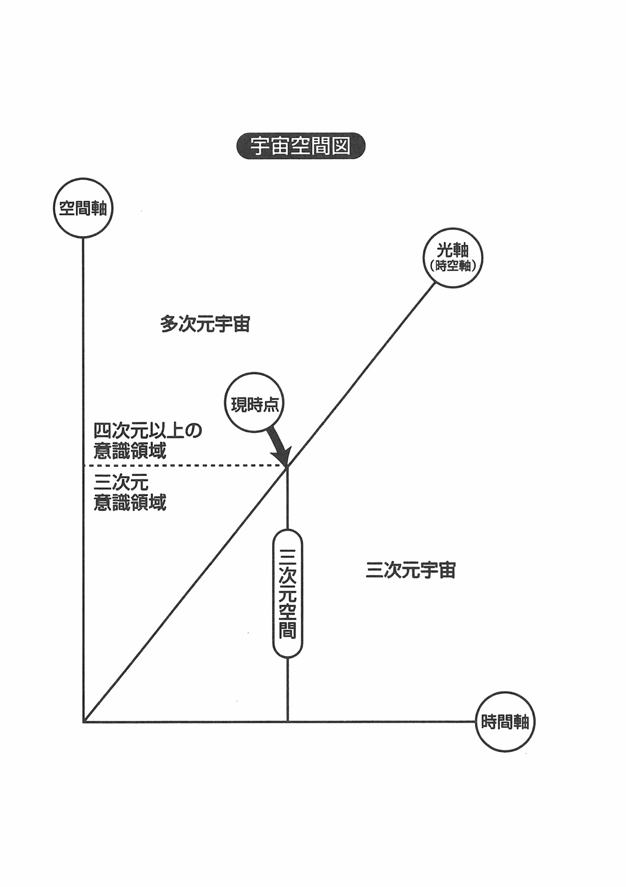

| 21世紀人間: これからの時代をどう生きるか (22世紀アート) | |
| 阪上 好延 | |
| 22nd CENTURY ART (2019) | |
新たな21 世紀の足音が間近に聞こえています。
しかしもしキャンバスに21 世紀の絵を描いてみなさいと言われたとすれば、私たちはどの様な絵が描けるでしょうか？
窓越しに見える都会の姿を眺めていますと、高層ビルが立ち並び、その合間を高速ハイウェーが走り、あの鉄腕アトムに描かれていた都会の町並みが現実に展開され、部屋の中にはコンピューターとファックスそしてテレビが配置され、世界の情報がインターネットを通して即座に知ることができるようになっています。
それは人里はなれた山間の村であったとしても同じで、世界の動きを即座に知り、同時に共通の話題として語り合うことができるようになっているのです。
まさに私たちのいる現在の姿は、過去の時代の人々から見れば異次元の世界であるかのようにきらびやかに展開しており、日常生活のあり方は、過去の王様や殿様以上の快適さと便利さを兼ね備え、そしてその豊富な情報量によって誰もがソクラテスやカント以上の情報知識を持ち合わせているのです。
おそらく21 世紀に入ってからも科学の進歩は、打出の小槌のように空中から宝物を取り出すが如く夢の世界をさらに現実のものにしていくでしょうし、月に人を送り出した人類は、そう遠くない時期に時空間を超えた浦島太郎のおとぎ話も実話とすることでしょう。
このようにして私たちは現在社会の延長線で、より高度に発展する科学によった豊かな21 世紀社会の絵をキャンバスに描くことができます。
しかしその絵は幼き頃の遠足の日を前にしてあの「わくわく」する思いや、お正月の来るのを指折り数えたあの「はずむ」期待をこめた胸躍る明るい原色の未来社会の絵ではなくなっています。
それは高度な科学技術と高度な情報化によって「物の豊かさ」を実現したものの、一方では地球環境や自然の生態系を破壊させ、愛するとか慈しむといった「心の豊かさ」を失わせ、人類が営々と築いた「物質文明」は、結果として人間にとってもっとも大切な「心の進化」という目的そのものを「物の豊かさ」の追求の裏側に追い込め、「豊かな物」を得ることなくして「豊かな心」が持てないような主客逆転の価値観を創り出しているからでありましょう。
21 世紀を前にして、そのような目的と手段を逆にして成り立っている文明がいよいよ臨界点に達し、あらゆる分野で物に比重をおいた進化に限界が生じ、「物の時代」に偏重し過ぎた進化発展を、本来の「心と物」のバランスのとれた進化の方向へ転換させようとの模索と提言がされています。
しかし残念ながら「慣性の法則」によってものを考え行動していく習慣を持つ私たちにとっては、その物質的価値観重視の意識を自力でもって本来の方向に転換させるのは困難であるばかりではなく、もはや遅きに失した感さえあるのです。
おそらくバランスを失ったまま「慣性の法則」によって進んでいき、多くの予言者や科学者の言う、いわゆる危機の到来に運命を任せざるを得ない確率のほうが大きいと言わざるを得ないのです。
有史以前の超古代にあった科学技術の高度に発展したと言われているレムリア文明やムー文明、そしてアトランティス文明が崩壊していったのも、その当時の人間が創り出した危機の状況を、当時も同じように人類が克服出来なかったためではないかとも思います。
しかし慣性の法則によってどのような不利で過酷な状況に進む確率が大きいとしても、幸いと言うべきか「文明の崩壊」が「人類の崩壊」にならずに、常に「新たな文明」を創り上げ現在に至ったという事実があります。
それはまさしく人類の自力による新文明建設ではなく、大いなる他力としての導きとしか考えようがありません。
よくよく耳を澄ませてみれば、微かにその大いなる他力の足音が聞こえています。
それは「慣性の法則」で進んだ振り子を方向転換させようとする人類の力を超えた大宇宙の意識の働きからくる足音であり、救いへの誘いの波の音のようでもあります。
21 世紀の端境期にいる私たちは、まさにその微かな足音を注意深く探り受け入れ、自らの意識を変革し、新世紀の新たな住人になるための大いなる選択の時に生きているのです。
残念ながら慣性の法則で生きる私たちにとって、それはコペルニクス的な意識変革を意味し、生易しいものではないために、殆どの人々は新たな文明から取り残されることになり、他力としての新しき波を感じ受け入れ、意識変革が出来るのは僅かな人達でしょう。
しかしその僅かな意識変革をした人が、ある数に達することによって、丁度雛が卵の中でつつく嘴の音に親鳥が外から力を貸して殻を破るがごとく、21 世紀の新たな文明が開花するのです。
大宇宙の法則は「調和と進歩」で、この大自然の摂理は「共生と進化」です。そして大宇宙と自然界の波動と意識変革をした人の波動が同調して「大調和」の波動となって、新たな「物と心のバランスのとれた21 世紀社会」が孵化していきます。
その社会は高度な科学技術の知的進化の遺産を受け継ぎながらも、それらをより上位の意識の次元に統合して成り立つ新たな社会です。
「危機の足音」を感じる私たちには、意識を自らの心の中に向けると必ずや新たな「福音の足音」も聞こえてくるはずです。
この本が一人でも多くの人たちに、新たな価値観による輝かしい21 世紀を描くことへのきっかけになり、そしてその新たな世紀の扉を開け、あの幼き頃の遠足のような「わくわく」する世界を垣間見、新たな21 世紀の新人類として再誕されることを願いながら書かせて頂きました。
二〇〇〇年五月吉日
阪上好延
有名なカウンセラーの著書に、人は「生きる存在」であると同時に「死ぬ存在」でもあると書かれてあり、当たり前のことですが改めて言われると、何故か頭をポカリと叩かれたような気がいたします。
それは大変意味の深い言葉でありながら、日常では意識しないばかりか、分かっているようで実感としてなかなかピンとこない言葉であるからです。
「あなたは死ぬ存在ですよ」と言われて否定する人はいません。
しかし誰もが今すぐ死ぬとは思ってもいませんし、死ぬことを前提に生きている人はいません。
ですからあらためて人は「死ぬ存在ですよ」と言われると、分かりきったことであるものの、心の何処かで「ドキッ！」と致します。
これは少し昔のように、殆どの人たちが三世代で同居し、畳の上で家族に看取られながら死を迎えるといった「死」が「生活」と隣り合わせにあって生活の中で「死」を実感として体験していた時代から、昨今のように核家族になり、殆どの人が病院で死を迎えるといった「死」が「生活」以外の出来事として感じられるようになった時代としての背景もあると思います。
さらに科学文明社会は「死後の世界」である「あの世」など検証できないものは、科学の対象外として「宗教」にまかせて、「あの世」の存在を考えることなく「この世」で生きることだけを考えることを常識とする物の見方考え方が背景にあると思います。
動物には、初めて出会う未知の生き物や「死」の危険のある状況に出くわすと、察知し警戒する本能がありますが、人間には過去現在未来という時間を認識する能力が加わることによって、未来に生ずる未知なる死後の世界を想像し、意識的に恐怖感を持ち、恐怖感そのものを避け否定するような心が働くのかもしれません。
特に幼いころから「あの世」について「嘘を言えば死んで地獄に行って閻魔さんに舌を抜かれる」とか「暗闇のお墓は幽霊がいる」など、あの世に対しては「暗くって恐ろしい」というイメージが教え込まれ、潜在的に洗脳され恐怖感を高めている部分もあるのかもしれません。
このように現代に生きる私たちは「死」を「生きる」こととは全く別個の不可解なものとして位置づけ、ほとんどの人々は「生きる存在」としての側面に比重を置き「死ぬ存在」としての側面や、死後の世界である「あの世」のことを考えることなく、寧ろ忌み嫌い、死を恐れ生きていると言えるのです。
しかし誰にも１００％ 確実に「死」が起こり、私たちは「生きる存在」であると同時に「死ぬ存在」でもあるのです。
私たちが突然あなたは「死ぬ存在」ですよと言われ「ドキッ！」とするのも、恐怖という以外に「死ぬ存在」としての側面を抜きに「生きる存在」としてだけで生きることへの潜在的な意識からくる警告であるのかもしれません。
自然界をどのように見渡してみても、自然界にあるもので「永遠」に存在するものは何もありません。
生命あるものは必ず死を迎え消滅しますし、生命以外の物も時間とともに風化し形を変えていきます。
地球ですら必ず消滅の時を迎えますし、太陽系そのものもそうです。
このように「この世」にあるすべての存在は「発生・成長・衰退・消滅」という循環を繰り返し「死」や「崩壊」という現象によって「消滅」しています。
物理学にある熱力学の法則の第一法則は、エネルギーはどんどん形を変えるが、その総量は一定であるという「エネルギー不変の法則」で、第二法則に「エントロピーの法則」というのがあります。
それはエネルギーは時の経過とともに「価値あるものから無価値なものに」「秩序ある状態から無秩序な状態に」変化するといった法則です。
たとえどの様な堅固な建物でも、時の経過と共に崩壊するように、「この世」のものは全て形あるものから形なき物に変化し、決して形のない物から形のある物に変化するようなことはありません。
たとえば森の中に設計図を置いておいても、自然にログハウスが出来ないように「この世」に存在する物は、すべて時間とともに価値なき物に変化し「永遠」に存在しつづけるものはなく、「死や崩壊」によって消滅する存在で、私たちも「この世」に生を受けた瞬間から一刻一刻「死」に向かって進んでおり、まさに「死ぬ存在」であることは間違いのない真理であるのです。
しかし「死の存在」という真理はあるものの「この世」は決して死を目的として存在しているのではなく「この世」は生きるための世界であることも明確な真理であるのです。
それは太陽や水そして空気は生きものを育むために存在していますし、自然界の動植物も生命を維持し生殖活動をつづけることによって「種」を保存させ、常に新たな生命を誕生させつづけており、自然界ではエントロピーの法則によって誕生したものは必ず死を迎え、「崩壊し消滅」していますが、自然の摂理には常にエントロピーとは逆の法則が働き、新たな生命を誕生させ、海や森そして川や空気は自然の循環の中で「無価値なもの」「無秩序な状態」を「浄化させ」「蘇生させる」働きをしているのです。
したがって「自然界」には「死」という現象はあるものの「死」を目的にしたものではなく、生きるための目的で創られた時空間であることは明らかなことなのです。
自然界が生きるための場所であることが真理だとすると、その目的に一番よく適合して生きているのは人間以外の動植物です。
たとえば「植物」は自然環境と適応することによって生存し、自然環境と適応できなくなれば枯れて消滅しますし、「動物」も植物と同じく自然環境と適応し、さらに「食べる・子孫を残す・休む」といった生存本能が加わって自然と適合して生存しています。
最近の研究では植物にも、苦痛や快感のような感覚的な意識があることが解明されつつありますが、動物はその苦痛と快感の感覚的刺激そのものを行動の基準として環境と適応し、他の動物と生存闘争をしながら能動的に生きており、環境適応能力や闘争能力が低下すれば死を迎え消滅します。
しかしよく見ると動植物の世界は、厳しき環境適応と生存闘争があるものの、それによって自然環境を破壊することはなく、生存活動そのものが自然環境と自然の生態系を維持し「自然界の摂理」と一体となって「共生と進化」をもたらす生き方をしているのです。
ある書物でミクロコスモスという「自然界の循環」を小さな密閉したガラス容器で模倣したお遊びのようなものの記事が紹介されていました。
そのガラス容器の中には、水と水草とミジンコとエビが入っており、そこに太陽の光をあてると、太陽の光によって水草が育ち、その水草をミジンコが食べ、そのミジンコをエビが食べ、そのエビの糞で水草が育つ。そして水草の出す酸素とミジンコとエビが出す炭酸ガスがバランスをとりそれぞれが生きつづけ、どれが欠けても全体が生きられない小宇宙を創り上げているといったものです。
動植物の生存はまさにミクロコスモスを大きくした自然界での生存そのもので、海や川そして山に太陽と共生して成り立っており、そのどれが欠けても豊かな自然界を存在させることが出来ない関係にあるのです。
しかしそこに人間の存在を考えた時に、どうして自然界に人間という生き物が必要になったのかという疑問が浮かんできます。
もしこの自然界に人間の存在がなかったとすればどうでしょうか？
明らかなことは、人間を月に飛ばすことは出来なかったものの、オゾン層を破壊させることもなかったでしょうし、動物による弱肉強食の厳しい生存闘争は繰り広げられるものの、原爆による殺戮や地球規模の崩壊、そして放射能による遺伝子の破壊や生態系の破壊はなかったでしょう。
このように考えていきますと、自然界にとって人間が存在しない方が完全な「共生と進化」の世界を創り上げることが出来、人間は言わば「共生と進化」の妨害者であり破壊者としての存在であると言えるのです。
確かに人間の存在によって生じた寄生生物などもあるとは思いますが、それは人間の存在に付随して生じたもので、自然界にとってもともと必要な寄生生物ではないのです。
このことから、自然界が自らの目的を持って「共生や進化」の為に人間という生きものを求めたとはどうしても考えられません。
むしろ自然界が目的を持って求めたのではなく、人間が自らの目的を持って自然界に誕生したと推定した方が納得のいく答えになるのではないでしょうか？
そのように推定できる最大の根拠は、人間が他の動植物にはない「思考する能力」を持つ生き物であることと、さらに高い「崇高な心」を求める生き物であるということからも垣間見ることが出来ます。
もし人間が自然界に生きるだけであれば、他の動物と同じように「本能」と肉体の苦痛と快感の「感受性」だけで充分で、そのような能力だけで「自然の摂理」に則った「共生と進化」の世界を創ることが出来るはずで、自然界の摂理にあっては、人間の持っている「崇高な心」や「思考する能力」は、もともと必要なものではなくむしろ無用の長物でもあるのです。
突然「あなたは死ぬ存在ですよ」と言われ「ドキッ！」とするのも、この自然界は生きる場所であることには間違いありませんが、ひょっとすると他の動物にはない「崇高な心」と「思考する能力」を持ちながら、その能力の本当の目的を忘れ、自然界を生きるためだけに使っているための潜在的な後ろめたさから来る自己処罰の警告なのかもしれません。
このように考えていきますと、自然界にとっては無用な「崇高な心」があり「思考する能力」を持っている人間が、この自然界を生きるためだけに存在するとする考え方には根本的な矛盾が生じることから、人間が「死」を考え「あの世」を考えることの出来る生き物であるというのには大きな意味があるように思います。
「あなたは心を持っていますか？」と問われれば、すべての人は肯定します。
「心」そのものは取り出すことも出来ないし、また目に見ることは出来ませんが、その存在を誰もが肯定します。
しかし多くの現代人は、肉体的な健康や生存のための「衣・食・住」について関心を示すほどに「心」について関心を示すことはありません。
その大きな原因は、目に見えない「心」に意識を合わせなくても「衣・食・住」を充足すれば生きることが出来ると思っているからです。
また肉体の働きは解剖し病状を発見したり、１００メートルを何秒で走ったかなど客観的に表現することが可能であるのに対して「心」を点数で表現することはできませんし、ましてや自分や他の人の心がどの程度の高さや深さそして広さがあるのかを客観的に評価することが出来ないのです。
「心」はこの世の有限の物差しで評価すること自体できないことであって、同じような出来事に出会ったとしても、その出来事に対しての心の感じ方は人によって千差万別で無限に広がり、しかも自分自身の「心」すら把握し統御することは難しく、他の人の「心」を比較したりコントロールするなど到底無理なことなのです。
このように無限に広がる「心」はこの世の物差しではなく、「心」そのものでしか感知できないことから、次第に人は目に見え評価が出来る「衣食住」に関心を示すほどに、目に見え評価が出来ない「心」に関心がいきにくくなっているのです。
しかし誰もが心の奥底では自分自身の「心」を知り統御し高めたいと思い、また他の人の「心」を知りたいとも思っているのです。
では、このようなこの世的な物差しで把握できない「心」とは、一体どのようなものでどのような働きをしているのでしょうか？
勿論無限に広がる「心」をこの世的な手法で区分することはもともと無理なことですが、あえてその働きを説明するとすれば、たとえば次のようになります。
まず初めに考えられるのは生存のための「本能」で、これは人間も含めてすべての生きものが生まれながらに持っている働きです。
「本能」には、個体として自然界を生きるための食欲・性欲・睡眠欲などの生存機能や、自然界全体の「共生と進化」の摂理を乱さない自動調整の機能が潜在的に埋め込まれています。
次に肉体の感覚器官からの刺激を感受する視覚・聴覚・臭覚・味覚・触覚といった「感受性」があります。
この感受性があることによって、環境との接触からくる刺激を肉体の感覚器官で「苦痛」や「快感」として味わっているのです。
ここまでは人間も動物も同じですが、その「感受性」の働きを見れば、犬の臭覚やイルカの超音波交信能力などは人間の「感受性」を遙かに超えており、動物のほうがより高感度であると言えます。
次に「知性」です。知性とは物事を判別し記憶する働きです。
知性を持つ生き物は、猿のように低い知的能力をもつ動物や、人間と同じ脳の容積を持ち寿命も同じくらいの「くじら」や「象」などが存在します。
もしかすると「知性」の中の記憶能力は「くじら」や「象」の方が人間よりも高いのかもしれません。
次にその知的能力を織物のごとく縦横に組み立て、時間と空間を考慮して実践のために論理化し体系化する能力である「理性」です。
ここからは人間の独占場ということができます。
そして次に目に見えない「愛」を感じ「善・美・真」を感じ、その源とも言える神や仏を信じるといった崇高な心と言われる「悟性」があります。
そしてそれらの「理性や悟性」を自らの生き方の指針とし行動に結び付ける「意志」があります。
この様に人間の「心」の中を「本能」や「感受性」「知性」「理性」「悟性」そして「意志」といった働きとして分類することも出来ます。
そこで気がつくのは、何故人間に他の動物とは異なった「知性」や「理性」「悟性」といった「高い心」と「意志」のような働きが必要なのかということです。
人間がこの自然界だけを生きるためだけならば、他の動物と同じような「本能」「感受性」そして自然界の摂理を破壊しない程度の少し優秀な「知性」だけで良いはずです。
特に本能に埋め込まれている自然界との自動調整機能にゆだねることで充分に自然界と共生していけるし、それ以上の「知性」や「理性」そして「悟性」そして「意志」のような高い心は、自然界を生きるためだけであれば強いて必要なものではありません。
たとえ自然界が何らかの目的を持って人間という高い心を持つ存在をつくる必要があったとしても、では何の為に必要なのかの答えが見い出せません。
「ミクロコスモス」の容器に知性や理性そして悟性や意志といった「高い心」を持つ生き物を入れればより高い「共生と進化」の循環がはたして可能なことでしょうか？
どのように考えても、自然界が目的を持ってそのような「高い心」を持つ人間を誕生させ、より高い「共生と進化」をさせる必要があるのかの合目的性のある答えは出てきません。
したがって人間が自然界に生きる目的を「この世」で生きるといった目的からだけでは説明が出来なくなり、どうしても「あの世」という存在を肯定して「あの世」とのかかわりをもってこの自然界で生きることに何らかの目的があって、そのために人間には動物にはない「高い心」があると答えることが納得のいく説明になると思います。
心の働きの中で「知性や理性」が中心となって生じるのが「思考する能力」です。
「思考」とは思い考えることで、「思う」と「考える」に分けてみますと「思う」には、経験による「記憶」と経験でない「想像（イメージ）」があります。
それは過去の楽しかった幼少期に両親に連れられて行った遊園地での思い出のような「記憶」や、未来に対して思い描く夢です。
さらに過去や未来の思いではありませんが、問題点などにぶつかって考え考えしているときにくる閃きや、芸術家などが感じる創造（イメージ）などです。
このように過去の経験と未来への夢、そして一瞬の閃きなどから「思い」が生じますが、それらの「思い」は脳の「右脳」が受け持つ部分と言われています。
次に「考える」とは、言葉で表すことや論理的に知識を整理し組み立て体系化することで、脳で言えば「左脳」と言われている部分です。
この様な思い考える「思考する能力」は人間にしかない能力で、知的能力があると思われる「猿」にしても、過去の経験を思い浮かべ合理的に考えるといった「思考する猿」になることはありません。
思考しているように見えるとすれば、それは過去の経験によって感じた「苦痛」と「快感」の「感受性」からくる「記憶」が、同じような局面に接したときに、イメージとして条件反射のように現れ、それらの繰り返しが学習効果（知性）となって働いているのだと思います。
そこで何故人間が自然界で「思考する能力」をもつ必要があるのかという疑問がわいてきます。
自然界にとってはもともと自然の摂理を壊さない猿程度の「知性」だけで充分で、人間の「思考する能力」は必要でなく、むしろ今までの人間の存在を眺めた時に、人間は「思考する能力」を使うことによって自然環境と生態系を崩壊しているのです。
人間の自然界に対するあり方を眺めてみますと、狩猟の時代では、自然界での生存競争に打ち勝つ必要から、人間のもつ肉体的ハンディーをカバーするために「思考する能力」を働かせ「弓や槍」を作りだしましたが、この程度は少し知性のある猿と同じで自然の生態系を崩すまでには至りませんでした。
農耕の時代に入ってからも、人間の「思考する能力」は道具を生み出し、農耕技術を考えだし、次第に自然を組み換え、少しずつ自然環境の破壊が始まったものの、まだ人間の「思考する能力」は自然の許容の範囲で、極端に自然の生態系を変えるまでに至りませんでした。
しかし農耕文化が発達し、人口増加が始まり、工業化の社会に入ってから人間の「思考する能力」は次第に自然破壊と生態系の崩壊に拍車をかけ、今日の高度な科学技術社会に至っては、オゾン層の破壊や地球温暖化、さらに核兵器の開発などによって地球規模の破壊と人間の生存の危機までもたらすようになり、今では自然界が育みもたらした生き物を、年間数万種絶滅させるに至っているのです。
このように人間が「思考する能力」を自然界で生存するために使った途端に、それは自然界に対して「加害者」となり「思考する能力」そのものが、次第に地球を崩壊させる危険極まる「悪魔の凶器」となっていったのです。
したがって、自然界が目的を持って進化のために「思考する能力」を持った人間を求めたとはどの様に考えても説明がつきません。
しかしだからと言って、逆に人間が「思考する能力」を、自然界を破壊する目的のために「悪魔の凶器」として持ったとはとても考えられません。
もしそうならば、人間が自然界に存在する理由すら出てこないからです。
このように考えていきますと「思考する能力」は、人間にとって単に自然界を生きる目的ではなく、より高次の目的があって与えられたものであり、自然界で生きる人間にとって「天使の弓矢」としての使い方が予定されて与えられていると考えないと説明がつかないことになります。
このように考えていきますと「思考する能力」を、この自然界を生きることだけに使った場合には「悪魔の凶器」となるとすれば「この世」を生きるためだけではなく「あの世」の存在を前提に、自然界で使われるときに「天使の弓矢」となるように人間に与えられたのだろうと推定したほうが納得がいくだろうと思います。
「思考する能力」を「この世」の自然界での生存だけに使っていけば、自然界への「悪魔の凶器」となり「害」を与えるばかりではなく、実は人間にとっても苦しみの原因にもなっていくのです。
なぜかと言えば、人間が自然界で生きるためには、まず「食べること」「子孫を残すこと」「安心して休めること」といった生理的な欲求を満足させることが必要で、その欲求が満たされると次に「仲間と共に存在したい」という集団への帰属の欲求が生まれ、さらにそれが満たされるとその集団の中で「認められたい」とする自己を顕示し承認されたいという欲求へと進んでいくと言われています。
この様な欲求は人間ばかりではなく、他の動物にもある基本的な生存のための本能欲求で、人間も動物も、そのために厳しい環境適応と弱肉強食の優勝劣敗の生存闘争を繰り返し生きなければならないのです。
そして環境適応と優勝劣敗の生存競争の中で、生あるものは必ず老いや怪我などによって生存競争に耐えられなくなる時を迎え、また環境適応できない時が到来し、死んでいくという厳然とした摂理が自然界に存在します。
しかし人間以外の動物にとっては、自然界での厳しい生存競争そのものの中での「苦痛」はあったとしても、人間の様に「苦しみ悩む（苦悩）」ことはありません。
勿論人間であっても、赤ん坊などは動物と同じで「おむつ」が汚れればぐずり、母親の温かい胸に抱かれたときは喜びの声をあげ「苦痛」と「快感」を訴えることがありますが「苦悩」することはありません。
それは過去や未来といった「時間」を意識したり、自己と他を区分して「自我」の自覚を伴う「思考する能力」がないためで、動物や赤ん坊も生存の時折の「苦痛」と「快感」といった刺激を感受することはあるものの「苦悩」そのものは生じないのです。
ところが人間に物心がついて「思考する能力」がついてくると「生きることの苦しみ（苦悩）」が始まるようになります。
では何故「この世」で人間が「思考する能力」を持って生きることが「苦悩」する原因になるのでしょうか？
一つの原因は人間は自然界で求められた存在ではなく、人間の側から目的を持って「この世」の自然界に進入した言わば宇宙人のような存在であるという点です。
したがって、喜んで受け入れられたものでないために、言わば他人の家で居候生活しているようなもので、人間にとって自然界はもともと遠慮しながら生きる場所であるのです。
ところが遠慮しなければならない場所であるにもかかわらず、それを知らないでまるで主人公のように「思考する能力」を使って我がもの顔で生きているために、その存在認識の根底が間違っていることから、基本的に「苦しい」のは当たり前であると言えるのです。
もう一つの原因は「思考する能力」をこの世の生存本能だけに使って生きようとするところにあります。
たとえば「食べたい」という本能的食欲は、動物の場合食べれば満足でそれ以上の欲求には広がりませんが、人間は「思考する能力」が加わることによって、より美味しい食事を人より多く食べたいといった欲求に変わります。
また動物の場合は、その日その時の食欲を満たせば終わりですが、人間は時間を意識し保存することを考えることによって、より多く所有をしたいという欲求に変わり、それが満たされないと「苦悩」するようになります。
「生活圏を守る」という本能的縄張り欲求が空間を意識し、「思考する能力」によって、より以上の覇権欲に変わります。
また自然の摂理の中での自己顕示や自己承認の本能的欲求に「思考する能力」が加わることにより、独裁欲や支配欲が生じ、それらの欲求が満たされないときに「苦悩」が始まります。
この様に動物にとっては厳しい大自然での生存が「共生と進化」の過程そのものですが、人間にとって大自然は「苦しい場所」であるとともに「動物的な生存本能」に「思考する能力」が加わることによって「生きる本能」が「生きる欲望」に転化し、そのことが有限の世界の中では、常に満たされることがない「執着心」となって「苦しみ（苦悩）」の原因となっていくのです。
したがって人間が自然界での生存だけに「思考する能力」を使う限り、幾らもがいても「苦しみ（苦悩）」から逃れることはなく、「思考する能力」そのものが、自然界に対しての「悪魔の凶器」となるばかりではなく、人間自らに対しても「苦悩の原因」になっていくのです。
自然界に対して「悪魔の凶器」となり、人間自ら「苦悩」する原因となる「思考する能力」を「天使の弓矢」とし、人間に「歓喜」をもたらすようにするためには、「思考する能力」を「この世」の自然界にだけでなく、「あの世」の視点から使うように方向転換するしかないと言えます。
しかし「思考する能力」のほとんどを「この世」での生理的経済的欲求を満たすために使い、そして創り上げた高度に発達した物質文明にあっては「思考する能力」を「あの世」の視点で使うこと自体異端として、また客観性のない非科学的なこととしてとりあつかわれ、現代の人々が日常の中で「あの世」に関心を持つとすればお葬式や瀕死の病の時ぐらいで、それ以外はほとんど関心を持たないようになっていると言えるのです。
科学の世界において次第に意識の世界が物の世界に影響を与えていることが分かりかけ、21 世紀には「あの世」という異次元の世界の存在について、科学的にも明らかにされると思いますが、客観的事実をもって真実とする現代科学においてはまだまだ門前払いで、臨死体験などについても研究をされていますが、それも追体験という客観的な直接説明ができないことから「あの世」の世界を科学として受け入れる状況にはありません。
このように人間が「この世」で肉体をもって五感によって認識して生き、しかも「この世的」な検証可能性あるものだけを真理として受けることを常識として創り上げている現代文明にあって「あの世」の存在を事実として受け入れ認めることは、はなはだ難しいと言わざるをえません。
しかし人間の持っている「思考する能力」や「崇高な心」の存在を考えるときに「この世」の観点からだけでは決して説明がつかないことも事実であり、科学的に検証不可能なものを事実でないとして、客観的に証明できることだけを真理として生きることは出来ないというのも事実なのです。
たとえば、現実に目に見えないものでその存在を無条件に受け入れ、科学的に証明されないでいて信じていることは無数にあります。
たとえば地球の年齢は45 億年と言われていますが、火の玉の地球から生物が住める様になり、そして生物から私たちのような高等の生きものに進化することは科学的な確率から言って、考えられないことでありながら当然のように進化論を信じていることや、身近なこととしては、目に見えない電波を何の疑いもしないで受け入れテレビのチャンネルを合わして生活しており、また第六感などを無条件に受け入れ、目に見えない「気分」というものに左右され朝起きた瞬間の「気分」の善し悪しで、その日の自分の行動が変わるばかりか、家族や職場での雰囲気が変化していることも疑いなく自然なものとして受け入れています。
この様に、私たちは直接証明はされていなくても、科学的に解明がされていなくとも、目に見えないことを無意識に認めている生き方をしているのです。
実は科学技術そのものも、目に見えないものの中にある法則を推定し、仮説を立てて実験して証明してきた積み重ねの結果であり、目に見えないから事実ではないと否定してきたのではなくて、目に見えないものを探究したからこそ豊かな物質文明も創造出来たのです。
さらに、特に目に見えないもので私たちの生きる上で最も大切なものに「愛」があります。
お年寄りや体の弱い方に席をゆずるなど、目に見える行為としての「愛」がありますが、思春期にあったあの心に思う「愛」を客観的に説明し映像化して人に見せることができるでしょうか？
映像化し証明できない「勇気」も同じで、行為としての勇気もありますが、心に思う勇気は取りだし見せることができないが誰もがその存在を知っています。
「希望」「正義」などもそうです。
このように目に見えないものを信じて生きているのが人間の本当の姿であり、逆に言えば人間は、目に見えないものを否定して「唯物論的」に生きることだけではもともと無理なことで、目に見えないことや証明されない事柄を信じなければ生きていけない存在が人間であって、人間はただその事を認識していないだけであると言った方が正解なのです。
目に見えない「心の存在」を信じるから理想が生まれ、信じるから勇気が生じ、音楽や芸術そして科学そのものも目に見えないものを信じるからこそ発展してきたのです。
実は、他の動物と根本的に違うのは、この目に見えないものを認める「信じる力」なのです。
「考える力」は他の高等動物にその片鱗が見受けられますが、見えないものを「信じる力」は人間にしかなく、信じることができることこそが人間の証明でもあるのです。
「愛」や「善・美・真」のような崇高な心は、「この世」の厳しい自然界での肉体的な生存欲求からは必然的に生じるものではなく、「愛」や「善・美・真」は目に見えない世界から導かれる意識（心）であって、そのような目に見えない「崇高な心」を信じて生きているのが人間の人間たらんことでもあるのです。
時に人々は目に見えないものを信ずる人を「狂信」と呼ぶ場合がありますが、最大の「狂信」は目に見えるものしか信じないとする人のことを言うのです。
「あの世」を認めないと人間が「この世」の自然界で生存することの理由が成り立たなくなり、「あの世」が存在しないとすれば、人間に「崇高な心」や「思考する能力」があることや、人間がなぜ「この世」に存在するようになったのかの説明ができなくなります。
厳しき自然界を生きるだけであれば人間に「愛」や「善・美・真」のような「崇高な心」は無用で、そのような「崇高な心」は自然界に生きるためだけならば却って「苦悩」の原因にもなるからです。
それは、人間が自然界だけに生きるのであれば、他の動物と同じように「苦痛」はあるが「苦悩」という心の苦しみがないように自然界は人間を創っているはずです。
したがって人間は「あの世」は目に見えないから「認めない」のではなくて「認める」しかなく、他の動物にない「崇高な心」や「思考する能力」を持っているのは、決して自然界を生存するという目的のためだけではなく、人間が「この世」に誕生した本当の目的は「崇高な心」と「思考する能力」を使って「心を進化」させることであり、自然界はそのための手段としての場所であるのです。
このように人間の「この世」での目的を「心の進化」とした時に、初めて人間が他の動物にはない「崇高な心」や「思考する能力」を持っている意味が説明できるのです。
そして人間のこの世での生存の目的を「心の進化」であるとした時に、「死」によって「肉体」が消滅すると「心」も同時に消滅するという考え方の根拠自体もなくなってしまうのです。
何故かと言えば「心の進化」が目的であれば、肉体の死によって肉体と共に「心」も消滅するのではなく、「心」は「永遠」であるという前提がなければ説明が出来ないからです。
それは「心」には「死」がなく「永遠の存在」として「無限の進化」を前提にしなければ、何の為に「心を進化」させるかの意味が出てこないことになるからで、「この世」が「心の進化」のための手段としての場所であり「心」は必然的に「この世」で消滅する「肉体」にあるのではなく、無限の世界である「あの世」を本拠地として永遠の生命を持って「心の進化」という目的のために有限の「この世」に誕生してきたとするのが納得のいく説明になるからです。
そして無限の存在としての「心」を物質界である有限の「この世」で存在出来るようにするために、有限の物質の衣である「肉体」を纏って「心の進化」という目的をもって生き、やがて肉体が有限の世界の物の法則によって消滅する時を迎えると、肉体の死という区切りとともに「肉体」から「心」を切り離し、本拠地である永遠の存在である「あの世」に戻し、何度も何度も繰り返すということが、人間が「心の進化」という目的のために「崇高な心」や「思考する能力」を持っているという意味からも必然的に導き出される自然な考え方であると言えるのです。
このような考えは、古代エジプトやインドの転生輪廻の思想や仏教の根本的な思想と一致します。
「肉体」は有限の世界を生きるために必要なもので、「心」は無限の世界で永遠の生命として生きつづける。
そして肉体はあくまでこの世の「有限の世界」に生存するためのもので、たとえば車と同じで、老朽化したり事故で乗れなくなれば廃車にして運転手が新しい車に乗りかえるように、運転手である「心」は「肉体」という車を何回も乗り換えて永遠にこの世とあの世を生きつづけるという考え方です。
この様に「あの世」を肯定し「心」の本拠地がそこにあり、そして永遠に転生輪廻することを通して「心の進化」をつづける存在として人間をとらえ、その目的のために「崇高な心」と「思考する能力」を持って「この世」の自然界で生きると考えると、私たちがこの世に存在していることへの最も自然な説明になるのです。
「心の動き」について心理学や精神医学などで研究が進み、最近では「脳」に対する研究も盛んになり、脳で生じるホルモンによって「感受性」や「感覚」などの心の動きが解明されるようにもなってきており、今後ますます心と脳との関係、そして脳から張りめぐらされた神経経路によって動く肉体との因果関係も解ってくるだろうと思います。
しかしながら心の本拠地があの世にあって「心の進化」のためにこの世という物質界に誕生している考え方をすれば、無限の存在である心の動きを有限の物質的な働きとして、すべてを脳内物質というホルモン等の働きだけで解明すること自体無理と言えます。
それは「本能」や肉体の感覚器官から派生する「感受性」のような心の動きについては、環境との接触による脳の反応としてホルモン等の作用として説明される部分もあると思いますが、人間の「愛」や「善・美・真」を求める「悟性」のような崇高な心は、物理的な科学では説明がつかないからです。
たとえば、「崇高な心」を唯物論的に物理的な説明としてホルモン作用と神経の働きとして、人間が他の動物にはない「苦悩」する生き物であるが故に、その生存の苦悩を和らげるために「悟性」と言われる感覚の脳内麻薬物質を作りだしていると説明するとしても、その様な解釈の仕方こそが科学的合理性に欠けることになります。
なぜならば「苦悩」というのは、人間が他の動物と違った「崇高な心」や「思考する能力」を持つが故に生ずるもので「崇高な心」が言わば「苦悩」の張本人であるにもかかわらず、その「苦悩」を和らげるために「崇高な心」である脳内麻薬物質を創るというのは矛盾そのものであるからです。
さらに言えば自然界にとって、もともと人間が存在する必要は何もなく、自然界にとって人間は加害者で、苦痛を感じているのは人間以外の生き物であり自然界そのものであるのです。
その苦痛を与える張本人の人間の苦悩を和らげるために脳内麻薬物質をつくり、その結果、その脳内麻薬物質の助けをかりて、自然界にとって必然性のない人間がますます生きつづけ、そして人間が生きつづける限り、自然界の生態系をますます崩すということは、どのように考えても可笑しいロジックで、羊の群れに狼を放って、その狼の苦悩を和らげるために喜びの麻薬物質を与え、際限なく羊を殺させるのと同じで、そのような仕組みを創ってまで人間を存在させる必然性はどこからも出てこないことになります。
千歩譲って、人間の存在が必然的に自然界に対して加害者としての働きをもたらすことから、自然界の「共生と進化」を崩さないために「愛」や「善・美・真」のような脳内麻薬物質が生じるようになったと考えたとしても、もともと人間の存在そのものが、自然界にとって崩壊の原因であることから、前提のところで説明がつかなくなります。
したがって「悟性」のような「崇高な心」を、この世的な物理科学だけで説明すること自体限界があり、「心の動き」は、どうしても無限の世界である「あの世」の法則を前提にしないと解明することが出来ないのです。
では「心の本拠地」である「あの世」の世界とはどの様な世界でありましょうか？
「あの世」という目に見えない無限の世界を説明する事自体が無理なことではありますが、あえてこの世的な観点で想像すれば次のような世界と言えます。
それは肉体や物のような有限の存在ではなく「心」といった目に見えない意識の波動だけの無限の世界で、たとえばこの世でも空中には目に見えないけれども無数に折り重なって色々な波長をもった電波が飛び交っており、また色々な波長をもった赤外線や紫外線等の光線があるように、あの世は目に見えない無限の意識（心）の波動が重々無尽に重なりあって存在する世界です。
無限の意識（心）の世界を有限の世界の限りのある言葉や文字で表す事自体が、あの世の本来の姿をますます歪めてしまうことになってしまいますが、誤りを承知でたとえれば次のような世界と言えます。
たとえば「赤いチューリップ」の花は、この世では誰が見てもその赤いという認識は同じであると思っていますが、それはそのように思い込んでいるだけで、誰もが他人の意識と全く同じになれないことから、人が意識している赤いという色は人それぞれの千差万別の色の認識があるのです。
そのことは色だけではなく、厳密に言えば姿形においても同じで、「チューリップ」の形そのものも人の意識の数だけ存在していることになるのです。
このように色も形も肉体の感覚器官には同じように反射して映っているものの、それが意識の世界に入ると、それぞれの人の意識の状態によって無限の異なった意識として認識されているのです。
さらに「この世」では、ある所に咲いた赤い「チューリップ」は誰の目にもその場所に存在して見えますが、「あの世」は時間のない言わば過去と未来が重なって存在している世界で、「チューリップ」が咲いている場所に「たんぽぽ」が咲いていたり、他の無数の存在が重なりあってその場所にチューリップだけが咲いていることにはならないのです。
このように「この世」での見方と「あの世」での見方は全く異なっており、それは人物を描くにしても、「あの世」ではあのピカソが多次元意識として描いた「女性の顔」でも及びもつかない表現となって描かれるのです。
そして無限の意識が重々無尽の波動となっている世界であるために、お互いを認識する方法も、この世の肉体が同時存在して見ている認識方法と全く異なっています。
たとえばこの世でも無数に飛び交う電波の中から、チャンネルを合わせて電波に同通（キャッチ）させテレビ画面を見ているように、意識だけのあの世では、重々無尽の波動の中で同じ意識の波動を持つ者が共振し共鳴することによって認識しあっているのです。
言わば「気心の合う仲良しグループ」が無数にあって、その各々のグループが同じ波動によって認識しながら永遠に存在し、そのグループが無限に重々無尽となって重なり合い広がる世界と言えるのです。
したがって、同じ波動を持ち無限に存在しつづけるそれぞれのグループでは、必然的に調和と喜びしか存在しないことになります。
もし排他や不信や不和という意識の波動が生じたとすれば、その瞬間に調和と喜びの波動領域と合わなくなって、調和と喜びの世界に存在することが出来なくなるからです。
したがってあの世は、本質的にその喜びを共通にした波動のグループが永遠に存在しつづける桃源郷の世界であり、それらが無限に存在する多次元の大調和した世界であるのです。
「あの世」は同じ波動（波長）のグループが永遠（無限）に大調和している桃源郷でありますが、同じ波動（波長）のグループが永遠（無限）に存在しつづけると、桃源郷そのものが成り立たなくなるといったパラドックスが生じることになります。
それはこの世においても、仲良しグループが「調和」した状態を何時までも変化なくつづけていると、次第にグループそのものにマンネリが生じ、やがては「停滞」し「退化」していくように、桃源郷で同じ波動（波長）のグループが永遠（無限）に「調和」して存在しつづけるだけでは、やがて停滞と退化が生じ存在し得なくなるからで、桃源郷が永遠（無限）に存在しつづけるためには「調和」していると同時に常に「進歩」しつづけることが必要となります。
ところが「調和」とは「進歩」がない状態で、「進歩」とはある「調和」を創造的に破壊して次なる調和に止揚させることであることから、「進歩」と「調和」を同時に存在させつづけることはこの世的な次元の論理からは不可能ということが出来ます。
したがって「あの世」の桃源郷の「大調和」とは相対的次元での「調和」ではなく、「調和」と「進歩」の相反する要素が同時存在しパラドックス自体が生じようがない「進歩即調和」という超次元での「絶対調和」であって、桃源郷とは「無限の進歩と無限の調和」の状態そのもので存続し、どの波動（波長）グループもそれぞれが「進歩即調和」の状態で成り立ち「停滞」や「退化」が生じようのない超次元の絶対調和の世界ということになります。
当然に「この世」は相対世界で「進歩」が働いている時は「調和」の働きがなく、「調和」が働いている時には「進歩」の働きがないことから「進歩即調和」の桃源郷（ユートピア）を永遠に存在させることは不可能で、「この世」で桃源郷（ユートピア）が生ずるとすれば、進化の縦のベクトルと調和の横のベクトルが十字架の如く交わるその「瞬間」にしか成立しないことになります。
実はこのような「あの世」に永遠（無限）の桃源郷が存在し、「この世」では瞬間にしか桃源郷が成立しないということそのものに大きな意味があるのです。
それは神（宇宙意識）は「進歩即調和」の大調和を存続させる一つの方法として「退化や不調和」と「進歩と調和」の生じる相対世界を創り、そして人間の潜在意識に「進歩即調和」の桃源郷の思いを織り込み、相対世界の中で瞬間とは言え人間の努力によって桃源郷を実現させる機会を創らせることによって、人間をして神の世界の「進化」の一翼を委ねようとされているように思えるからです。
そのような神の意図があるからこそ、この世では瞬時にしか実現しない桃源郷を追い求め、時代や民族そして地域の違いを超えて人類は永遠の課題として果てしなく努力しつづけ神より委ねられた「進化」の担い手としての使命を果たそうとしているのです。
そしてその使命を果たして「あの世」の永遠の桃源郷の大調和の世界に回帰することを潜在的に思いつづけ、「意識の進化」という目的をもって何回も何回も「この世」に転生しつづけているのです。
おそらく桃源郷の大調和に漂う波動とは「愛」の波動と同じで、永遠（無限）の桃源郷（ユートピア）への思いと人類が永遠の課題として求めつづけている「愛」とは本源的には同じもので、共に神より委ねられた「進化」の使命を果たそうとする思いが根底にあってその思いが原動力となって「桃源郷（ユートピア）」や「愛」を求めさせつづけているように思えるのです。
したがって「愛の波動」とは「桃源郷の波動」そのもので「あの世」の桃源郷には「愛の波動」そのものが永遠（無限）に漂いつづけ、「愛の波動」が源となって創り出される「善・美・真」の波動が充満し、「善・美・真」の波動とは全く逆の「悪・醜・疑」の波動などは生じようがなく、ましてや「停滞や退化」は生じようがない絶対のユートピア世界であるのです。
もし「あの世」に「調和」とは逆の「不調和」や「進歩」とは逆の「退化」が生じるとすれば、それは「あの世」の桃源郷とは別の「この世」の相対世界で人間が「物の法則」に囚われることによって生じさせた意識領域で、物の法則そのものによって自らが退化し消滅し自己完結する「愛」「善・美・真」の波動が永遠（無限）に漂いつづける桃源郷としての「実の意識領域」とは全く別枠の神の意図に反して人間が創った「悪・醜・疑」の波動漂う「虚の意識領域」であるのです。
宗教の世界で言う地獄や魔界というのも、「物の法則」に囚われた人間が創り出した意識領域のことで、宇宙の摂理に基づかないが故に「進歩と調和」はなく、「愛」「善・美・真」の波動と共鳴できないで、闘争と破壊によって停滞と退化を繰り返し「進化」の目的がないことから「この世」に転生することも出来ないで「この世」の人に憑依するしかなく、「この世」の「悪・醜・疑」の波動のエネルギーを増幅することでしか存続しえない神の摂理が働かない虚の世界であるのです。
したがって宇宙の摂理は「無限の進歩と無限の調和の法則」によって成り立ち「退化」や「不調和」は生じようがなく「実の意識領域（実在）」としての「あの世」の桃源郷とは「愛の波動」漂う大調和が永遠（無限）に存在しつづける世界であり、同じ波動を持つグループが重々無尽に大調和して存在しつづける世界であるのです。
「あの世」は「無限の進歩と調和の法則」によって成り立たっていますが、実は「この世」も「無限の進歩と調和の法則」が作用して成り立っているのです。
もし「この世」が「物の法則」だけで作用する世界であるとすれば、「この世」は物の法則により存在しつづけることは出来ないことになります。
それは「肉体」をはじめ「地球」や「月」「太陽」そして宇宙の星々は勿論のこと、人間が造った諸々の物や文化すべて「この世」に存在するものは、エントロピーの法則によって形あるものは形なきものに、価値あるものは価値なきものへ、秩序あるものは秩序なきものに変化し、最終的には崩壊し消滅し存在しなくなってしまうからです。
しかし「この世」は物の原理であるエントロピーの法則によって「崩壊し消滅」が生じると同時に常に新たな誕生（蘇生）と成長（発展）の姿があり「無」から「有」が生じ、「物の法則」の支配によって全てのものが「崩壊し消滅」するだけではなく、「創造と蘇生」としての「調和と進歩の法則」が働いている世界でもあるのです。
それは言いかえれば「この世」は無限の世界の「進歩と調和の法則」の中に存在する有限の時空間の世界であるからなのです。
では何故「無限の世界」の中に「崩壊し消滅」する「有限の世界」を創る必要があったのでしょうか？
「創造主」は全知全能であるが故に、「有限の世界」など創らなくても「無限の進歩と調和」の完成した完全な世界を創れるはずです。
それにもかかわらず「崩壊し消滅」するような「有限の世界」を創ったのは、大きな意味があると思われるのです。
一つには、創造主自ら親が子供を育て、子供の成長を見守りながら喜びを味わうように、自らの分身を創造して、危険を伴うが成長出来る場として崩壊し消滅する「有限の世界」を創造したと人間的に推察することも出来ます。
しかしそれは「この世」を創ったことに付随する創造主の楽しみのようなもので、本当の意味はおそらく宇宙そのものの進化という目的から「有限の世界」を創ったと推定する方が納得がいくように思います。
それは創造主の世界である「完全な世界」とは「完成している世界」ではなく常に「完成しつづける世界」でなければならないからです。
何故ならば「完成した」とは「完結」したことであって、「完結」したその瞬間に「進化」が止まった状態になり、当然に「進化」が止まった状態は「完全な世界」とは言えません。
「完成しつづける世界」とは、常に「進化」しつづける状態のことであって、そのような完成への余地のある世界は、逆に「完全な世界」ではないと言うことになります。
したがって創造主の世界は「完成しつづける世界」でしかも「完全な世界」というパラドックスを統合した世界、即ち常に完成のためのプロセスを持ちながらどのステップもすべて完全な状態の世界ということになります。
しかしそのようなパラドックスを統合し同時に満たすことは高次元の創造主の世界では可能であると思われるものの、プロセスのある世界では理論的には無理なことで、プロセスからは必然的に前なる完全のステップから次なる完全のステップとの間に、前の完全なるステップを「解体する世界」が必要になってきます。
創造主は何らかの意図によってその解体が生じる場所として「有限の世界」としての「この世」を創り、その担い手としての分身を創り、その分身をして「進化」を委ねていると思えるのです。
すこし混乱するような説明になりましたが、要するに「創造主」とは「無限の進歩と調和の法則」そのもので、その目的のために自らの分身を創り、分身の意識（心）に「無限の進歩と調和」の波動である「愛」と「善・美・真」を刷り込み、自らの内部に時空間のある「有限の世界」と「調和と進歩」と「崩壊し消滅」する相対システムをつくり、その世界で分身に「進化」と「退化」を委ね、「退化」という過程を許すことによって進化させ、「無限の世界」に「無限の進歩と調和」の「完成しつづける完全な世界」を創り上げるという方法をとっているのだと思うのです。
無限の世界としての「あの世」と有限の世界としての「この世」というとらえ方をして「有限の世界」が創られた意味を考えるとすれば、このようなロジックが考えられるのです。（第二章第五節「三次元宇宙に『解体の要素』がある理由」を参照）
おそらく「この世」は「あの世」の法則を支えるために「あの世」の中の部分として存在し、そして人間が進化できるための場所（時空間）を創り、絶対の世界の中に相対の世界を内在させ、絶対の世界の法則によって相対世界に現象として物や出来事を創らせながらその過程を通して、絶対の世界の法則を支えるといった絶妙なる仕組が創られているようにも考えられるのです。
このように「あの世」と「この世」を説明すると、どうしても「この世」と「あの世」を分けて別個の存在として説明するようになりますが、「あの世」の視点から説明すれば「この世」は「あの世」の中にたたみ込まれており、物の法則の「崩壊・消滅」そのものも無限の進歩と調和の中にたたみ込まれ「この世」的な視点から「崩壊・消滅」は見えるものの「あの世」の視点からは「崩壊・消滅」自体がたたみ込まれているために「崩壊・消滅」そのものは見えないのです。
言わば「この世」と「あの世」は、たとえば「物質」を「分子---原子---素粒子---そしてクォーク」とどんどんミクロ的に探究していくと、最後は「粒子と波動」の世界に到達し「波動」は無限の存在としての全宇宙にたたみ込まれ、全宇宙のたたみ込まれている見えない波動が「この世」では「見える粒子」となって不確実に数個現れては消え、消えては現れるように「無から有へ」と「物質化」したり、また「有から無へ」と消滅している姿と同じで、「あの世」の視点からは波動しかないのです。
よくたとえで言われるのは「水」です。
温度が０度以下に下がれば個体としての「氷」となり、常温になれば液体としての「水」に、そして１００度以上の高温になれば気体としての「水蒸気」となるように、目に見える「この世」は「あの世」の目に見えない波動が見えるようになった世界であるのです。
したがって「この世」は「あの世」の「無限の進歩と調和の法則」が見える部分として創られたのであって別個の存在ではないのです。
しかし別個の存在として「この世」の存在の意味を考えた時には「この世」は無限の宇宙としての「完全な世界」を創るために必要な存在として創られたと言えるのです。
「あの世」で桃源郷の世界が無限につづくとすれば、人間があえて「この世」に誕生しないで、永遠にその桃源郷の世界に存在しつづけ、自然界である「この世」に誕生しなければならない理由はないはずです。
人間は自然界にとって自ら葉っぱ一枚生み出すことが出来ない不必要な存在で、人間が存在することによって自然界が破壊されることから、自然界にとって人間は悪魔のような存在であるのです。
また人間にとっても、この世は苦しい場所であり、その苦しい場所である自然界を害してまで存在する理由はなく、永遠に桃源郷である「あの世」で存在しつづければ良いはずです。
このように考えていきますと、人間が「この世」に誕生した目的を「この世」の視点で単に肉体的に存在するために誕生したとするのではなく、「あの世」の法則である無限の進歩と調和のため、その担い手として目的と使命をもって誕生したと言わざるを得ないのです。
したがって本来の目的と使命に気づくことなく「あの世」を否定し「この世」での肉体的な生存のために生きた場合は、当然に「心の波動」は宇宙の法則とは共鳴しないばかりか、宇宙の意図とは異なった逆の波動となり、幾ら努力したとしても努力逆転となって、そのような生き方によって創り上げる文明は、結果として自然界を崩壊させるばかりか、本来の「心の進化」とは逆に「心の退化」をもたらし、人間社会そのものを不調和な姿にさせていくようになるのです。
このことは私たちが知りえるここ数千年の歴史を眺めれば明らかで、「この世」的には目を見張る輝かしき科学技術の進歩によって豊かな物質社会を創りあげたものの、本来の目的である「心の進化」の観点から眺めれば、釈迦やキリストのような神の使徒のごとき偉人が出現し、人間に本来の使命と目的を気づかせているにもかかわらず、ここ２０００年で人間はどのくらい「心を進化」させてきたかと問えば明らかです。
確かに知的には高度な情報化社会を創りあげることによって、家庭の専業主婦ですらソクラテスやプラトン以上の情報をもっていますが、あの釈迦やキリストの時代の人たちと比べてどれだけ心が進化したと言えるでしょうか？
葉っぱ一枚創れない人間に「崇高な心」と「思考する能力」のような「高い心」を与えられたのは、自然界への「悪魔の存在」としてではなく「天使の存在」となって、自らも「心の進化」をするためで、「崇高な心」はあの世の「愛」「善・美・真」を思い起こし、あの世の桃源郷の世界と同通するためで、「思考する能力」は自然界を征服して物質的な豊かさを創り出すことではなく、物の法則の支配する「この世」の荒い波動を「愛」「善・美・真」の精妙な波動によって包み込み調和させ、自然界と共生しながら「心の進化」を伴った物の世界を具現化させる為であるのです。
そして荒い「停滞と破壊」の波動を包み込み、精妙な「進歩と調和」の波動によって「この世」を生きた時に、その努力の恩寵として「心の進化」がもたらされ、その「心の進化」によって大宇宙の法則である無限の進歩と調和を支えることが意図されているのです。
人間が「この世」に存在する本当の意味は、単に自然界を生きるためではなく「心の進化」を通して宇宙の進化をもたらすことであり、あの世を本拠地とする「愛」「善・美・真」の心を「この世」に具現化することにあるのです。
そのような本来の目的に沿って「この世」を生きた時に初めて、この自然界は喜びの場所になり、人間は自然界にとっても「天使の存在」となれるのです。
「この世」は人間にとって「心の進化のための学習の場」であるということは、自然界に人間が存在することの意味を考えれば自然と導き出される答えで、実は誰もが潜在意識でそのことを知っているのです。
たとえば「自らが向上」している時に味わう満足感は「心の進化」という目的に合っているからで、「他の人に親切」にした時の充実感も「心の調和」の目的に合っているからで、そのような喜びは、誰からも教えてもらったのではなく、誰もが潜在的に心の奥底に持っている意識であるのです。
したがって誰もが「心」の進化と調和に合うような体験をしている時には、心の底から悦びを感じ、逆に「心」の退化や不調和を創り出すような体験をしている時には、嫌悪感や罪悪感を感じるようになっているのです。
それは宇宙意識である神が、宇宙の進化を分身である人間に委ね、人間がその意図に反するような状況に出会った時に、人間自ら本来の意図に戻れるよう神より与えられた自然治癒力であり自浄作用能力であるのです。
しかしこのように潜在意識の中に神より与えられながらも「進歩と調和」への気づきや本来の喜びよりも「この世」に生きる分身である人間は、この厳しい自然界を生きていく中で、次第に「肉体」の五感を満足させ、欲望の達成感そのものが喜びであると錯覚するようになり、「思考」そのものも五感による目に見え感じる世界を生きるために使うことを常識として、本来の「心の進化」という目的を忘れ「肉体感覚の快楽への道」を選んでいくようになっているのです。
当然に肉体的な満足を求める道は一瞬の「肉体の快楽」を味わうものの、宇宙意識とは離れるがために、心の奥底からの喜びを味わうことはなく「心の苦悩」を味わい、次第に不調和と停滞を創り出すことにもなっていくのです。
このように人間が「肉体」を維持しなければ「この世」を生きてゆけないということは、神から潜在意識に自然治癒力や自浄能力を与えられているものの、それに気づき乗り越えることは大変な試練であるのです。
たとえ「この世」が心の進化のための学習の場と目覚め気づき、本来の目的に沿って生きようとしたとしても、誰もが「ハムレット」の如く「心だけでは生きられない、さりとて肉体に振り回される生き方も出来ない、それが問題だ！」と試練を味わうのです。
しかし神の意図は、その試練そのものを通り越すことなくして本来の目的と使命を達成できないように分身を創っているのです。
それは丁度マラソンランナーが肉体の酸素摂取能力を高めるために、わざわざ心臓の負担の大きい空気の薄い高地でトレーニングをするように、人間は心を進化させるために、わざわざ苦悩の要素のある「肉体」に入って「心のトレーニング」しているのと同じで「ハムレット」のごとく「苦悩」を体験して通り越すことによってしか本当の喜びとしてのゴールに至れないように創られているのです。
言うならば「肉体」は苦悩の最大の原因であるものの、それは最大の克服課題であって、それを克服することによって「心の進化」という最大の喜びに至り、「宇宙の進化」という究極の喜びがもたらされるよう「肉体」は最大の喜びの原因としても創られているのです。
このように「肉体」は本来の意識に目覚めるための最大の障害物であり、苦悩と不調和を創り出す最大の原因ではあるものの「肉体」なくして、本来の「目的と使命」を果たすことが出来ないように創られているのであって、人間は「肉体」に振り回されたり、逆に「肉体」を否定して生きるのではなく、「肉体」を使いながら「肉体」からくる欲望を生命力としてコントロールして、本来の目的と使命に目覚め克服する手段にすることによって「歓喜の道」につながるように意図して創られているのです。
さらに「肉体」は、本来の精妙な意識（心）の波動をこの世の荒い波動から守る言わば防寒具としての役割と、「肉体」という防寒具を着ることによって、意識の波動が異なれば交流することが出来なかった他の意識の波動の交流を可能とさせる役割があるのです。
そしてさらに「肉体」という不自由な衣によって拘束され生きることを体験することによって、肉体に拘束されない本来の自由自在な意識（心）の世界が、どのように素晴らしい世界であるのかを気づかせるためのものであると言えるのです。
それは断食の体験によって日頃の食事がどのように有り難いかを感じ、断食後の最初の質素な食事の美味しさを実感するように、束縛や縛りを体験して初めて束縛や縛りのない本当の喜びを知るということと同じであるのです。
人間は「心の進化」という目的があって、この自然界に存在していると言えますが、では動植物が自然界で存在し生きる目的は何なのでしょうか？
自然界は人間の存在がない方が「ミクロコスモスの世界」として調和ある循環社会を創り、「崩壊と消滅」の物の法則があるものの大宇宙の「進歩と調和」の法則によって「誕生・成長・衰退・消滅」の循環を繰り返しながら、「新生と蘇生」によって「共生と進化」の見事な自動調整の活動をつづけています。
このように自然界にあっては、動植物の生存活動そのものが自然の摂理によって「共生と進化」をもたらしており、人間のように「あの世」の視点を強調しないでもその存在の意味を説明することが出来ます。
しかし動植物は自動調整作用をもつ「本能」と「感受性」そして少しばかりの「知性」を持って自然の摂理と同化してただ自然界で生存することだけが目的であるということには少し疑問がわいてきます。
植物や動物の見事なまでの極彩色は、単に種の保存のための求愛のためだけの本能ではないように思えますし、またなぜ自然界にとって元々必要ではない人間に食べられても美味しいような存在であるのか、何故あのように数千万種の種類があるのかといったことを考えると、単に自然界に同化して生きるだけの目的で存在しているようには思えないからです。
おそらく人間の肉体とは比較にならない極彩色を持ち、人間の感覚能力と比較にならない能力をもっているのは、人間とは異なった「愛や美」の進化目的や、高度な感覚能力を進化させるという目的を持ってこの世に存在しているのかもしれませんが、どうしても人間が存在するということを前提に目的を持って存在しているように思える部分があるのです。
たとえば、人間のいない惑星があったとして、そこに色とりどりの花が咲き色々な形と働きを持つ動物が存在する必要があるのだろうかということです。
動植物自体が「愛や美」という「高い心（波動）」を持つという進化目的があると言えなくもありませんが、人間との関係で眺めた時に、人間がより高い次元の神を敬い奉仕しようとする思いが潜在的にあるように、動植物に神の分身としての人間に奉仕するという目的があるためではないかと思えるのです。
それは人間にとっては動植物は必要不可欠な存在であるものの、人間という存在は、自然界や動植物にとっては「共生と進化」の破壊者であり、生態系を崩す厄介者であり、本来の運命共同体としての仲間ではなく、「敵」であり外部侵入者でもあるのです。
したがって、動植物にとって不必要な厄介者で敵でもある人間に対しては必然的に人間の目には美しく見せないように、人間に食べられると猛毒になるように、また人間が近づくと異臭を放すような何らかの防御本能が働くはずです。
しかし大半の動植物は進んで人間から見て、美しい姿を創り出し、人間の生存のための「衣・食・住」に適した姿や形や味をもって奉仕し、一方的な敵である人間を共生の対象として受け入れているのです。
さらにこのような人間に対する奉仕以上に動植物が厳しい生存闘争と優勝劣敗の世界に生存しながらも、自然界の共生と進化の摂理の中で、消滅や崩壊ではない大調和の世界を創り出している姿を見える形で示していることにも、人間の存在を前置きとした意味が見い出せるのです。
それはまさに宇宙意識が相対世界の中で動植物の姿をもって、人間に「調和と進歩」を気づかせるために創ったとしか言いようがなく、動植物の本能の中にそのような「目的」を刷り込んでいるようにも思えるのです。
このように人間との関係で動植物の自然界での存在を眺めた時に、動植物が動植物としての進化という目的はあるものの、人間の目的を支えるための無償の奉仕としての目的と、自然界での共生と進化の生存のあり方を人間に見せることによって、人間に本来の目的を気づかせる目的があって存在しているように思うのです。
「この世」が動植物だけの自然界であったならば、この自然界は自然の摂理に従った穏やかな「共生と進化」の世界をつづけていくことが出来ます。
時には自然や動植物は、自然の摂理の中で破壊し消滅する現象を起こすことによって「人間」を苦しめることもありますが、それはあくまで自然の摂理に組み込まれた「進化」のための破壊や消滅であって人間だけが受ける一方的なものではありません。
しかし人間は、人間の欲望を満たすために自然環境を破壊し、生態系を崩しつづけ、動植物や自然界に対し、一方的な加害者であるのです。
このような傲慢で遠慮を知らない「悪魔」のような人間であるにもかかわらず、自然界は大きな愛をもって人間を受け入れるばかりではなく、動植物は無償の奉仕者となりつづけているのです。
このように考えていきますと自然界を人間中心の「人間が生きる」ためだけに利用することは決して許されないことでもあります。
人間中心にこの自然界を生きて来た結果、20 世紀末の私たちの周りの社会的・政治的・経済的な環境は、まるでダッチロールの如く揺れ動き、混乱と崩壊の様を呈しながら着地点不明な状態を創り上げています。
高度な科学技術と経済発展によって20 世紀を謳歌したあのアメリカは、あのロシアは、そしてヨーロッパの姿の中に21 世紀への輝かしい希望ある着地点を見い出すことができるでしょうか？
世界各地で起こる地震・洪水・異常気象などの天変地変やエイズなどの奇病の発生は、自然の摂理というにはあまりにも不可解です。
それらは、人間が本来の目的を忘れ創り上げた科学と経済が足元から崩れる姿でありましょうし、それらの価値観に奪われた心の波動が、自然界に影響して創り上げた姿であろうとも思われます。
もはや人間の満足だけを追求する科学は、自然界にとっては凶器です
もはやこの世を生きるだけの教育は、自然界にとっては不調和な教育です
もはや物の豊かさだけを求める経済は、自然界にとって不経済です
もはや人間中心の地球は、自然界にとって崩壊しかありません
私たちは自然界で「生かされた存在」であり、人間はもともと自然界だけに生きるために存在していないのです。
「崇高な心」と「思考する能力」は、自然界だけを生きるためだけに与えられたものではないのです。
それは明らかに「あの世」と「この世」を貫く大宇宙の「無限の進歩と調和の法則」のために「心を進化」させるために与えられたものなのです。
それを見分けるのも一人一人の「崇高な心」から導かれる智恵です。
私たちは今「混乱と崩壊」ではなく「進歩と調和」への転換点に立ち、一人一人が価値観を転換して生きる新たな扉の前にいるのです。
その21 世紀への「輝かしき未来」の扉を開けるのは、
一つ目に、私たちはこの自然界だけを生きる目的で存在していないことの自覚です
二つ目に、私たちは自然界によって生かされているという自覚です
三つ目に、私たちは「崇高な心」をもった生きものであることの自覚です
四つ目に、私たちは「思考する能力」をもった生きものであることの自覚です
五つ目に、私たちは転生輪廻している存在であることの自覚です
六つ目に、私たちはこの世に「心の進化」を目的として誕生したことの自覚です
七つ目に、私たちは自然界と人間社会の「進歩と調和」を実現させることを目的として生きることの自覚です
「物」から「心」そして「崇高な心」から自然界と人間社会を調和させ発展させるために「思考する能力」を使っていくことが輝く21 世紀に止揚させていく生き方なのです。
それは「心と物のバランスのとれた愛ある人間」の存在と「物重視の偏重した社会」から「大いなる智恵と大いなる愛」が漂う社会建設であるのです。
この三次元宇宙は「光」の速度で広がっていると言われています。
光の速度は毎秒30 キロですから、私たち自身も毎秒30 キロの光の速さで進んでいることになります。
その猛烈な速さを感じないのは、月や太陽系や星がそれぞれ30 キロの速度で離れていることではなくて、地球と三次元宇宙の果てが秒速30 キロの速さで離れているということで、三次元宇宙を風船玉とすれば、地球は風船玉の内部の中心点の中の肉眼では見えないような小さな点のようなもので、光の速度で１５０億年もかかる風船玉の外側である三次元宇宙の果てが秒速30 キロで膨らんでいても、地球上にいる私たちには捉えることの出来ないあまりにも遠い距離であるため全く感じることが出来ないのです。
しかし私たちが光の速度を感じられない理由は、実は私たちが見ている全ての存在が光の速度で同時進行していることにあるからなのです。
私たちが新幹線に乗っている時に、同じ速さで進んでいる自分の速さを感じることが出来ません。
また自分の体温と同じ温度の湯に指を入れても温度を感じることが出来ません。
全く同じ音量と音質を持つ者同士が同じメロディーを歌っても、他の人の歌が聞こえないばかりか、自分の歌もそのハーモニーの中に溶け込んで聞くことが出来ないように、私たちを含めて全ての存在が光の速度で同時進行していると光の速度そのものを感じることが出来ないのです。
さらに私たちが光の速度を感じられない最も大きな理由は、すべてが光の速度で進んでいると同時に、全ての存在の本質が「光」そのものであるからなのです。
それはプリズムを通して七色に分けられる前の「光」が見えないように、全ての本質が光そのものである場合、私たちの感覚器官では「光」そのものを見ることが出来ないのです。
そんなことはない、太陽や月そして景色を見ているではないかと言われると思いますが、私たちが見ている太陽は勿論のこと、目の前で展開する色々な光は「光」そのものではなく、プリズムを通した光と同じで「光の反射」を感覚器官で受けとり脳で意識したもので、目の前に展開する景色や夜空の星星の姿は、あくまで「光」が作用して七色に反射した「光の作用」の「結果」で、私たちの感覚器官では三次元宇宙にある全ての存在の本質としての「光」そのものを見ることは出来ないのです。
このように私たち全てが、光の速度で光と一体となって同時進行しているために「光の本質」そのものを感覚器官で感じることが出来ないばかりか、本質としての「光」そのものも感覚器官で見ることも出来ないのです。
私たちが三次元宇宙で見ているのは、実は見ることの出来ない「光」の本質を三次元的な光の反射を通して感覚器官で目に見える形で受け取っているのであって、本当の本質としての光そのものを見ているのではないのです。
私たちを含めて三次元宇宙は勿論のこと多次元宇宙すべての本質は「光」そのものであるために、私たちの感覚器官では決して見ることができません。
したがって本質としての「光」そのものを見える形として表現することができませんが、概念として次のような図（次ページ参照）として表したいと思います。
方眼紙上に縦軸に空間軸 、横軸に時間軸 を引き、原点から右上45 度の方向に光軸 （時空軸）を引いてそれを宇宙空間図と名付けることにします。
そして45 度の光軸より下方の時間軸までの領域を三次元宇宙領域として、光軸より上に広がる領域を多次元宇宙領域とします。
光には「光波」という波の性質と「光子」という粒子の性質という二つの性質があると言われています。
この「光波」は目に見えない波動ですから、光軸より上の見えない多次元宇宙領域に広がっているとし、「光子」は「粒子」として光軸よりも下の三次元宇宙領域に目に見える現象として現れるとします。
人間の本質は「光」そのものですから人間は何時も光軸上に存在し、波の部分である「意識」によって多次元宇宙領域に広がると同時に、粒子の部分である「肉体」によって三次元宇宙領域に現れていることになります。
勿論この世に存在するものは全てが「光」そのものですから、人間に限らずマクロ世界からミクロ世界すべての存在が、波の要素と粒子の要素を持っており、多次元宇宙領域に波として広がっていると同時に三次元宇宙領域に現象として現れていることになります。

このことは量子力学においても解明されてきており、今後は三次元宇宙領域に現れる粒子から多次元宇宙領域に広がる波動の探究によって、科学の方面からも人間の本質や三次元宇宙の本質そして多次元宇宙の本質が解明されてくるだろうと思います。
さて宇宙空間図に戻って、私たち人間の本質の位置は常に光軸上にあり、三次元宇宙領域から見れば光の速さで45 度の方向に一刻一刻で進んでいることになります。
そして三次元宇宙領域で、時間とともに光軸上を進んでいるその一刻一刻の時点を「現時点」と呼ぶことにします。
したがって人間の本質は、常に光軸上の「現時点」で三次元宇宙で肉体をもつ存在と同時に意識は多次元宇宙領域に広がっていることになります。
次に多次元宇宙そのものを二次元の平面図で表すことは出来るものではありませんが、無理を承知で、多次元宇宙領域を宇宙空間図で表したとして次のように見ることとします。
多次元宇宙領域では三次元宇宙領域のような「時間」はなく「時間」を越えた領域ですから時間軸を考慮しないようにします。
「空間」についても、縦横高さとしての三次元空間のような存在としてではなく、多次元の意識領域として見るようにします。
したがって三次元宇宙領域から見た場合、現時点から真下に引いた直線（この直線を三次元空間 とします）は時間と同時に進行していきますが、多次元宇宙領域から「現時点」を見る場合は、時間そのものがないために「光軸」としての線そのものがいつも「現時点」ということになり、三次元宇宙領域での時間のどの「現時点」においても、意識としては時間に関係なく常に多次元宇宙の全領域に広がっているとして見ます。
次に多次元宇宙領域を「現時点」から「空間軸」の方向に、時間軸と平行になるように線（横点線）を引き、その平行線と光軸と空間軸の逆三角領域を、多次元宇宙領域の中の三次元意識領域 とし、平行線より上の多次元宇宙領域を四次元以上の意識領域 として分けることにします。
以上で「宇宙空間図」は完成です。
ここで言葉として混乱しないように付け加えておきますが、三次元宇宙 と言う場合は光軸よりも下の面 を言い、三次元空間 と言う場合は、現時点から時間軸に引かれた直線 （縦線）を言いますので読み違えないようにお願いします。
したがって私たちの目の前に展開して見ている立方体の姿は、宇宙空間図では「面」ではなく「直線」ということになります。
光は波の性質と粒子の性質があり、波の性質は多次元宇宙に意識波動となって無限に広がっており、そしてその多次元宇宙に広がる波としての光が、粒子としての光となって現れたのが物質界であり、時間が存在する有限の世界である三次元宇宙です。
したがって宇宙空間図でも、多次元宇宙と三次元宇宙を便宜的に分けていますが、まったく別個の宇宙かと言えばそうではなく、三次元宇宙は多次元宇宙の光の波としての性質である意識波動が粒子となって現象化した世界で、「光」の性質の現れ方の違いにすぎないのです。
では光が粒子となって現象化した三次元宇宙とはどのような世界であるのでしょうか？
三次元宇宙とは「時間」と、縦と横と高さの「三次元空間」によって成り立っている世界です。
この「時間」と「三次元空間」の関係は、たとえばもし「時間」というものがなければ「三次元空間」は停止した言わば立体写真のような世界になります。
ただ時間がなければ光が進みようがなく、その立体写真を光の反射で見ることが出来ないために「三次元空間」自体も存在しなくなり、時間が止まれば三次元空間自体も存在出来ない「無」の世界になってしまうことから、三次元宇宙は「時間」と「三次元空間」が一体となって存在する「時空間」の世界ということが出来るのです。
したがって三次元宇宙は時間がなければ立体写真としても存在出来ないことから、言わば時間の経過に従って進む立体映画の世界であるのです。
では時間の存在によって成り立っている三次元宇宙領域としての立体映画は、時間を超えた光の波そのものである多次元宇宙からどのように見えるかと言えば、多次元宇宙領域は時間を超えた世界ですから、時間の存在を前提とする立体映画そのものが見えないで、多次元宇宙からは立体映画としての三次元宇宙そのものが存在しなくなり、多次元宇宙の中にある三次元宇宙とは、多次元意識の中の三次元意識領域ということになります。
したがって光軸より下の光の粒子として現れる三次元宇宙は、光軸より上に広がる光の波の世界である多次元宇宙には存在しないということになり、三次元宇宙とは宇宙空間図で言えば光が光軸の下の三次元空間（直線）で粒子となって現れ、時間と共に進む波としての光からは見えない世界と言えるのです。
このことは私たち人間をはじめ三次元宇宙領域の全ての存在は、多次元宇宙からは見えない存在であり、見えるという表現はふさわしくありませんが、あえて見えると表現すれば見えるのは多次元宇宙領域の中の三次元意識領域であり、三次元宇宙は多次元宇宙の波としての意識が粒子として時間を伴って現れた「仮」の姿であると言えるのです。
言い換えれば、人間をはじめ全ての存在の本質は見えない波としての「光」そのもので、粒子としての「光」が時間を伴って光の反射で見える三次元宇宙は、立体映画として人間の感覚器官で見えるようにした「仮」の世界であるのです。
三次元宇宙とは多次元宇宙に広がる光の本質が「仮の姿」として三次元的に現れた世界です。
しかし仮の世界であるものの三次元宇宙は、多次元宇宙を貫く宇宙法則と別個の法則で存在するのではなく、宇宙法則である「無限の進歩と調和の法則」が、「原因結果の法則」を通じて働いているのです。
三次元宇宙の「原因結果の法則」は当然に時間と空間の両方に働きます。
「時間に関わる原因結果の法則」とは種を植えなければ花が咲かないように、時間的に原因があって結果が生じるといった時間的連鎖の法則です。
三次元宇宙に生じるあらゆる存在やプロセス（過程）は、決して結果から原因が生じることはなく、必ず原因が結果を生み、その結果が原因となって次の結果が生まれるといった時間的連鎖によって成り立っています。
この時間的連鎖が生じたのは宇宙意識の「進歩と調和の法則」の「進歩（進化）の作用」が働いたもので、「進化」は「固定」するところから生ずることはなく「変化」していくところから生じ、「進化」は「プロセス」を通して生じるということを三次元宇宙にもたらした法則と言えるのです。
したがって三次元宇宙は物の世界であっても、全てのものは「固定」しつづけることなく時間的連鎖によって「変化」することによって成り立っているのです。
たとえ物として「固定的」に存在するように見えたとしても、「時間に関わる原因結果の法則」は「変化」しつづける「永続性」が実体であることを法則化しているのです。
次に「空間に関わる原因結果の法則」とは、種があっても土や水そして太陽と空気がなければ花が咲かないことや、種そのものも各種の元素によって存在するように、三次元宇宙にある全ての存在は、決して単独で存在するものはなく、相互に依存しながら存在するといった空間的な原因によって結果が生じるという「空間的連鎖の法則」です。
この「空間的連鎖」が生じたのは宇宙意識の「進歩と調和の法則」の「調和の作用」が働いたもので、「進化」ということも、単独で進化するものはなく、常に他のものとの相互依存や相互作用によって行われ「全体」とのかかわりの中で成り立っているのです。
したがって三次元宇宙という物の世界であっても、全てのものは「個」として単独に存在するものはなく、あらゆるものとのかかわりによって「全体の中での個」として存在しているのであって、「空間に関わる原因結果の法則」は「全体性」が実体であることを法則化しているのです。
このように三次元宇宙は、宇宙意識の「無限の進歩と調和の法則」が「時間」と「空間」の両方の「原因結果の法則」を通し成り立っている宇宙であり、物の世界として「固定」や「個」として現れているように見えるものの、その本質は「永続性」と「全体性」が実体である世界であるのです。
宇宙意識の本質は「無限の進歩と調和」であり、「無限」に「進歩」と「調和」が存在しつづける世界です。
しかし「進歩」とはある調和を解体して次なる調和に発展している状態であり、「調和」とは変化なく安定して進歩が止まっている状態であることから、理論的には「進歩」と「調和」という相反するものを同時に、しかも無限に存在させることは出来ません。
したがって宇宙意識の本質の「無限の進歩と調和」を同時並行して無限に存在させるためにある調和状態→解体→進歩→新たな調和というプロセスが必要で、進歩が止まり、または退化する状態や、不調和な状態が生じる時と場所が必要になってくるのです。
それはたとえれば小さな川が大河になるプロセスに似ています。
源泉から湧き出る水が小川となるためには水量が増えなくてはなりません。
そして流れが生じるには流れに逆らう動きもなくてはなりません。
流れに逆らう動きは当然に川縁のくぼみに落ち葉などで渦巻き留まり「淀み」を創ります。
しかし更に水かさが増えてくると、その水流の勢いに取り込まれてやがてその渦巻き留まる落ち葉も流されていくようになり、その少し大きくなった川も、さらに水量が増えてくると淀みが生じ、それも更なる水量によって押し流されることを繰り返しながら最後には大河となり大調和を創り出します。
このように宇宙意識の無限の進歩と調和を無限に存在させるには、流れに逆らう動きや淀みのプロセスが生じる時間と空間が必要になってくるのです。
このプロセスが生じる時空間として創られたのが、この三次元宇宙であるのです。
しかしこの三次元宇宙に生じる解体としての流れに逆らう動きや、淀みのようなマイナスの要因は次の進歩のために進歩前の状態を消滅させてまったく新たなものを創るためのものでなく、進歩前のものを解体しながら新たなものに統合するといった「解体による統合」を行うためのものであるのです。
たとえば私たち人間が肉体的に進化してきた過程を見た場合でも次のようなことが言えます。
植物は進化前の鉱物の要素を解体して新たに鉱物の要素を包合し、太陽と水と空気により生存できるような存在に統合し、地下の鉱物の要素を持ちながら地上に出て太陽と水と空気を取り入れながら存在できるように進化しています。
動物はその植物の要素を解体し、植物の要素を包合し、自ら行動できるように新たな肉体器官として統合して、太陽や水や空気を受動的に取り入れる存在ではなく、自らが能動的に地上を移動して生存することが出来るように進化しています。
人間はその動物の要素を解体して、動物の肉体器官の本能や感覚意識を包合し、さらに「思考する能力」と「崇高な意識」を受け入れることが出来る霊的な生命体として統合して進化しています。
そして面々とつづいた解体による統合の結果として、人間は現在のような鉱物と植物繊維や動物的肉体機能を備え、高い意識を受け入れる存在にまで進化したのです。
この「解体による統合」という過程を通しての進歩という方法を考えていくと、そこに宇宙意識が三次元宇宙を創り出した一つの意図を推定することが出来ます。
それは多次元宇宙は意識だけの波動の世界であり「波長（波動）同通の法則」によって波動が同通し、「調和」された次元がそれぞれ無限に存在する世界です。
しかし無限の調和があっただけでは多次元宇宙の中に「進化」という要素が生じてこなくなることから、宇宙意識は無限の進化のために「解体作用」が生じる場所（次元）を創る必要が生じ、宇宙意識は計り知れない叡知の中の一つ進化の方法として「進化」の観点から自動的に「解体作用」が起こる場所として、三次元宇宙という次元を創ったように思います。
そしてその自動的な解体作用としての法則のことを私たちは「エントロピーの法則」と言っているのだと思います。
私たちの肉体そのものも生まれたものは必ず変化し死ぬことによって消滅し、皮膚細胞などはホンの数日の発生消滅を繰り返しており、７年たてば人間の肉体組織細胞のすべてが入れ代わっていると言われています。
また三次元宇宙に現れたものは、太陽であろうが銀河系であろうが永遠不滅のものはなく、存在しつづけているものはありません。
このように宇宙意識は「無限の調和」と「無限の進化」のある世界を創るために、必然的に生じるエントロピーの法則である解体作用の生じる場として三次元宇宙に創ったと思えるのです。
インドのサイババという人が、空中からいろいろな物質を現象化させると言われ紹介されていますが、実は私たちもそれと良く似たことをしているのです。
最近よくプラス思考をもてば幸福が実現するとか「思いは実現する」ということを聞かれていると思いますが、この世で意識（思い）が実現するのは当たり前のことでもあるのです。
それは三次元宇宙というのは、見えない意識を立体映画のように見える物質として現象化（具現化）させることが出来るように創られた世界で、私たちは決してこの三次元宇宙に目的もなくただ生存するために存在しているのではないのです。
私たちは意識を進化させる目的をもって三次元宇宙に定期的に現れている存在で、この三次元宇宙はその意識の進化のために意識を現象化させる場所として創られた貴重な世界であるのです。
したがってこの三次元宇宙は「物」の世界でありますが、私たちの意識の持ち方によって具現化する物が異なり、それぞれの人生においても、意識の持ち方によってまったく異なった人生が具現化される世界であるということでもあるのです。
たとえば、三次元宇宙に生じる出来事ばかりに意識を持ちつづけている人の場合、その人の意識の殆どが宇宙空間図で言えば三次元意識領域にあることになります。
三次元意識領域とは主に肉体からくる感覚意識が中心ですから、必然的にその人の人生や生活の殆どが肉体的な生存中心の人生や生活を三次元宇宙という物の世界に具現化することになります。
逆に肉体からくる感覚意識をコントロールして、自分の肉体的な欲望を抑え、他の人の為に尽くしたいとか、世の中の有意義になるものを創り人々に貢献したいと思っている人の意識は、四次元以上の意識領域にあることになり、その思いが高くなればなるほど肉体からくる「自我意識」はうすれ「善の意識」や自己を価値ある存在としたいという「自己意識」さらに「利他意識」や、その利他の意識もより多くの人を救いたいというような意識へと進んでいくと、究極的には神の意識次元に近づいていくことになり、思いが高い意識の方向にいけばいくほど、その人の人生や生活は、それぞれその思いの意識に見合った人生や生活を必然的に具現化することになります。
勿論、誰もが肉体をもっているために肉体的な感覚意識からの制約を受け、また三次元的な物の法則の制約を受け、時間と他の人の協力や環境条件もあり、瞬時に物を具現化させると言われているサイババのようにはいきませんが、私たちは時間を要するものの自分の思いを、思い通りに三次元宇宙に実現させていることは間違いのないことであるのです。
しかし殆どの人はそんなことはない「儘にならないのがこの世の中さ」と言われるかもしれません。
たとえば林檎が一つあって、林檎一つ食べたいと思っている人が二人いたとすると、結果はどちらか一人が思い通りに一つの林檎を食べることが出来、他の一人は思い通りにならないことになります。
したがって同時存在する二人が一つの林檎をお互いに食べたいと意識する限り戦いが生じ、その戦いを通して、戦いによる苦痛と食べられないという苦痛を天秤にかけ、食べられない苦痛の方が大きいと感じ戦い抜いた人は林檎を思い通りに手に入れ、戦いの苦痛の方が大きいと感じた人は林檎を断念することになります。
たとえお互いに戦いによる苦痛よりも、妥協して林檎を半分ずつでよいという選択をした場合でも、半分は思い通り半分は思い通りにならないことになることから、三次元宇宙では同時存在する者同志が思い通りに物を欲する場合「算数」でしか解決ができないことになります。
それは求婚者が二人いた場合も同じです。
また自分自身のことであっても、同じ時間帯に仕事と家庭団欒の食事の両立をいくら思っても思い通りにいかないように、時間と空間に同時存在する三次元世界では、「時間」と「空間」と「原因結果の法則」を無視しては成り立たないという厳然とした法則があるのです。
したがって「儘にならない世の中さ」というのもその通りであると言うことができます。
しかしよくよく見ていきますと「時間」と「空間」と「原因結果の法則」という制約を受けながらも思いつづけたときには必ず思いは実現しているのです。
たとえば林檎を食べられなかった場合も、それは思いが時間の経過の中で変わったのであって、変わる前の時点からは思い通りにならなかったものの、選択を変え断念した時点でその断念し選択した通りになっているということなのです。
それを思い通りにならなかったと思っているのは、ある時点に思ったことを変化させているのにもかかわらず最初の思いに執着しているためであるのです。
私たちは現在の時点の意識から見れば、すべて現在の意識が現実に現れているのであって、ただそのことを理解していないだけなのです。
このように私たちが通常「儘にならないのがこの世」と言っているのは、思った時点から実現させるまでの過程で、良い悪いは別にして思いを変えてみたり、思いそのものを弱めているために当初の思い通りにならないだけであって、よくよく思いを眺めれば思いの持ち方と強さによって思い通りに現象化していることになっているのです。
詭弁のように聞こえるかもしれませんが、物の世界に意識を取られている場合には全てが思い通りにならないように見えますが、物の世界でなく意識の世界から見た時には思い通りになっているのです。
三次元宇宙では時間と空間の中を、同時存在して有限の物事をそれぞれが欲する場合、物理的に「儘にならない」ということになりますが、人はそれぞれ自分の意識の世界を持っており、意識の観点から見れば多次元宇宙の中でそれぞれの自分の次元の宇宙に住んでおり、「儘にならない」という意識自体同じではなく、自分の次元の意識の世界からみれば、その人の意識どうりに「儘になっている」のであって「儘にならない」と思っているのはこの世の物質的な意識の影響を受けて自分自身の本来の意識に気づいていないだけであるのです。
もし意識が進化して、三次元空間に現れる現象そのものを常に「永続性」と「全体性」の観点から捉えて「物の世界」に見える「固定性」や「個」に執着することなく無執着の意識になれば、誰もが自分自身の本来の使命と目的に必要な出来事が目の前に生じて、出来事すべてが自分自身の意識が創り出していることを理解出来ると思います。
そのような境地になれば、逆に時間の壁を乗り越えて「思い即実現」というサイババ現象も不可能ではないと言えるのです。
勿論誰もがその様な意識の境地に達することは直ぐには可能ではありませんが、私たちは「永続性」と「全体性」の視点をもって思考する習慣をつけることによって、思いが実現するまでの時間も短くなっていくのです。
それは三次元宇宙の時間や空間そのものも多次元宇宙の意識によって創られたもので、意識が進化すると時空間までもが変化していくからなのです。
逆説的になりますが、もしその様な視点の意識を持ちつづけているならば、一つの林檎を食べたいという人が二人いた場合、決して一人で林檎を食べたいという意識自体が起こらないようになり、意識は一つの林檎を分ける思いに変わるか他の人に林檎を与えるような思いに変えていくでしょうし、さらには時間をかけて他の林檎の出現を待つようになってきます。
その様な無執着な意識は光の作用と同質のものと言えますから、宇宙意識と一体となり、言わば神に限りなく近づいていることで、必然的にその思いは思い通りに時間をかけて具現化するようになっていくのです。
したがって「永続性」と「全体性」という視点をもって意識している限りその思いは必ず実現していき、実現までの時間が次第に短くなってユートピア社会が三次元世界に具現化していくのです。
三次元宇宙では、誰もが時計の針が進む時間帯を空間と共に光の速度で、過去から現在そして未来へと進行していますから、決して過去の自分と現在の自分とを同時に存在させることなく、また江戸時代の人々と同時に存在することはできません。
しかしそれはあくまで私たちの肉体的な存在のことを言っているのであって、意識そのものは多次元宇宙の時間を超えた世界に存在し時間の制約を受けることがないために、誰もが目を瞑り思いを巡らせば、過去の楽しかった思い出の場所を再現することが出来ますし、また未来の夢を描くこともできます。
また意識の中では過去の特定の人をイメージして語ることも出来ますし、子供の未来の姿を描くことも出来、意識はこの世的な時間の制約を超えて、過去にも未来にも自由自在にその人の意識の持ち方によってどのような世界にも行くことが出来、どのような世界を描くこともできるのです。
たとえば芸術家などは、一般の人が感じる美しさではないより細微な美しさを思い描くことが出来ますし、音楽家は一般の人が感じる以上の精妙なハーモニーの世界に意識を同調させることが出来るのです。
このように肉体的な存在としては、空間と時間と原因結果の法則の三次元宇宙という制約を受けていますが、意識はそれらの制約を超えて自由自在に存在することができるのです。
宇宙空間図で言えば、私たちは光を本質として常に光軸上に存在しており、光軸の現時点で多次元宇宙全体に自由自在に広がりながら三次元宇宙の中を時間軸と共に未来方向に光の速度で進行しており、私たちはその光の波としての意識によって、自由自在に思いめぐらしながら三次元宇宙という時空間に肉体の感覚器官で見える形として思いを現象化させていることになるのです。
私たちは日頃から自分の意識はそんなに自由自在なものではなく、むしろ思い通りにならないものとして不自由さを感じていますからなかなか納得がいかないようですが、私たちの本来の姿は光と一体となった存在であり、多次元宇宙につながる自由自在の無限の意識が主体となって存在しているというのが真実の姿であるのです。
私たちが思い通りにならない不自由さを感じているというのは、実は鏡の前にいる自由自在に変化させることが出来る意識を変えようとしないで、鏡に映った自分の姿そのものを変えようとしているためで、いつまでたっても三次元空間に映る姿が変わらないと言っているようなものなのです。
それは私たちが「光」と一体となって自由自在な意識が主体となった存在であるにもかかわらず、日常生活の中でどうしても道具であり手段である肉体からくる感覚意識によって三次元空間に現れる景色や出来事に拘り囚われるために、そのような意識習慣が固定観念となって多次元宇宙に広がる意識を自らが止めて、次第に自由自在性を忘れるようになっているからなのです。
宇宙空間図で説明するとすれば、光の反射で映しだされた結果の世界としての三次元空間に意識が囚われたその瞬間から、本来の光の位置（現時点）から遅れることになり、当然遅れを取った意識は光軸上の過去の現時点に留まることになり、そこから広がっている多次元宇宙領域の三次元意識領域に入ってしまうのです。
その領域は肉体からくる感覚意識が中心となった意識領域であることから、その後の三次元宇宙での行動はどうしても肉体的な生存を中心とした低い次元行動となり、いつまでたっても拘りと囚われのある不自由な人生や生活の姿という低次元の世界を創り出していくことになるのです。
そして光の本質から遅れをとった意識は、常に過去の三次元空間にあることから、本来の光と一体となった意識との間にギャップが生じるために、常に満たされない状態を経験し苦しみを伴うようになるのです。
したがって意識を主体にして生きるということは、目の前に現れる景色や出来事に対しては瞬時瞬時に眺めることであり、その映った姿から自らの意識自体を省みるようにして、景色や出来事そのものに囚われる今までの生き方の方向を変えることでもあるのです。
そのような生き方が意識を常に光軸の現時点から多次元宇宙の四次元以上の高い意識領域に広げている状態をつくり、自由自在な境地を体験しながら、そのような高い意識によって三次元空間に現れる出来事を楽しみながらの人生と生活を創り出すことになるのです。
光は固定したものではなく永続性と全体性として変化しつづけており、もし光が止まり固定したとすれば当然時間も空間もなくなり、三次元宇宙そのものも存在しなくなります。
したがって光の本質とは反射して目に入ってくる光ではなく、永続性と全体性としての「光の作用」そのものであるのです。
本質として「光」は「光の作用」によって粒子として存在できる「空間」と「時間」をつくり、その「時空間」に粒子によって色や音そして匂いや味や物や熱や各種のエネルギーを創り出し、感覚器官で感じられる三次元世界を創っているのです。
そして「光」はもう一方では、光の波としての意識を創り出し、無限の意識（波動）の世界である多次元宇宙をも創り出しているのです。
このように「光」とは多次元宇宙と三次元宇宙の全てを創り出す「作用」そのもので、私たちの「意識も肉体」も「光」によって創りだされた「光の作用」そのもので、実体は「光」で三次元空間に生じる出来事の一瞬一瞬が「光の作用」そのものであることから、もし私たちが光の作用によって創られた「物」や「出来事」に対して「固定的」に見たり「個」としての思いで眺めているとすれば、それは光の作用の結果を見ていることであって「物」や「出来事」の本質そのものを正しく見ていないということになるのです。
「光」にはもともと「固定」したものや「個」といったものはなく、三次元宇宙に生じる「物」や「出来事」も「固定的」に見え「個」として見えているとしても、それは光の作用の結果であって「仮」の姿であるからです。
したがって三次元宇宙の「物」や「出来事」の正しい見方や考え方は「光の作用」として「永続性」と「全体性」の視点で、変化のある相互作用として意識して眺めていくことが大切になってくるのです。
「永続性」と「全体性」の視点というのは、宇宙空間図で言えば常に光軸上を光と共に存在している状態での視点であって、三次元宇宙に接していながら意識が三次元的に囚われない状態を言い、そのような状態が常に「今」の時点に存在している状態と言えるのです。
ところで光の速度に近いロケットで地球を飛び立ち、一年間宇宙旅行をして地球に帰って見ると地球では何百年がたっているということを聞かれたと思います。
また光の速度に近づけば近づくほど時間が短縮し、そして光の速度を超えると時間が逆行するという話も聞かれたと思います。
光の速度は秒速30 キロで無限大の速度ではありませんから、光の速度を超えても時間が逆転することはないという説があり正確には判りませんが、何処かの時点で時間を超え無限世界に突入する臨界点はあると思います。
そこで私たちが夜空の星を見ているとして、私たちが地上で見ているその星は現在の時点のその星を見ているのではなく、光の速度で地球に届いた過去の星の姿で、太陽にしろ約八分前の太陽を見ていることになり、何十億光年先の星は現在存在していない星の姿かもしれないのです。
したがって私たちが地球から見る水星・金星・火星・木星・土星・天王星・海王星・冥王星もそれぞれの過去の姿を見ているのであって、遠ければ遠いほど過去の姿を見ていることになるのです。
それは言い換えれば現在から過去への時間帯に輝いていたそれぞれの星を、今の時間帯で私たちは見ているということなのです。
次に逆転の発想をするとして、逆の立場で私たちが見ているそれぞれの星の現在から地球を見た場合はどうでしょうか？
そうすると、現在の月から見える地球は一秒少し前の過去の時間の地球ということになり、水星・金星・火星・木星・土星・天王星・海王星・冥王星それぞれ遠ければ遠い程、過去の時間の地球を見ていることになり、光の速度で45 億光年かかるところにある星から今の地球をみれば地球の誕生する姿を見ることになります。
このことから地球も含めて夜空に輝くそれぞれの星にとって、今の時間で見ているそれぞれの他の星は今の時間の星の姿ではなく、お互いの過去の姿しか姿を見ることが出来ないのです。
厳密に言えば、三次元宇宙は光の速度が限度になっていることから、距離のあるものはすべて互いに過去の姿しか見ることが出来ないということになり、私たちの目の前の人の姿も秒速30 キロで反射して見える過去のその人の姿という訳です。
このように三次元宇宙という光の速度の中にいるかぎり、外に展開する姿形は過去の時点ばかりで「今」の時点を見ることが出来ないのです。
「今」という時点を見るには光の速度を超えた時点からしか見えないことになります。
光の速度の制限の中にある三次元宇宙では、幾ら地球から宇宙全体が見える高性能の望遠鏡で見たとしても「今」現在の宇宙の姿を見ることは出来ません。
その様な望遠鏡で見える宇宙というのも、カメラで夜空を写した写真と同じで、宇宙の始まりから現在までの時間の経過に沿った過去の星々の姿を平面に写し出したに過ぎないだけで、全て「過去」の姿であるのです。
したがって私たちは目の前に広がる全ての存在の「今」の姿を見るためには、速度が無限大になった言わば三次元宇宙の時間の壁を通りすぎた多次元宇宙領域からでないと無理で、本当の「今」が見られるのは肉体器官ではなく意識で感じるしかないのです。
しかもその意識も肉体の感覚器官からくる感覚意識であれば、どうしても光の反射としての感覚に影響され「過去」に囚われていることから、「今」を感知する意識とは四次元以上の意識領域でなくてはならないことになるのです。
それは宗教でいうところの「無我の境地」であり、時間に囚われない永続性と自我や自己にも囚われない全体性の観点で意識する状態で、肉体を持ちながら肉体からくる煩悩を脱した「涅槃の境地」ということが出来ると思います。
そしてその最高の境地が宗教で言われる、「宇宙則我の境地」だろうと思います。
宗教的に言えばその様なことですが、私たちが一般的に体験するところでは、日頃の生活や仕事から離れて誰もいない爽やかで静かな場所で青い空と爽やかな風を感じながら、周りの自然と一体となって、心も体も解放感にひたっている意識の状態が「今」を意識している状態に近く、その様な囚われのない状態にある時に意識は肉体から離れて「過去にも未来にも」そして「メルヘンの世界」にまで自由に行くことが出来るのです。
それは多次元宇宙は時間の壁を飛び超えた世界ですから、意識は過去にも未来にも瞬時に行くことができることから言わば当然のことでもあるのです。
では囚われのない状態で意識が「今」の時点で「過去」に行くとはどのようなことかと言えば、たとえばそれは地球にいながら瞬時に一光年かかる星に意識を移動してその位置から見える地球の自分の姿を眺めている状態で、言い換えれば意識によって瞬時に三次元宇宙の中で位置を移動して、その位置から元の位置を見ればそこには過去の姿があるということなのです。
次に「今」の時点で未来に行くとは次のようなことなのです。
通常私たちは「未来」を「過去」の延長線で「時間的な原因結果の法則」によって想像することをしていますから、私たちが言う「未来」とは囚われた未来しか意識することが出来ていません。
それは「過去の意識」の延長線ですから宇宙空間図で言えば三次元意識領域に影響を受けた未来ということになり、実は「過去の意識」の中をいじくっているだけで本当の意味での未来ではなく、「過去の中の未来」であり「過去」を眺める方法と同じ方法を使っていることになります。
したがって本当の意味の囚われのない状態で「今」の時点で「未来」を見るとは、次のような事であろうと思います。
一年後の未来を意識するには地球から見える一光年かかる星に意識を瞬時に飛ばし、その星の今の時点で光の速度で届いた地球を見る（過去の地球）という方法をとりながら、さらにその星の今の時点が光の速度で一年かかって届く地球の位置に再び意識を瞬時に飛ばして、その時（未来）の地球の自分の姿を見ることなのです。
説明がややこしくなりましたので少し分かりやすく説明するとすれば、ビッグバン説が正しいと仮定して三次元宇宙は１５０億年前に誕生したとされています。
そこで意識を１５０億年前のビッグバンの時点に飛ばして、その時点から光の速度で時間と共に広がる三次元宇宙を見れば、丁度三角円柱体のように円が広がり進んでいるように見えるはずです。
そしてビッグバンという時点を三角円柱体の頂点として、その時点を「今」とすれば、三角円柱体の底辺の円として広がる世界は「未来」空間ということになり、私たちはその円としての広がりの最前線に存在していることになります。
しかし逆に私たちの円の最前線の位置を「今」とすれば、私たちの見ている三角円柱体の宇宙空間は全て「過去」ということになり、頂点のビッグバンは過去の始まりということになります。
そうすると「意識」は時間の壁を超えて、ビッグバンの時点にも現在の位置の時点にも瞬時に位置を変えることが出来ますから、意識の世界では私たちは常に「永遠の今」にいることになり、その永遠の今の中には当然「過去も未来」も含まれていることになるのです。
宗教用語の「開無限握一点」というのは、開けば過去から未来に無限に広がるけれども、握ればすべて今の一点にあるというのはこのようなことだろうと思います。
勿論、私たちが誰もが瞬時にそのような高い意識領域に意識を止揚させることは出来ませんから、本当の意味で意識の中の過去や未来に自由自在に行くことはできませんが、肉体からくる感覚意識から離れ、より高い意識の方向を見つめる習慣をつけることによって光の作用としての「今」と、その「永遠の今」の中にある過去と未来が次第に見えてくるようになるのです。
本質が光である私たちが「粒子」の展開としての三次元宇宙から「波動」としての「意識」の方向に生き方の本質を変えた時に、私たちは「光」そのものに近づき「時間のある世界」にいながら時間を超えた世界を生きることが出来るのです。
多次元宇宙は「時間」を超えた世界で、言わば「原因」と「結果」は「原因則結果」となり、三次元宇宙のように「物」として現象化させることも「肉体」によって行動することもなく「思い」が即「想念」となって「実現」している世界です。
しかも多次元宇宙は波動の世界で、同じ波動のものしか共鳴し同通しない「波長（波動）同通の法則」の世界で、常に同一波動の「調和」が重々無尽に広がりつづけ、それが永遠の「今」の中で「無限の進歩と無限の調和」として完成されている世界です。
この大調和の重々無尽の多次元宇宙を三次元の言葉と意識で説明することは出来ませんが、あえてイメージとして説明するとすれば次のような姿が想像されます。
たとえば私たちの前と後ろに鏡をおいて見たときに、私たちの姿が無限に映し出されることを経験されたことがあると思います。
多次元宇宙にまず最初に映されるのは、宇宙意識の究極の次元である始まりとしての「神」の意識で、その「神」の意識が前後の鏡だけではなくてあらゆる角度にある鏡に映しだされたとします。
そして次に映し出されたそれぞれの意識の鏡が、またそれぞれにあらゆる角度の鏡に意識を映し出し、さらにそれらの映し出された意識の鏡が・・・と次から次に映し出した意識の世界で、この究極の次元の始まりとしての「神」の意識が次から次に次元を下げて映し出した多次元宇宙の全体が宇宙意識としての「神」そのものの姿でもあるのです。
そのことが「神」は究極の次元の存在であると同時に宇宙全体であり、「始まりであり終わりである」と言われる由縁の一つでもあるように思います。
このように上位の次元意識が次々と下位の次元を創っていることから、波動が異なる次元の意識が重々無尽に存在していながら、決して全くそれぞれの次元の意識は別個なものではなく、それぞれの中に全体の宇宙意識が内在しているホロン的な部分のどこを取り出してもその部分の中に全体が織り込まれ、その部分が集まって全体を創っているといった関係に多次元宇宙全体があるのです。
そのような考えに立てば人間は部分として「神の属性」をもった存在であると共に「神」と一体であると言うことも出来、私たちが意識を高めれば私たちが見ている三次元宇宙の中にも多次元宇宙の意識の全体が織り込まれており、「物」や「出来事」の中のすべてに織り込まれていることから、その姿形の中に神の意図や神の属性をもった人間、そして神の世界そのものを垣間見ることができると言うことでもあるのです。
多次元宇宙はこのような意識だけの世界であり、高い次元が次なる次元を創り、面々と高次元意識から低次元の意識の世界を創りながらそれぞれの次元の中に全体の意識が織り込まれ、全体として「進歩と調和」の完成された姿を創りあげているのです。
次に多次元の無限の世界の構造そのものをイメージ的に説明するとすれば、次のようなことであろうと思います。
多次元宇宙は「進歩と調和」そのものですから、「進歩（進化）」というピラミッド型の縦のベクトルと「調和」というネットワーク型の横のベクトルによって構成され、それぞれが交わり合い下位概念を上位概念が統合する構成になっているのだろうと思います。
たとえば「愛」は三次元宇宙においては「個」としての生存という制約があるために奪うとか守るとかの低い三次元意識で創られますが、四次元以上の意識は「思い即実現」であることから、奪うという意識が出ることはなく「愛」は与えるだけのものとなり、それぞれを調和させ結び付けるものとしての意識に止揚します。
さらに次元を止揚させることによって「愛」は「美」という意識を創り「善」という意識を創り、「真」という意識をつくります。
そして「美」は創造の喜びの意識を創り「善」は勇気の意識を創り「真」は信ずる意識を創り、それぞれがそれぞれの広がりと高まりの意識となって止揚します。
それらの愛の意識の止揚の段階それぞれで個性というものを創りながらより全体としてのネットワークと統合としてのピラミッドを創って、それぞれの次元で愛を基にした喜びを完成しながら全体としての「愛」の完成の構造を創りつづけていると思います。
さらに「愛から生じた美」は「美」として止揚し、それぞれの次元で美の完成をしながら全体としての「美」の完成の構造を創りつづけると思います。
そして「善」や「勇気」も同じでそれぞれの構造を創りつづけていると思います。
このように多次元宇宙とは「進歩と調和」の意識の要素が、ネットワークという調和とピラミッドという進歩（進化）として交わりながら、全体としてキュビズムのような自由自在な世界を創っていると思われます。
私たちは誰もが「今生きていますか」と問われれば、「今生きています」と答えられるでしょう。
しかし、そのように答えられるのは、実は私たちが「思考する能力」を持っているからで、もし人間に「思考する能力」がなければ「今生きている」という意識も出てこないのです。
それは動物や植物を見ても、自然界と一体となって存在していますが、「今生きている」という意識はないし、また人間でも生まれたときには「思考する能力」が発育していませんから本能や感覚意識で反応することはあっても今生きているという意識はないのです。
では「今生きている」と答えることの出来る「思考する能力」はどのようにして発達していくのでしょうか？
それは外の世界に生を受けた瞬間から、外の世界で「個」として生存するために生理的な欲求や安全への欲求、そして仲間と帰属したいという欲求を通して「自我」の自覚とともに発達していきます。
しかし「外の世界」は、時間と物理的制約を受ける世界であるがために「個」としての欲求がそのまま満たされることは少なく、満たされない思いがつのり、次第に「思考する能力」は心の葛藤を通して、生きる意味や自己とは何かという「内なる世界」の探求に向かって深められていきます。
このように「思考する能力」は、個としての自我の確立を目指して「外の世界」と「内の世界」との両面で発達していき、そのような「思考する能力」の発達によって初めて「今生きている」という意識が生じてくるのです。
しかし私たちの「思考する能力」の発達を眺めてみると、生を受けた瞬間から外の世界で生理的、安全的、帰属的な欲求を満たして生存しなければならないがために、どうしても「思考する能力」は「外の世界」に多く向けられ、次第次第に外の世界の営みで創られる意識やルールの枠の中に条件づけられるようになり、人生で大きな逆境やつまずきといったキッカケがない限り「内なる世界」に向かうことがなく、自己の本来の使命や目的を追求するために思考する方向に向かうことは少ないと言えるのです。
たとえ宗教や精神世界の方向に向かうことはあっても、その殆どの人は外の世界での欲求を満たすがための手段として、ご利益的に求めたり、逆に満たされないことからくる悩みの精神的逃避として求めている場合が多いのです。
このように思考する能力が外の世界に多く向けられる結果「今生きていますか」の答えのほとんどが、日常生活での出来事から生ずる現実的な生き方からの答えであって、自己の本来の使命や目的からの内なる思いからの答えは少ないのです。
では「外の世界」で条件づけられた「思考する能力」でもって「今生きています」と答える生き方とは何を意味しているのでしょうか。それは次のようなことでもあるのです。
「外の世界」に生じる出来事というのは「内なる世界」の思い（意識）があってはじめて外の世界に現象化するとすれば、すべての出来事は必ず何らかの意識（思い）によって創り出されたことになり、たとえ「個人」にとって自らの意識に無関係に生じた偶然と思えるような出来事であったとしても、それは「潜在意識」が創り出したものであるか、自分を含めた多くの人との集合意識が創り出したもので、出来事はすべて内の世界に原因たる意識があって初めて結果として外の世界に現象化させていることになります。
したがって、思考のほとんどが「外の世界」に向けられ、条件づけられているとすれば、「内なる世界」の意識はすべて「外の世界」に条件づけられた意識ということになり、そのような生き方は、いわば外の世界の法則通りに生じた物は必ず崩壊し消滅する「エントロピーの法則」の影響を受け、また外の世界は内なる意識が原因となって現象化した結果の世界であるために、常に崩壊への不安と結果ばかりを追い求めることになり、本来の自己の使命や目的の観点からではなく他の人や社会に条件づけられた「過去の結果」の世界を生きる生き方しか出来ないようになっていくのです。
当然に、そのような生き方は「今を生きる」のではなく「過去を生きている」であり、「今を生きていますか」と問われて「今生きています」と答えるのは誤りで「過去を生きています」というのが正解ということでもあるのです。
では本当の意味で「今を生きています」という生き方は、どのような生き方なのでしょうか。
それは結果として見える外の世界に条件づけられた思考からではなく、本来の自己の使命や目的を追求する中で生じる心を始点（原因）に思考する生き方で、外の世界での物の法則による生存欲求を中心として育んだ知識や経験によって思考するのではなく、それらの条件づけられた先入観念を外し、静かに自己の心に始点を合わせ、自己の心を深く眺めることを通して得られた気づきを始点にして思考する生き方であるということが出来るのです。
それは内を求める習慣や環境に乏しい20 世紀の現代人にとっては難しいことではありますが、内なる意識の源は宇宙意識（神）とつながっており、内なる意識を始点にした生き方は、光としての神につながった生き方であることから、今そのものである光とつながった思考によって生きる生き方こそが本当の意味で「今を生きる」と答えることが出来る生き方であるのです。
そしてそのような「今を生きる」生き方が人間の本来の生き方であって、そのような生き方こそがこの世での「良き人生」ということでもあるのです。
20 世紀までの人々が求めてきた「良き人生」というのは、歴史風土や時代そして国の制度や教育さらには同じ時代であっても年代によっても変わってくると思いますが、その殆どが外の世界で現れる結果を「良いとか悪いとか」「正しいとか誤りとか」「得になるとか損をするとか」といった思考で生きる生き方をとっていたのです。
そのような思考は常に外の世界での肉体の維持と肉体からくる欲求を満たすことに向けられていることから、必然的に人々の良き人生の基準が「物的経済的な豊かさ」となっていたのです。
そしてそのような外に向けられた「良き人生」の求め方は20 世紀に入りますます「経済的な損得」を最大の関心事にさせ、「衣食足りて礼節を知る」のではなく「衣食足りすぎて飽食に溺れる」ような状況をも創り出すようになったと言えるのです。
外の世界の現象は必然的に、物の法則により解体作用を伴うことから、「経済的豊かさ」を「良き人生」であると求めつづける限り、経済的豊かさが満たされれば満たされるほど解体作用からくる不安に対して心の奥底で「執着心」を助長させることになり、意識の中に「苦悩」と「不調和」をより多く創り出すことになっていったのです。
そしてそのような意識が次第に集合想念となって、不調和な現象を世界的に蔓延させ、科学技術の進歩との相乗効果を伴って地球規模にまで広げてしまっているのが現在の姿であるということが出来るのです。
このように外の世界に「思考」を向けて求める「良き人生」は、常に本当の意味での「今を生きる」ことにならないばかりか、「物の豊かさ」は具現化させるものの、常に心の中に「不調和な意識」を生み出し、本当の意味での「良き人生」を生きることにはならなかったのです。
21 世紀の利他の花咲く村つくりの人々にとっての「良き人生」というのは内なる世界につながる意識を始点にした「今」そのものを大切にした生き方です。
それは過去と比較して良いとか悪いとかを判断して生きるのではなく、また「今」を犠牲にして未来のために生きることでもなく「今」そのものを最大限に生きる生き方です。
「良き人生」とは、実は過去から未来へという時間の流れのある長い人生を対象に生きるところにはなく、時間を超えた光の作用として「今」に生きることが本当の意味での「良き人生」であると考えているのです。
それは内なる意識の「永遠の今」の中には「過去も未来」も織り込まれていることから「今」一瞬を精一杯生きることが過去も未来も変えることが出来るということであり、たとえ過去に苦しき体験があったとしても、今の輝かしい体験によって苦しき過去の体験を喜びに変化させることが出来るということを知っているからなのです。
また時間的な流れを考慮しての「今」という瞬間を見たときに「今」というのは過去のすべての経験を知り尽くした最高の時点としての最前線であると同時に、新たな未来を創っている最高の時点としての出発点にあるということでもあるのです。
したがって人々は、現時点の「今」に生じている外の世界の現象物や人間関係が、どのような状況であろうと、その原因たる過去を思いめぐらして、その「思い」を「今」に持ち越すこともなく、また逆に今の状況から未来を思って「思い」を将来に取り越して思い煩うということはなく、「今」この瞬間を精一杯豊かな心で生きることを心掛けているのです。
人々には「外の世界」の出来事というのは、すべてが意識（心）の進化のための学びであるといった考えがあるために、どの様な結果にも学びの体験として「感謝の心」を持つようになっており、その結果、必然的に外の世界の出来事そのものに対して「足りるを知る心」が生じるようになっているのです。
そしてそのような思いで「今を生きる」ことが豊かな心を創り出し、それが次なる新たな体験への始点となり、外の世界に良き結果をもたらし、過去未来をも素晴らしく変えていくことになると考えているのです。
人々はそのような本当の意味での良き人生を歩むために、心を常に外の世界での出来事や他の人から何ら拘束されない自由自在な状態になれるよう、財産や地位や名誉に囚われることなく過去の知識や経験からも拘束されることのないように心掛けています。
21 世紀の利他の花咲く村つくりの人々にとって「良き人生」とは「今」が良き人生なのであり「今」その瞬間が「永遠の生命」としての人生そのもので「今」を最大限に生きることが永遠の人生を輝かせると考えているのです。
外の世界の現象にある「生あるものは死によって消滅する」というプロセスは１００％ 厳粛な事実でたとえキリストによって生き返ったと言われるラザロであっても、秦の始皇帝が求めた不老長寿の妙薬があったとしても永遠の生命を持つことはできません。
また人間が創った建物が自然に年々新しく堅固になっていくことはなく、食べ物が時の経過とともに新鮮になっていくようなことがないように、外の世界に現れたものは「肉体」を始め自然界のすべては時間の経過とともに変化し「解体」していくことは普遍の法則であるのです。
しかし内の世界は時間を越えた永遠（無限）の世界であるために、始めも終わりもなく生も死もなく、生じることもなければ消滅することもなく、すべてが永遠の生命（意識）として存在しつづけています。
したがって永遠の生命（意識）は永遠に存在しつづけているが故に外の世界での生死の繰り返しの輪廻転生に経験したすべてを記憶しているのです。
人間がその記憶を思い出せないのは「思考」が外の世界に条件づけられ、受信機として「脳」も影響され、内の世界に繋がっている受信機能を充分に働かせることが出来ないからなのです。
たとえば逆行催眠や退行催眠などによって過去や前世の記憶が蘇ると言われているように、永遠の生命（意識）にある輪廻転生での記憶も「思考」を外の世界の条件づけから解放し、内なる世界の方向に転換していけばインターネットのネットサーフィンの如く探していくことが出来るのです。
意識を何の囚われもなく解放することが出来れば、宇宙創設以来の全ての記録がされていると言われるアカシックレコードをリーディングすることも夢ではないと言えるのです。
勿論、誰もが時間のある世界で肉体をもって生きていることから、外の世界から意識を解放し空間を超えた永遠の生命（意識）にある前世の記憶を蘇らせることは難しいことでもありますが、人間には永遠（無限）の生命（意識）があってその意識を進化させるために何回も繰り返して外の世界であるこの世に転生をしていることを認める思考習慣を持ち、そのような生活習慣を持って生きることが、新たな世紀に生きれるかどうかの分岐点であって、そのように方向転換できるかどうかが新たな世紀への登竜門であるということが出来るのです。
では時間を超えた永遠の生命がある世界とはどのような世界なのでしょうか。
それは浦島太郎が龍宮城で鯛やヒラメとお姫様からの大歓迎をうけて帰って見ればこちらの世界では大変な時間が経っていたたとえがありますが、そのたとえをもう少し発展させて次のように説明することが出来ます。
龍宮城にテレビがあったとして龍宮城のテレビでこの世の動きを実況中継すれば、その映像はまるで超早送りのビデオのような速さで映し出されているように見えます。
さらに浦島太郎が龍宮城の亀に乗って一つ上の次元のダイヤモンド城に案内され、そのダイヤモンド城のテレビでこの世の実況中継を見たとすれば、ＣＤ版そのものが超高速で映し出されているように見えます。
さらにダイヤモンド城の亀に乗ってその上の次元の光の城に行き、光の城のテレビでこの世の実況中継を見るならば一瞬の光しか映し出されていません。
しかしその一瞬の光の中にこの世での人類の歴史の全部の内容が織り込まれているのです。
このように時間を超えた永遠の生命（意識）の世界とは光の城のテレビのように、時間の流れを超えて歴史的な出来事は勿論三次元宇宙の宇宙の誕生から現在さらには未来を一瞬の中に織り込んだ世界であるのです。
では私たちが何回も何回も時間のあるこの世に肉体をもって転生してくるのは何のためでしょうか？
それは浦島太郎が何時も龍宮城と漁師の生活を往復していてもあまり面白くないように、同じような転生の繰り返しであればマンネリになり、やがては「鯛やヒラメ」を採る漁師ではなくダイヤモンド城に行くための仕事を体験するために転生したいと思うように、時間のある世界で転生するのはいろいろな体験をして進化しつづけるためであるのです。
言わばこの世に転生するというのは三次元劇場で俳優になって色々な役を演じているようなものです。
三次元劇場では常に「ゼロからのスタート」で始まり、肉体という衣裳を着て役を演じ、そして舞台が終わり楽屋に帰り肉体の衣裳を脱ぎ、次の日にはまた衣装を着て役を演じ、役を上手にこなすまで何日も繰り返し、そして名優を目指し王様であったり召使であったりまた金持ちであったり貧乏であったり犯罪者であったり取締官であったり、自分が体験を通して学びたいあらゆる役を演じ学んでいるのです。
また、その役を通して「悪役」を演じることによって「悪役」がどんなに「苦しくって」「惨め」であるかを知ることや「悪」の中に「善」を見いだし、また「善役」を演じることによって「善」の中に「悪」の芽を見るという体験と学びをしているのです。
このように時間のあるこの世に転生するのは、自分にとっての体験と体験を通して学ぶことにあるのです。
宇宙意識はこのように進化という目的のために「生あるものは死によって消滅する」世界を創り、その世界で、人間に何回も何回も転生させ学ばせることによって永遠の生命を進化させようとしているのです。
21 世紀の利他の花咲く村つくりの人々にとっては人間の本質は永遠の生命体であることを知っていますから20 世紀のように「死」を残念に思うことはあっても必要以上に悲しむことはなく恐ろしがることはありません。
人々は輪廻転生によって多くの体験をし、それを通してどのような体験が自分の意識（心）の進化のために良いのかを発見し、出来事を通して如何に多くの感じ方と考え方ができるかどうかに最大の関心をおいているのです。
したがって外に現れる財産や名誉や地位を目的とすることはなく、他と比べての財産の多寡や地位の高い低いや名声が有る無し等ということではなく、そのような結果に至る過程を通して自分がどれだけ多くのことを体験し、意識（心）の進化を感じられるかで、また他の人々がどのような感じ方をしているかを学ぶことであると思っているのです。
外の世界のすべては物の法則によりやがては消滅することを知っていますから結果として生じたものに執着することは、永遠の生命の観点からは意識（心）の退化であり足踏みや後戻りの生き方であると思っているのです。
当然に「死」についても「死」を恐ろしがるのは、永遠の生命（意識）であることを知らない外の世界に囚われた生き方であると思っていることから残念に思うことはあっても「死」を恐れることはなく、「死」を悲しむことや寂しさからであっても、「死」はこの世での体験の一つの区切りとして本来の永遠の生命のある場所に帰るために肉体を脱ぐことで、来世で再び共に意識（心）の進化のために学び合うことができることから、「死」は永遠の別れではないと思っているのです。
「意識（心）の進化」が「この世」でどのようになしとげられたかは「愛」と「認識力」をいかに高め広げ深めることが出来たかどうかによって確かめることが出来ます。
「愛」は宇宙意識の波動である「善・美・真」の源であって「愛」は大宇宙の全ての創造の元であり、大調和をもたらす要で「愛」は全ての全てであるからです。
もし大宇宙に「愛」がなければその瞬間から争いと混乱が生じ、崩壊が始まり「この世」も「あの世」も存在することがなく消滅していくことになります。
したがって宇宙意識である神の分身としての人間の究極の目的というのは、「神の愛」に近づくことであり「神」の如く「愛」だけの存在になることなのです。
しかし「愛」はこの世的な判断や知識を超えた大調和をもたらす要素と言えますが、調和だけでは進化という要素が生じてきません。
そこで「愛」を調和だけではなく進化という面を持たすために創られた要素が「認識力」でもあるのです。
宇宙意識は愛に進化という側面をもたらすために、相対的に見える空間とプロセスとしての時間のある「この世」を創り、「認識力」という要素を人間に与えたのです。
「認識力」はこの世という場で「愛」に進化の側面を加え、そして本来の調和としての「愛」を支え、神の「愛」へと統合するような働きをします。
「認識力」は先ず相対的に分けられた部分を「知る」という「知」を探究する事から始まり、次にその「知」を縦横に着物を織るがごとく「知識」として体系化し全体化する学習を通して高められていきます。
しかし「知識」を幾ら豊かにしたとしても、それは台本を覚えているだけの状態であり、演じなければ力になることがありませんから、次に台本を演じるという「知識」に時間というプロセスを通した「経験」が加わります。
この経験を通して「知」が「進化」として「力」となったのが「智慧」であり、その「智慧」が言わば「認識力」であるのです。
したがって認識力を高めるためには「知から知識そして智慧」へのプロセスと「探究から学習そして実践」というプロセスとしての時間と空間のある「この世」が必要であるのです。
また「あの世」は一瞬のうちに直観し洞察する時間を超えた世界であるために「努力」という要素を必要にしませんが、この世では肉体を持って時間と空間の中で行動するための「努力」という要素が必要になり、「認識力」は相対世界の中で時間の経過に従って体験をしながら「努力」という過程を通して高められるのです。
さらに相対世界での努力によって培われた「認識力」が、絶対世界の宇宙意識の調和としての「愛」の方向に向かうことによって「直感力」と「洞察力」へと止揚し、あの世とこの世を貫く「叡知」となって、本来の進歩と調和の統合した「神の愛」となり、この「神の愛」と化した「叡知」が「この世」の多くの人々を感銘させ、人々を高くて広くて深い「神の愛」へと誘うことになっていくのです。
21 世紀の利他の花咲く村つくりの人々にとって「この世」で関心があるのは外の世界に現れる職業や地位や財産などではなく「意識（心）の進化」のためのより豊富な体験を通して「認識力」を高め「愛」ある人間に進化することにあるのです。
外の世界での職業や地位や財産は現れた結果ではなく、それぞれの職業や地位や財産を求める努力を通して「愛」の観点からどれだけ調和を創り出し、どれだけ多くの進化のための認識力を培ったかで、外の世界は「進歩と調和」の意識を具現化させる場所であるものの、決して外の世界で具現化させることに終わらせるのではなく、具現化する過程を通して自らの心の中に「愛と認識力」を高め育んだかにあるのです。
全てを受け入れ全てが理解でき、最も進化した存在が所謂「神」でありますから、人々にとっての目標は、外の世界に現れる現象から自分自身の心が如何に高さと深さの量と質のある愛の感じ方をできるようになるかどうかにあるのです。
そして心が豊かな認識力を伴った愛として高まれば高まるほど、その心が外の世界に現象として具現化して、大宇宙の「進歩と調和」と共鳴する世界をこの世に創り出すことを人々は願っているのです。
したがって21 世紀の利他の花咲く村つくりの人々がこの世で「努力」するのは、単に外の豊かさを得るという目的だけではなく、心の中の愛ある感じ方を豊かにするための努力と、その豊かになった心を外の世界に具現化するためにする努力であって、この世的な豊かさを得るための知識や知恵を得ることだけで終わるのではなく、内なる愛を育み外の世界に「愛」を具現化するためであるのです。
このように意識（心）の進化のための「努力」を怠らず、努力によって高められた認識力が「愛の実践」を通してこの世とあの世を貫く進歩と調和の世界が創られることから人々は「愛と認識力」を「この世」での意識（心）の進化の目的のための両輪として考えているのです。
人は誰もが幸福を求めて生きています。
では人が求める幸福とは一体どのようなことなのでしょうか？
まず人はこの世で肉体を維持しないと生きていけないために衣食住という生理的経済的なことが満たされないと幸福感を味わうことができません。
そして衣食住が満たされたとしても、健康でなかったとすればやはり幸福感を味わうことができないために、健康を幸福の条件として求めていきます。
次に現代のような煩雑な世界から見ればロビンソンクルーソのような生き方は憧れのようなものを感じるものの、やはり人は孤独に生きていくのではなく、社会の中で仲間と安心して生きていけることを幸福の条件として望んでいます。
その最も身近な仲間が家族であり、気心の知れた友人であり、協力しあえる仕事仲間であるのです。
そして生理的経済的な満足と社会的な安心が満たされれば、次に社会の中で自己という存在が仲間や社会から認められることを幸福の条件として望むようになり、社会的に認められれば次に知的な教養を身につけることを望むようになり、さらに自分という存在が何の為に生き、そしてこの宇宙は何のために存在しているのかの真理を求めるようになっていくのです。
このように人は、まず外の世界で肉体的な満足や家族や仲間の中での安心感や社会的に認められることを求め、次に内の世界での知的な満足や大宇宙との調和という精神的安定を求めるようになっています。
しかし現代の人々の幸福の求め方を眺めてみると、肉体的な満足を満たすための生理的経済的な豊かさに幸福感の比重がかかり過ぎて、幸福の条件が外の世界にしかないというような錯覚さえしているように思えるところが多々あります。
それは経済的な豊かさを謳歌できるようになった日本や先進諸国においてもさらなる経済発展に関心がいくものの、「内なる世界」に本当の目的があって、意識（心）を進化させていくことへの関心にはなかなかいかないようで、経済的に過去と比較にならない程に発展したにもかかわらず、社会自体に精神的な問題を抱えた事件や出来事が多く生じ、あらゆる分野で先の見えない状況を創り出しているのです。
それはまさしく人々の幸福の求め方が限界にきているということであり、外の世界で幸福を求めた時代は肉体的な欲求を満たすことが出来たものの、そのような幸福の求め方がいよいよ終焉しようとしているのです。
しかし幸いにも振り子のごとく過去の幸福の求め方の振り子が終焉に向かおうとし、新たに内の世界を始点にした幸福の求め方に方向が変わりつつあるような動きも生じています。
たとえば共産主義や資本主義という物の法則による経済支配の時代に崩壊現象が現れ、共生しながら共栄する新たな価値観に基づく経済秩序の芽が出ていますし、規制を増やすことによって維持してきた情報社会や市場経済のメリットはデメリットとなり、それらは国境をなくし完全自由と完全公開という方向に向かっていますし、ピラミッド型の管理社会機構は内部から崩壊しつつあり、次第にフラットなネットワーク社会の自主的な社会機構へと変貌をとげようとしています。
数学の世界でさえも、客観的に証明される外の世界での探究だけでは限界を迎えており、目に見えない意識の世界に探究の方向が向かいつつあります。
宇宙科学も、光の速度のビッグバンの世界を超えた多次元宇宙の探究なくして解明できないようになっております。
政治の世界においても、官僚による支配や伝統的な組織による支配に限界がきており、価値多様化な流動的なネットワーク組織に変化しようとしています。
教育の世界でも、画一的な知識重視の教育は限界にきており、宗教そのものも教祖や宗教組織という外の権威は敬遠され、それぞれの内の世界の探究を求める自発的で有機的でしかもオープンな活動組織が求められつつあり、あらゆる分野で幸福への価値観が次第に内の世界を始点にした方向に変化しつつあるのです。
21 世紀の利他の花咲く村つくりの人々の「幸福」は、外の世界での肉体的な「衣食住」の向上は求めるものの、それが第一ではありません。
最も大切にしていることは「意識（心）の進化」であって、心が向上していることが最高の「幸福」であると誰もが考えているのです。
その意識（心）の進化ということを人々がどの様に受けているかと言えば、一つは「自らがいつも向上している」と感じられる時であり、もう一つは「他の人の役に立っている」と感じられている時で、しかも「自らがいつも向上している」とは「進歩している状態」であり、他の役に立っているとは「調和ある状態」であることから、そのような状態を幸福な状態と考えているのです。
「調和ある状態」や「進歩ある状態」とは「固定的な状態」には生じません。
人は一見固定することを望んでいるようで固定しつづけることを望んではいませんし、逆に変化を望んでいるのかと言えばそうでもないのです。
それはこの世は時間とともに一刻一刻変化していますから、固定的な状態はその変化に逆らうために逆に不安定な状態で、さりとて変化している状態もやはり不安定な状態であることから「固定することも」「変化することも」どちらにも人々は不安定さを感じ、人々が本当に望んでいるのは、固定でもなく変化でもない「安定した状態」ということなのです。
「安定した状態」とは変化する状況に自らも適応し共に変化している状態で、自らが変化に適応して向上し、しかも外の世界と調和していることから「進歩と調和」を同時に満たすことになるために幸福感を味わうのは自然なことであるのです。
もう一つ人は、自分の利益を望んでいますが潜在的に自分の利益だけでは心からは満たされないことを感じているために、自分だけの利益は望んでいないのです。
しかし人は他の人の利益だけを望んでいるのかと言えばそうではなく、潜在的に望んでいるのはいつも他の人の役（利益）に立つことによって自分も利益を得られることを望んでいるのです。
現実の世界においても、自分の利益だけを望めば他の人の不利益が生じ、他の人との葛藤が生じることになることから幸福を感じることはありません。
他の人の役（利益）に立つことによって自分の利益を満たすということが「進歩と調和」の両方を満たすことから、幸福感を味わうのはもっともなことなのです。
このように人々が「自らが向上している」ことと「他の人の役にたっている」ことを幸せと感じるのは、宇宙意識である「無限の進歩と無限の調和」そのものであるために幸福感を味わうのは当たり前のことで、そのような状態にあるときが意識（心）が進化している状態そのものでもあるのです。
したがって人々は「自らが向上している」ことと「他の人の役にたっている」ことが自然に身につくような生き方をしており、「変化」していることを受け入れ「固定的」な考えや「自己中心」の考え方がなくなっており、常に他の人に役立つことが自分の喜びであると思って、物への拘りや囚われることが殆どなくなっているのです。
しかし、ただ穏やかに生きているといったことではなく、人間に与えられた「思考する能力」によって「創造の自由と選択の自由」を行使し「進歩と調和」のために積極的に生きながら自然と共生することを目指し、自然界との共生という積極的な外への「進歩と調和」の具現化にも努力しているのです。
夜空一杯に広がる星々は規則どうりの軌道を描きながら私たちのロマンを駆り立ててくれています。
天文学者の話ですと太陽系のような恒星が銀河系には２０００億個あり、その銀河系のような星雲がこの三次元宇宙には２０００億個あるとのことです。
九十九里浜の砂の数程と聞いたこともあります。
このような大宇宙から見れば人間はもはや無いに等しい存在でもあります。
しかしこの無いに等しい人間もまた60 兆の細胞によって存在しているのですから、細胞から見れば人間はまさに大宇宙でもあります。
さらにその細胞はまた数えきれない素粒子から成り立っていますから、素粒子から見れば細胞も大宇宙です。
この様に宇宙に存在する超マクロの世界から超ミクロの世界のそれぞれの存在は、それぞれが「個」とし孤立して存在しているのではなく「全体の中の個」であると同時に「個」としても存在するといった全体性と相互作用によって無数の存在として成り立っており、しかもそのそれぞれの無数の存在が無秩序に存在しているのではなく完全な秩序をもって存在しているのです。
たとえば原子は原子核を中心にその周りを電子が回っていますし、太陽系は太陽を中心に惑星がその周りを回っており、その太陽系は銀河系の中で銀河の中心の周りを回っているようにそれぞれが完全な秩序によって存在しているのです。
この大宇宙の全ての存在が完全な秩序を創っているのは、この大宇宙を創っている宇宙意識が「進歩と調和」そのものであるからで、この大宇宙に存在する全ては「進歩と調和」という法則によって存在して、その法則の中でそれぞれがお互いに作用しながら全体として完成された秩序を創るようになっているからです。
この完成された秩序というのは自由のない固定して完結した秩序ではなく、自由に活動しながら完成された秩序を創っており、「自由１００％ の原則」がつらぬかれているのです。
ところが人間以外の生き物については「自由１００％ の原則」による自由な活動によっても「進歩と調和」を逸脱することはありませんが、人間は「自由１００％ の原則」による自由な活動によって「進歩と調和」とは逆の「混乱と破壊」をもたらしかねない存在であると言えるのです。
それは、人間は全知全能の「神」と同じ属性である「創造と選択の自由」が与えられ「思考する能力」を使って積極的に大宇宙のプロセスとしての「進歩と調和」を押し進める目的と使命をもって創られた存在であるものの、自由１００％ の行使によって「進歩と調和」ではなく「混乱と破壊」の方向にも向かう可能性もあるからです。
「自由１００％ の原則」の行使が「混乱と破壊」の方向に向かう大きな原因は「この世」は人間にとって固体化して固定的に「見える世界」であり、そして現象化したものは必ず物の法則によって「解体作用」によって「消滅する世界」であることに起因します。
したがって人間が本来の使命と目的を意識することなく、三次元宇宙を生きるためだけに「自由１００％ の原則」の行使をした時には、必然的に固体化した「我」と固定的な「物」に向かい、解体し消滅することへの「執着心」と「恐怖心」によって「不調和と退化」を積極的に創り「混乱と破壊」を宇宙にもたらし、完成された秩序としての宇宙意識（神）の中に無秩序で不完全な領域が創られ、完成された秩序を崩壊させることになってしまいます。
勿論全知全能の神は、そのような状況そのものを正常な秩序に戻すことは訳のないことでもありますが、そうすると「自由１００％ の原則」そのものの意味を失わせることになることから神が人間に与えたのが「自己責任１００％ の原則」なのです。
自由は責任を伴って自由であって、責任の伴わない自由というものはなく、自由と自己責任とは表裏一体のものであり「創造と選択の自由」の行使によって「進歩と調和」ではなく「不調和な状態」を創った場合は、人間に１００％ の自己責任を負わせようとしたのです。
さらに、この自己責任１００％ の原則は、この世では意識が異なっても同時存在出来ることから、不調和な状態を創った一人の張本人に負わせるだけではなく、不調和な波動を調和の方向に変えることへの共同責任として人類全体に１００％ の自己責任を負わせることにしたのです。
たとえば、現在の科学技術万能の高度な経済社会は経済的な豊かさを創り出したものの、環境破壊や環境汚染による苦しみは創り出した層の人たちだけではなく、人類全体が連帯して苦しみを受けるのもそのためであるのです。
このように個人の場合、自己中心の「自我による欲望」や他の人々への「不信・排他」等のために自由１００％ の行使をした時には、たとえその欲望によってこの世的には満たされることがあったとしても、心の中においては本当の喜びを味わうことなく、常に焦りと競い合いによる「苦しみ」を味わい、意識（心）の退化が生じるようにして自己責任１００％ を負わせ、さらに個人の責任に終わらせるだけでなく、そのような自己中心の自由１００％ の行使を助長し止められなかった責任として、環境破壊という目に見える不調和や社会不安による混乱等人類全体に共同責任を負わせているのです。
宇宙意識（神）は全知全能であることから、人間が創る不調和や混乱を「他力」として消滅させることや、そのために苦しむ個人を「他力」として救い苦しみを軽減させることは簡単なことであるものの、一方では人間に宇宙意識である神の方向に気づかせるための仕組みとしての「自由１００％ 」「自己責任１００％ 」という原則を与え、宇宙自体の進化の一端を人間の「自力」に委ねるシステムをとっていると思われるのです。
21 世紀の利他の花咲く村つくりの人たちは、この三次元宇宙は「意識（心）の進化」の為にあり、その「意識（心）の進化」は宇宙意識である「進歩と調和」をこの三次元宇宙に具現化する過程を通して行うことであり、そのために「創造と選択の自由」を１００％ 与えられていることを知っているのです。
したがって自由は「進歩と調和」の方向への自由１００％ であって、肉体的な快楽や物の豊かさだけの方向への自由１００％ ではなく、そのような自由の行使は必ず心の不調和や退化を伴い、自己責任１００％ によって自らが「苦しみ」を味わうことを知っているのです。
しかもその自己責任１００％ も決して他の人に迷惑がかからなければ自分の責任で自由に何をしても良いというのではなく、人は全体のなかの一人としての存在であるために、自己の肉体や精神的な不調和により自らが「苦しむ」ばかりではなく、それは他の人も苦しめているという考え方が人々の中に行き届いているために、自由１００％ の行使は他の人や環境を害さないとともに自ら自身をも害さないということを前提にしています。
人々にとって「自由１００％ ・自己責任１００％ の原則」というのは意識（心）の進化の為であると同時に、一人の喜びが全体の喜びになり一人の苦しみが全体の苦しみになるという「一人は全体の為に全体は一人の為に」という理念となって理想社会を支える原則となっているのです。
神の世界は「無限の進歩と調和の法則」による完成された秩序ある世界で、善も悪もなく言うならばそれを超えた絶対の善の状態そのものと言えます。
したがって本来の神の世界の中には「地獄や魔界」も「神に敵する悪魔」も存在することもないことから神の裁きや神の怒りも起こりようがありません。
では人間の世界はどうかといえば人間も神の分身として創られていますから、分身の中に悪の要素（属性）があるはずがありません。
ですから本来神の世界にも人間の世界にも「悪」としての実体はないことになります。
では私たちが恐れ「悪」と表現しているものとは何なのでしょうか。
それは一つには、人間の世界はすべての出来事や対象物を相対的に表現しないと理解できないように創られていることから、神の世界の要素である「進歩と調和」に向かっている状態を「善」、退化と崩壊に向かっている状態を「悪」として表現せざるを得ないために、調和とは逆の不調和な状態や不調和な状態を創り出す行為のことを「悪」として相対的に表現する手法を使っていることです。
もう一つは、人間はその相対世界で肉体をもって生きなければならないために必然的に生ずる不調和な状態で、相対世界に生存するためには個としての肉体的な生命力と自我が必要となり、その自我と生命力をもってお互いが創造と選択の自由を行使し合うときに必然的に自我が満たされない状況や生命欲求が満たされない状況が生じ、そのような過程で自我や生命欲求のままに不調和な状態を助長させることを「悪」、自我や生命欲求をコントロールして調和の方向を創り出すことを「善」と表現して使っていることです。
しかし、もともと神は人間にそのような不調和な状態が生じることを許し、人間がその不調和な状態の葛藤を克服して調和な状態にすることを通して進化させることを予定していることから、葛藤の中で生ずる不調和な状態そのものも決して「悪」として固定したものではなく、次なる調和に向かうための過程としての一つの状況であって、また「善」も進化がなければ「悪」の要素が生ずることから「悪」だけで存在しつづけることも「善」だけで存在しつづけることもなく、一時的な状況があるだけで神の世界にも人間の世界にも「悪」というものはないのです。
もし私たちが「悪」として肯定するとすれば、それは積極的に不調和な状態を創り出し、人々の進化そのものを退化させようとする行為で、明らかに神の意図に逆らう行為だけであるのです。
しかしそのような場合であっても、それを「悪」として怒り糾弾しようとすることが「善」であるかと言えば決してそうではありません。
それは神は人間に「創造と選択の自由」を１００％ 委ねると同時に「自己責任１００％ 」も与えているからで、たとえ「自由１００％ の原則」によって積極的に不調和な状態を創り出したとしても、「自己責任１００％ の原則」によって不調和を創り出した側が苦悩し、自らが責を負うことが予定されており、神は不調和な状態だけを自由に助長させることなく、すべてを進化のための糧となるように自浄作用を内在化しているからです。
したがって積極的に神に逆らう行為を「悪」として表現することはあっても「怒り」「糾弾」することをもって「善」とすることは誤りで、「怒り」や「糾弾」によって解消させようとする行為を「善」として正当化することは、神が予定した自浄作用に逆らう行為となって、それ自体が「不調和な状態」を助長させることにもなるからです。
現実の世界に戦争や殺人など積極的に人を不幸に陥れる行為があり、それに対して聖戦として怒り糾弾することも、そのこと自体がさらなる不調和を創り不調和を拡大させている場合が多いのです。
宗教の世界においても、人々の意識（心）の進化を積極的に妨げる領域として「地獄」や「魔界」という表現でもって「邪教」として排除しようという考え方がありますが、それも神の摂理に逆らう行為で、そのような行為そのものが地獄や魔界といわれる領域に自らが入り込んでいく行為であることが多いのです。
「地獄」や「魔界」という不調和な領域は人間の不調和な心や行為によって生じることから、そのような影響を感じたとしても、それを排除し裁き追放しようとする意識を持たないようにして、出来るだけかかわらないようにすることが、このような領域を解消させる方向であるのです。
そのような積極的な不調和を創り出す行為を解消させるのは「怒り」や「糾弾」ではなく「愛の波動」を送りつづけることで、「愛に勝る悪魔」なく「光に勝る闇」はないとの思いで、他に対してではなく、自らの思いを愛と光で満たすことが本当の解消の方向なのです。
この世は相対の世界であるが故に「善と悪」という相対的区分を使って「悪」と表現したり、また人間の持つ生命力の誤った行使によって積極的に不調和な状態を創り「地獄」と言われる現象を創ることもありますが、それらをもって「悪」として実体化し固定化し、「悪」に対して「善」をもって排除しようとすること自体が不調和を助長して、より大きな苦悩を創り出すことの方が多いのです。
神の世界は愛と光の世界で、「善」とは愛の方向であり光の方向であり「悪」に対する方向ではないのです。
21 世紀の利他の花咲く村つくりの人々の生き方は常に内の世界に展開する意識（心）の「進化と調和」の観点を視点としています。
したがって三次元世界に現れる現象は、内の世界が外に具現化したとして認識する習慣をもっています。
外に現れる現象は「調和された現象」としても「不調和な現象」としても現れてきますが、たとえ「不調和な現象」として現れたとしても、それはそれぞれの人の内の意識が外の世界に具現化していることから、その現れ方はそれぞれの内の意識のあり方によって異なって見えるのです。
もし不調和を感じたとすれば、それは自らの心が創り出した現象ということになり、人々は何故その様に感じるかを問題にして、自分の心の傾向性を観察することによって意識（心）の進化を図るようにしているのです。
したがって、そこには他の人に対しても、生じている環境に対しても「善」や「悪」としてではなく、ただ外に現れた出来事を自らの内なる意識の反映として見ているのです。
そして自らの中に不調和な要素があれば、それを素直に受け入れ省みて進歩と調和の方向に心を変えるように努め利他の花咲く村には外にどの様な現象が現れたとしても、人々の心の中に「不調和な要素」を助長させることがなく、常に「進歩の波動」と「調和の波動」が漂っているのです。
「悪」というものがあるとすれば、それは己の心にあるのであって、己の心の統御ができれば、たとえ外に不調和な状況が生じたとしても、「悪」として固定することはなく、また人々の心の悪想念によってあの世の意識領域に「地獄や魔界」の領域が生じているとしても、その波動領域と同通する波動が己の心になければ影響を受けることはないことから「悪」を創り感知するのはあくまで己の心の問題であると言えます。
しかしそのような考えは正しいとしても、それを推し進めると外の世界において「悪」はなく、全て自己責任１００％ の原則によって解消するといって、何をしても自由であるとする考え方が生じてきます。
そして社会性や道徳性までをも自由に対する制約であるとして、また20 世紀に生じたヒッピーや偏ったニューエイジのようにルールそのものを否定したり軽視する思想が生じてきます。
そこで現実の世界での「ルール」と「罪と罰」をどのように考えていくかは、自由を尊重にする社会にあっては大切な問題です。
私たちが現実の生活において、多くの人がルールなしに自由１００％ の原則によって行動すれば、たちまちに「混乱」が生じ、その混乱は当然に「不調和な状態」を創ります。
したがって意識の異なる人が同時存在する社会にあっては、共通のルールを創り、そのルール違反に対して「罰」や「裁き」を創ることは必要なことです。
たとえば、私たちの実体はあの世にあり意識として存在していますから、自然死であろうと病死であろうと殺人死であろうとすべてが体験ということになりますが、この世では「殺人」というのは最大のルール違反です。
またこの世のものは、本来すべて自然界のものであり、人が所有するものではないとも言えますが、他の人の所有物を奪うことはルール違反です。
さらにこの世は「時間」とともに人々が同時進行していますから、時間のルールが必要で、交通機関が時間を無視し人々が交通信号を無視した場合、大混乱を招いて社会活動そのものが麻痺してしまいます。
空間のルールも同じで、たとえばオーケストラ会場の客席で親しき仲間が酒盛りしたり、教会でのミサが始まっている中で商売をすればそれこそルール違反で混乱のもとです。
このようにこの世で肉体をもって調和して生きているために、この世のルールを創り、そのルールによって、そのルール違反に対して「罪」として裁き罰することは仕方がないことでもあります。
しかし間違ってはいけないことは、そのルール違反者を「善悪」の問題と混同して、ルール違反者を「悪」として罰することです。
それは、ルールとはこの世で同時存在という制約によって生ずる不調和な状態を出来るだけ調和させるためのものであって「善悪」の次元とは異なるものであるからです。
たとえば「殺人者」に対してルールとして「死刑」という罰があるとしても、それを「悪」として「目には目を！」で裁くことは誤りであって、裁きよりも「愛」による導きが大切なことは言うまでもないことです。
ルールはあくまでも人々の心を「進歩と調和」の方向に向かわせるための手段で、ルールそのものが目的ではなく、たとえ三次元的なルール違反によって生じた不調和に対してルール違反として裁き罰したとしても、影響を受けた人がルール違反者を「悪」として裁き罰するような意識を持つと、そのことが不調和を助長することになり、あくまで「罪を憎んで人を憎まず」がルールの基本精神であるのです。
たとえば重要な会議に一人の人が遅れたとしても、その人が来なかったとして会議そのものを不調和なものにすることではなく、参加者だけで最高の会議にしていく心構えが大切であるということなのです。
このように、私たちが三次元世界の制約からくるルールとしてルール違反を「善悪」と混同する場合がありますが、それは意識の世界の「善悪」ではなくて、この世の生存において「混乱」につながることを「悪いこと」調和につながることを「良いこと」という程度に考えるにとどめ、社会性や道徳性としてのルールは、この世での自由をより調和あるものにしていくためのものであって、ルールそのものが全て自由に対する制約ではないという認識が大切なのです。
21 世紀の利他の花咲く村つくりの人々も、ルールに違反することもありますが、ルール違反によって生じる不調和によって心の中で苦しい体験をするのは自分であり割に合わないことで、ルールそのものを守ることの方が「進歩」と「調和」につながることと思っていることから、ルールそのものを決して「制約」として思っていないのです。
21 世紀の利他の花咲く村では20 世紀と同じようなルールは存在するものの、それは三次元空間での個が自由１００％ の原則を最大限に発揮しながら、全体として円滑に行動しあうことが出来るための調和のための物理的ルールや言葉のルールであって、特定の人や組織にだけ有利になるようなルールは存在しないのです。
20 世紀末の多くの人々は意識のほとんどを外の世界に向けられていたために外に現れた結果や形を大切にして、人に対する評価も立派な建物に住んでいること、地位の高いこと、肩書が多いこと、より多くの販売実績を上げること、利益や所得の多いこと等々で、目標や行動も常に外の世界での評価を得るためのものであったと言えます。
そのような外の世界に視点を置いた意識は、必然的に外の世界に形として豊かさを創り出すことは出来たものの、より多くの所有や支配力を持つための果てしのない競争社会を創り、人生の価値や喜びを外の世界に表すことによってしか表現出来ないような人間を創り出してきたと言えます。
もちろん外の世界での形や評価を求める努力は人間の幸福にとって大切なことで、外の世界で高い評価を得るために努力をすること自体誤りではありませんが、外の世界は内の世界の意識によって創られる世界であるために、努力の方向が「外の世界」だけに向けられた時には、その努力は宇宙意識の意図する「進歩と調和」の方向から外れ、努力逆転になって外の世界に進歩と調和の姿を創れないようになってしまうのです。
「外の世界」の豊かな発展だけを求める努力とは、鏡に映った姿をより美しくするために、その鏡に化粧をしているのと同じで、その鏡に映った姿が色とりどりの化粧によって美しく見えたとしても、鏡の前の本人の姿は何ら変ることなく、むしろ本当の姿が鏡に塗りたくった厚化粧のために見えなくなったようなものなのです。
20 世紀までの人々が大切にしていた外の世界での輝かしい発展の姿はそのような努力で、しかも外の世界に多くの意識を費やし、外の世界に現れた姿に内なる意識が影響されることによって、ますます本来の宇宙意識とかけ離れた姿を外の世界に具現化させるという本来の目的とは全く逆の努力になっていたのです。
特に20 世紀末の現在、過去の延長線では描くことの出来ない科学技術とそれに伴う経済の発展をもたらしているものの、環境汚染や自然破壊そしてそれらに伴う心の荒涼化は、まさに本来の意図とは逆の姿を創り出し、もはや人間自身の自助努力では遅きに失したというところまで来ており、天変地変という現象も、人間の努力では元なる姿に戻せないが故の地球意識自体の自浄作用と言わざるを得ないのです。
人間の意識には、本能と感受性・知性・理性・悟性・意志という働きがあり、本能と感受性は主として外の世界を生きるために働き、知性と理性は内の世界と外の世界の架け橋として働き、悟性と意志は内の世界につながり、それらの意識が顕在意識と潜在意識として働いています。
そのような意識構造から推察しても、努力の方向が外の世界だけに向けられ過ぎると、意識は本能と五感に基づく感受性が中心となって働き、それに知性と理性が引きずられ内の世界につながる悟性や意志を充分に引き出せなくなり、次第に外の世界と内の世界の架け橋である知性と理性による「思考する能力」が外の世界の顕在意識だけに向かい、内なる世界につながる潜在意識を引き出せないばかりか扉そのものを閉めるような働きをするようになるのです。
潜在意識の中には「進歩と調和」の宇宙意識そのものが内在されていることから、目に見える外の世界だけに「思考する能力」を向けると本来の意図とは逆の肉体的生存に比重を置いた思い（意識）しか出来なくなるのです。
当然そのような外の世界だけに向けられた意識は物の豊かさを創り出し、肉体的な欲望を満たすものの、本来の宇宙意識の意図する進歩と調和を伴った本当の喜びを味わうことが出来なくなっていくのです。
21 世紀の利他の花咲く村つくりの人々は「外の世界」に生ずる出来事というものに対しては、客観的な現象として誰もが感覚器官の五感によって肉体的にはほぼ同じように感じ見ることができるものの、それぞれの人の奥深い内なる悟性や意志やそれらにつながった知性や理性は同じではないことを知っています。
そして、この世は内なる意識が原因となって現象化していることから、外の世界に生じた出来事は同一時間に同一場所でそれぞれの感覚器官で見るという意味では客観性があるように思っていますが、その出来事や対象物が感覚意識を通して内の世界に入った途端にそれは、それぞれの人の意識のあり方や感じ方によって意識の数の事実に変わることから、外に表れた結果を外の世界の基準だけでもって評価することは意識の世界からは全く的の外れたことであることを知っているのです。
出来事というのは、自分の内なる意識が現れたものであり、人々が出来事に関心を持っているのは、その現れた現象を眺めて自分自身の内なる意識を発見するためで、その発見を通して自らの意識の進化のあり方を確かめることであると思っているのです。
そのために人々は外の世界の出来事に顕在（表面）意識が左右され過ぎないように注意をはらっており、表れた出来事をただ静かに素直に眺め、それ以上に感情を荒立てないよう知性理性によって思考するようにしているのです。
そしてその様な思考習慣によって次第に悟性や意志と深くつながる潜在意識の扉を開き、直観力と洞察力が高まっていくことを実感として体験しているのです。
人々はそのような習慣創りのために「瞑想と祈り」を欠かすことはありません。
20 世紀までも宗教など「瞑想と祈り」を大切にしていた人々がいましたが、21 世紀の利他の花咲く村つくりの人々にとって「瞑想と祈り」は肉体を維持するための食事や運動と同じ日課で、自然な姿としての最も大切な習慣になっているのです。
人々は「瞑想」によって外の世界の顕在意識からの影響を受けないで、心をニュートラルな位置にして、内なる自己を眺め、「祈り」によって宇宙意識である神と一体となり、宇宙意識を受け入れ、内在する潜在意識の扉を開くような時間を日課に持っています。
そして一日の始まりには「祈り」によって意識（心）の進化のために与えられた「生」への感謝が行われて、一日の終わりや休みの日にはその一日や一週間の出来事に対して自分がどの様に外の世界で体験をし、どの様に感じたのか、なぜそのように感じたのかを静かに眺める瞑想の時間をとり、「祈り」によって宇宙意識とつながり新たな光と愛の波動を受けるようにしています。
21 世紀の人々にとって「祈り」と「瞑想」が生活の中に習慣となっていることが、自己の意識（心）を進化させるとともに「進歩と調和」のある社会を創造する原点であることを知っているのです。
「利自」と「利他」という宗教用語がありますが、利自と利他は別なものではなく「利自即利他」「利他即利自」という表裏の関係にあります。
たとえば、美しい花は自らが美しい花「利自」になることによって多くの人に美しさを与えることが出来るように利自と利他は表裏一体にあるのです。
このように、利自とは「個」として単独で存在するものではなく「全体の中での個」として成り立ち「全体の中での個」を軽視したり無視した単独での「個」である「自我力」とは異なるのです。
それは「利他」とは、個々の集まりとしての「全体性」の要素と、他の個々のために奉仕するプロセスとしての「永続性」の要素があり、それぞれの「個」によって成り立っていると同時に「個」は全体としての利他の一部であることから「利他」としての「個」の中には当然に「全体性」と「永続性」が含まれ、「利自」は肉体という「個体性」を維持して自己の利益だけを求めて固守する「自我力」とは全く逆のものなのです。
21 世紀の利他の花咲く村の人々は、一人静かな時間をとり、内なる世界を探求し、内なる気づきをするという意味で「利自」を大切にしています。
しかし一人部屋の中で自らが精妙な時を持ち美しい花になることだけに終わったり、単に荒い波動から逃れるためだけに内なる世界を生きることにならないよう「利他」を心がけ、どちらかと言えば「利他一筋」を願い、内なる世界を生きようとしている人が殆どです。
それは「利自と利他」が表裏であるというものの、肉体を持ち、そして目に見える外の世界に生きていると、知らない間に「利自」が「自我力」に入れ替わり、不安や心配といった不安定な意識に陥ることがあるからで「利他一筋」という思いを持って、内なる世界を探求すること「利自」が無難であることを、体験的に知っているからです。
21 世紀にも宗教はあり「宇宙の理法」を教え導く宗教家がいますが、宗教団体化した組織は殆どなくなっており、宗教や精神世界を探求し学び合うグループが有機的且つネットワーク化したものになっています。
そしてすべての教えや気づいた事柄が情報ネットワーク化されており、「顕」も「密」もなく、必要な人には必要な教えが学べるようになっており、それぞれのグループやネットワークの接点には愛と認識力を持った導師としての宗教家がいます。
また21 世紀にも神社や教会や仏閣など遺跡がありますが、信仰の対象としてではなく、外の世界の波動と遮断して静かに内なる世界を探求する場所として存在したり、そのような場所として人々が聖域とすることによって精妙な波動が漂うようになっています。
このように20 世紀の宗教にあった外の世界の「偶像」や「神殿」やカリスマ的な宗教家を信仰の対象とすることはなくなっています。
外の世界に信仰に似たものがあるとすれば、自然界の諸々の現象を通して宇宙意識（神）を垣間見るような荘厳な瞬間に遭遇した時で、現象の奥にある現象をもたらした大いなる意識に敬意を払うような場合です。
21 世紀の利他の花咲く村の人々にとっての宗教とは、外の世界ではなく、内なる世界を通して宇宙意識や大宇宙の理法を探求して一体となることであるのです。
外の世界に展開して見える大宇宙も「利他」そのもので、三次元宇宙に輝く太陽にしてもただ「光」を与え地球上の生き物を育むと共に他の惑星に秩序をもたらしています。
それは宇宙意識（神）そのものが「進歩と調和」であり、その現れとしての大宇宙も「利他」そのものであるからです。
したがって人々は「利他一筋」で生きることが自らを進化「利自」させ、他の人々に奉仕「利他」することによって調和をつくり、宇宙意識である「進化と調和」と一体となることが出来ることから「利他一筋」で生きることがもっとも自然で本来の生き方であり、そのことが「利自即利他」「利他即利自」であることを実感で知っているのです。
この世は絶対の世界から生じた相対の世界で、絶対の世界は常に「進歩と調和」によって完成された世界であることから、絶対世界から生じた相対世界であるこの世も本来完成されていなければならないはずです。
しかし、ひっきりなしに入ってくるテレビや新聞の情報を見ても、完成された姿を見たり聞いたりすることは少なく、むしろ問題点が山積みされ「停滞と混乱」の姿さえ見えます。
何故完成された絶対の世界から生じたこの世に、このような不調和な状態が存在し「停滞と混乱」状態が生ずることになるのでしょうか？
それは「川」でたとえれば理解しやすいと思います。
「川」というのは、流れに従う動きと逆らう動きによって生まれ、もし流れに従う動きだけで、流れに逆らう動きがなければ、丁度光の速度が時間の壁を超え抵抗がなくなると、時間そのものがなくなるように「川」自体も逆らう動きがなければ存在しなくなるのです。
絶対世界は時間を超えた世界で、川のような流れに従う動きも逆らう動きもない変化そのものを超えた世界ですが、変化のない世界に進化が生じることなく、進化が生じないところに無限の進歩は存在しないのです。
そこで絶対の世界の中に無限の進歩をもたらすために、川のごとく進化の流れとそれに逆らう退化の動きが生じる相対世界が創られたのです。
したがって、進化のために創られた相対世界には、必然的に逆の進化（退化）の動きが生じることになり、私たちが見たり聞いたりする「停滞と混乱」の姿は、いわば絶対世界そのものを存在させるための必然的な不調和な状態であって、そのような不調和な状態を押し流すことによって進化させようとする意図があるのです。
それは決して進化に対して退化があるといったものではなく、進化のために退化という流れを押し止めようとする動きが必然的に生じるということであり、流れを止めることではないのです。
神は一つの方法として人間に進化と退化の選択を与え、退化を押し流して進化の方向を選択することを通して、人間自らを進化させると共に、神の世界に無限の進歩をもたらそうとしていると思えるのです。
そこでもし人間が選択を誤り退化の方向に進み、自力でもって進化の方向に流れを変えられない自力による進化に限界が生じるような時には、人知を超えた他力すなわち神自らによって流れを正しい方向に変えてしまわれることもあるのです。
21 世紀の利他の花咲く村つくりの人々は、世紀末の未曾有の危機を通り過ぎた体験から、外の世界が「停滞し混乱」しているように見えたとしても、それは進化のための必然的な要素として受け入れ、「否定し排除」しようという意識を持つことはなくなっています。
そのような意識が働くとすれば、それは自らの心の中に「否定し排除」しようという不調和な要素があるからで、そのような意識が「停滞と混乱」を助長せしめ外の世界に増幅して具現化することを知っているからです。
たとえ「停滞や混乱」という状況があったとしても、一人一人の意識の中での感じ方は千差万別であって必ずしも同じではなく、むしろその様な状況の中においても「進歩と調和」を見い出し意識（心）の進化につなげている人になることを願っているのです。
状況についての人々の感じ方は無数で、その無数の感じ方から状況をみれば必ずしも自分の感じた状況が全体ではなく、どのような状況においても「進歩と調和」の思いに変えることによって状況の感じ方自体が変わり、その変えた思いで素直に行動して展開することによって状況自体が変化し、それが全体に影響を与えるばかりか、そのような意識変革の行動が自らの意識（心）の進化をもたらすことを体験を通して感じているのです。
言い換えれば、絶対世界から生じた相対世界に問題が山積みされているような状況に見えたとしても、否定し消し去ろうという意識を働かせるのではなく、それはそれで進化のためのより大きな流れになるための淀みの状況であって、そのまま完成された姿の中の一点であり、一人一人の意識（心）の進化の観点から見れば、それはその儘で完成され次の進化に向かう姿であると考えるようになっているのです。
それは相対世界が世紀末の大混乱という状況にあったとしても、宇宙意識である神の世界から見れば、常に「進歩と調和」の完成された状態の中での流れに逆らう動きと流れに従う動きの一局面であって、全体としてはより完成された次の進化に向かうための変化であってすべての状況はそれぞれが常に完成された姿であるということでもあるのです。
このように21 世紀の利他の花咲く村つくりの人々は、外の世界の出来事が「不調和な状況」と言われることがあったとしても「善悪」や「正誤」でもって外の世界の他の人や組織を評価し否定し消し去ることをしないで、それぞれが次なる進化のための心の探究の材料として全てを意識（心）の進化の観点で活かしているのです。
そして常に心そのものを宇宙意識の「進歩と調和」につながる方向で関心を持ちつづけ、その意識から出てくる閃きに従って行動して流れをつくるように心掛けているだけなのです。
私たちの「肉体」は荒い波動の三次元宇宙でも存在出来るように創られていますが、「意識」は精妙な波動によって創られ、多次元宇宙の各次元につながっています。
したがって私たちが日常生活で目の前に展開する出来事だけに意識を向けているような時には、私たちの意識波動は肉体の感覚意識に同調して多次元宇宙の中でも三次元意識領域の荒い波動領域につながっていることになります。
そしてそのような荒い波動領域につながったままでいると、意識は次第に荒い波動にしか同通しないようになり、肉体的な欲求や物に貪欲になり、肉体的満足のためだけに働くようになります。
さらに積極的に自己の物的な支配や所有のためだけに働かせ、他を省みないような方向に進んでいくと、三次元意識領域の中で最も荒々しい刺々しい、いわゆる「地獄波動」の領域につながるようになります。
しかし逆に、三次元宇宙の荒い波動の中での日常生活であっても、意識（心）を肉体的な満足だけではなく、「愛」や「美」に求め、人のために役立ちたいという思いで生活しているような場合には、多次元宇宙の高い精妙な優しい愛の漂う波動の領域につながり、日頃から自らの心を眺め「瞑想」や「祈り」を習慣化している場合には、「光と愛」に包まれた精妙な高次元の宇宙意識の領域につながるようになります。
このように私たちは、誰もが「肉体」をもって荒い波動の三次元宇宙を生き、誰もが感覚器官によって三次元意識を働かせているものの、多次元宇宙につながった意識はその人の思いと同通する次元にあることから、それぞれの意識での感じ方は同じではなく、また認識方法も同じではないのです。
たとえば透明人間が言葉の通じない波動（意識）だけの世界にいるとすれば、同じ場所にいたとしても波動（意識）が異なればお互いを全く認識できないのと同じで、私たちが三次元世界で同時存在しているものの、それは肉体的に同時に存在していることであって意識においては決して同時存在している訳ではないのです。
ではそれぞれ異なる意識の者同士がお互いの思いを感じ認識し合えるのはなぜでしょうか？
手話のように肉体的な仕種を通してお互いの意識を認識することもあり、またお互いの行動を見て感じ認識し合っていることはありますが、私たちのお互いの意識を認識し合える最大の要素は「言葉」があるからで、特に過去の記憶や未来へのイメージは「言葉」がなければ伝えることが出来ないのです。
このように「言葉」はそれぞれの異なる意識を、共通に認識出来るように創られた三次元世界での伝達（コミュニケーション）の道具であるのです。
したがって三次元世界でのコミュニケーションの道具である「言葉」は単なる機械的なコンピューターによる「音の組み合わせ」ではなく、異なる意識であっても伝わり認識できる宇宙の普遍の法則である宇宙意識の進歩と調和の波動と、多次元宇宙の全ての波動が含まれているのです。
「始めに言葉ありき」というのは実は「始めに真理（まこと）の波動（はどう）ありき」であり、その「まことのはどう」が「言「こと」の波（は）」になり三次元世界に現れたのが「言葉（ことば）」であるのです。
「やまとことば」というのがありますが、それは宇宙意識である神の波動が含まれた言葉で、私たちが「やまとことば」を聞いて清々しき穏やかな思いになるのは、そのような波動が含まれているからなのです。
このように「言葉」には神の波動がたたみ込まれていることから、言葉を三次元世界で生きるために物や肉体の満足のためだけに使われつづけた場合、次第に宇宙意識の真理の波動としての「言葉」と同通出来なくなり、単に三次元意識の荒い波動だけのコミュニケーション道具でしかなくなり、そのことによって言葉自体に秘められた本来の意図とは逆の意識（心）を退化させる道具と成り下がってしまうのです。
特に、言葉の中から「やまとことば」としての波動が失われ、外の世界だけの伝達の手段としての「言葉」として宇宙意識としての響きをなくし、相対的な「善と悪」や「正と誤」の評価や「競い合わせ」のための道具として裁いたり傷つけたりするような心を伴わない単なる伝達の手段となっていきつつあることが、現在の不調和な社会を助長させている大きな原因であると言えるのです。
21 世紀の利他の花咲く村つくりの人々は「言葉」の調律を大切にしています。
人々は外の世界の出来事を常に自分がどのように感じているのか、そして何故自分はその様に感じるのかという内の世界での意識（心）の進化を大切にする習慣をもっていますから、人々から出てくる言葉に、おのずと宇宙意識からくる穏やかで愛のある知的な波動の伴った響きをもつようになっており、20 世紀のように、言葉によって他を害するようなことは殆どなくなっているのです。
それは傷をつけ害する言葉が出るのは、心の中に自らを処罰するような思いが潜在しているからで、心の内の世界を見る習慣になっている人にとって、常に言葉を出す前にそのような意識に気がつき、他に対して傷をつけたり害する言葉が外に出ることはなくなっているのです。
また、たとえ他の人からそのような言葉を受けたとしても、自己の心の中に同通する意識がなければ傷も害もされないことを知っていることから、すべてを自らの心の問題としてとらえ不調和が増幅していくことはなくなっているのです。
このように言葉を出す前の意識を感じるようになっているために、裏腹な言葉や言い逃れなどはすぐに波動として見破られ、そのような言葉を出した人は自らが恥ずかしく苦しみを味わうことから、人々から偽りの言葉もなくなってきているのです。
そして心の内の世界を通した言葉は、次第に「調和と進歩」の宇宙意識にそったそれぞれの波動がそのまま「ことのは」として真（まこと）の波（は）が伝わるようになっており、次第に「言葉」がなくとも発する前に波動で理解ができるようになり、中にはテレパシーで意識を伝えられる人も存在しており、まさに「始めに言葉ありき」という原点に言葉そのものが戻りつつあるのです。
勿論「言葉」は「波動」としての原点に戻りつつありますが、三次元世界で同時存在する異なる意識を伝えるコミュニケーションとしての道具として、同時存在する人々をして共通の目標行動へ導くための手段として20 世紀と同様に大切にされています。
それは三次元宇宙では思いが即実現することはなく、心で描いた目標を実現させるには時間と物と多くの人々の貢献が必要になるからです。
そして心に描いた「目標」を人々の「共通の目標」にするためには、「言葉」によるコミュニケーションが不可欠で、そのことによってはじめて異なる意識の人々から貢献意欲を引き出せ目標を実現させることになるからです。
20 世紀までの人々はその貢献意欲を引き出すためのコミュニケーションを、人々の生理的な欲求や経済的な報酬を満たす刺激としての「言葉」として使い、ややもすると集団からの疎外への恐怖や権力の行使による力の道具として「荒い波動」で使われることもあり、また単に人々の利害の調整手段として使う考え方がありました。
21 世紀の利他の花咲く村つくりの人々にとってのコミュニケーションには「報酬による動機付け」「恐怖による動機付け」「名誉による動機付け」のような、肉体的な欲望を刺激することによって貢献意欲を引き出そうとするものではなく、利害の調整のためのものではなく、それぞれの異なった意識の中の個性ある内的世界の喜びを導き出すためのもので、その喜びをオーケストラのごとくそれぞれの個性を最大限に高めながら全体として共鳴させるために言葉を「進歩と調和」をもたらすコミュニケーションの道具として考えているのです。
いわば言葉は「喜びによる動機付け」の手段であり、個性ある意識の高揚への調整のためにあるのです。
人々の生き方は「全体の喜び（利他）になることが自らの喜び（利自）」となっていることから、言葉によるコミュニケーションは想念の具現化（創造への喜び）の表現の手段であり、全体の喜びを創造するための調整であるのです。
したがって人々は、考えや見方の違いがあることを素晴らしいものとして、他の人の主張を否定することはなく、また自己の主張を控えることはありません。
それは主張をする前に何故自分がその様に見たり考えたりするのかを省みる習慣をもっていることから「自我」だけの主張はなく、それぞれの感じ方としての「個性」を通した主張となり、決してその主張が原因となって争いになったり、他の意見を裁いたり罰したりするということはなく、それぞれの個性ある感じ方の違いを自ら感じ方の学びとして受入れ、またそれぞれが満たし合う方向で言葉が使われているのです。
私たちが肉体をもって存在している世界は縦横高さのある立方体の世界です。
しかし私たちは立方体の世界の中にいますが、私たちが見ている世界は多少の奥行きは感じながらも、立方体を見ているのではなく平面として二次元的に見ているのです。
たとえば、目の前にある湯飲み茶碗を見ているとしても、見えているのは正面だけで、裏側は見えているのではなく意識の中で推定しているに過ぎないのです。
私たちが湯飲み茶碗を立方体として捉えるためには、体を上下左右に３６０度回転させて、初めて立方体として認識出来るのです。
しかし、それでもそのような認識の仕方は、湯飲み茶碗を３６０度のあらゆる方向から平面的に見ているのであって、丁度ゴムボールの中心にいてボールの内側に広がる天上を見ているのと同じで湾曲した平面を見て立方体と推定しているにすぎないのです。
このように、三次元空間にいながら、目に見える物が平面として二次元的にしか見えていないということは、私たちは三次元空間にいながら本当の三次元存在を見ることが出来ないということでもあるのです。
もう少し解りやすく、次のように説明すれば頷けると思います。
たとえば、次元を一つ下げて縦と横しかなく高さのない二次元世界があったとして、そこに二次元の平べったい人間がいたとします。
二次元世界は平面の世界ですから、全ての物や人間そのものも画用紙の平面に張りついている様な世界です。
そのような二次元世界の中にいる二次元人間から他の二次元の存在や二次元人間を見たときに一本の線しか見えないことになります。
もしお互いを二次元的存在として認識しているとすれば、それは一次元の線にしか見えない線の周りを円回転して平面としての存在であると推定するしかなく、二次元人間を二次元人間として正しく見るためには、三次元空間の私たちが写真を見るようにしないと決して見ることが出来ないのです。
このように二次元の平面を見るためには一つ上の三次元の位置でないと見れないということは、私たちが存在している三次元の立方体の世界を三次元存在として正しく見るためには、一つ上の時間を超えた四次元世界からでないと見ることが出来ないということになり、私たちが見ている三次元を立方体として認識し意識しているのは、実は三次元世界ではなく四次元意識で、肉体の目では決して見えない三次元立方体を立方体として認識しているのは、三次元の肉体の目を通して四次元意識で見ているということになるのです（感じていると言った方が正しいのですが）。
では三次元空間を錯覚した三次元的意識ではなく四次元意識で見るとはどの様な見方なのでしょうか？
それは目の前の湯飲み茶碗を外側からも内側からもあらゆる方向から一瞬に見ているような見方で、いわば湯飲み茶碗の内側と外側に無数の目があって、その無数の目で同時に見て認識している見方です。
それは言い換えれば三次元空間のすべてに「目」があり、見ている自分自身も個としてではなく、あらゆる方向から意識している見方と言えるのです。
それは三次元空間にいながら二次元的見方を通して三次元を推定している私たちにとって、全く次元の違った見方といえますが、実は本当の意味での三次元的見方とはこのような見方であるのです。
たとえに「群盲象をなでる」という諺があります。目の見えない人が象の鼻を触って「象とは太いロープのようだ」とか、足を触って「象とは太い柱のようだ」というように、見る側の視点から見た対象の部分を全体に当てはめる見方は誤りであるとする三次元空間をより正しく見るための示唆のある的を得たたとえです。
しかしそれも正解に近いと言えますが、それはいわば目の見える人が象を見て象全体を推定して認識する見方で目の見えない人と変わりなく、本当の意味での四次元意識での見方での正解ではないのです。
四次元意識の見方とは自分がいて対象を見るという見方ではなく、目が個としての肉体にではなく周囲と内部全部にあり、どの角度からも全体が見え、しかもその目から自分自身も見えているという見方なのです。
それは、丁度私たちが蟻の行列を見るがごとく、自分が全体の動きを見ながら、その蟻の一匹としての個としての自分の役割をも見ているという「見る側」と「見る対象」ではなく「全体性」の視点として見ている状態であるのです。
さらに四次元意識からの見方をするためには「時間」の概念をも外した見方が必要になります。
私たちが三次元存在として肉体の目で見えるのは、今という時点の瞬間に映っている平面の姿を時間の経過で連続して見ているのであって、過去・現在・未来の姿を同時に見ているわけではありません。
四次元意識としての見方とは過去・現在・未来を時間的な経過としてではなく、時間を超えて同時に見る見方であるということになります。
三次元宇宙が「一こま」「一こま」の三次元空間のフィルムが時間の経過にしたがってスクリーンに連続して映し出される世界であるとすれば、四次元意識の見方は巻いてあるフィルムを見た瞬間にストーリー全部が見えるような意識とも言えます。
三次元空間では「見る側」の自分と「見る対象」が固定的に存在しており、それが時間の中を同時進行しながら変化していくという見方であるのに対して、四次元意識では自分も対象物も固定した存在として変化していくのではなく変化している全体そのものを一瞬に認識するという見方であるのです。
それは人生を時間の経過で見ていくのではなく一生を全体的として一瞬に見る見方であり、出来事に対してもその出来事の経過を見ていくのではなく、その出来事の始まりから次の展開を含めた全ストーリーを一瞬に見る「時間の経過」としてではなく「永続性」を一度に見る見方なのです。
このように本当の意味での三次元空間を有りのまま見るというのは「肉体」の視点ではなく四次元意識の「全体性」の視点と「時間」の概念を超えた「永続性」の視点からの見方が必要であるのです。
私たちは三次元空間を肉体の目で、自己と他の対象を固定的な存在として相対的に分け、そしてその分けた姿を固定的な姿として時間的な流れにしたがって見ていますが、それは三次元存在として三次元宇宙を見て推測して認識する言わば写真に写った二次元人間が、同じ写っている二次元存在や二次元人間の周りを平面的に移動して目に見えた線から二次元存在や二次元人間を推測していると同じように、本当の意味での三次元空間の認識と見方をしていないのです。
言わば四次元意識からみた三次元宇宙ではなく平面から立方体を推測する物質的な意識に影響を受けた三次元意識で、そのような物質的な意識としての三次元宇宙での思考は、当然に目に見える対象を「大きい小さい」「重たい軽い」「固い柔らかい」「長い短い」「多い少ない」という、見る側から相対的な表現をしていることを疑うことなく正しいとして受け入れ、目に見える対象物の影響を受けてそれを当然とする生き方になっているのです。
21 世紀の利他の花咲く村つくりの人々は、意識（心）の進化を人生の最大の目的にしており、この世はそのための学びの場であるという考え方をしているために、三次元宇宙そのものも内なる四次元以上の意識の観点から眺めようと心掛けています。
したがって相対的な見方というのは、肉体をもって存在するために必要な認識方法としていますが、その認識方法と意識（心）の進化のための方法と混同することはありません。
たとえば「大きい」といっても人間は象からみれば小さいが蟻から見れば大きいといったように、相対的な見方の表現はできますが「大きいことは良いことだ！」といって、人々の心を駆り立てることは意味のないことで、それは寧ろ意識（心）の退化の方向であることを知っているからです。
「大きな家に住んで多くの物を所有する」という20 世紀の人々の幸せの代名詞も、利他の花咲く村つくりの人々にとっては、それに大きな意味を見いだすことはなく、それがどの様な心によって具現化したのか、またそのことが意識（心）の進化にどのように働き、それぞれの人の意識（心）の進化と全体の調和の中でどのような意味があるのかのほうが大切なことになっているのです。
人々は、外に現れた現象はそれぞれの意識の感じ方によって異なることで、外の世界にある組織や権力などの価値観によって自己の意識を条件付けるようなことは、意識（心）の進化と調和とは逆の方向であると考えており、外に現れた現象というのは自己の心のあり方によって表現が異なるばかりではなく、心のあり方によって現れる現象が異なることを実感しており、大切なことはその具現化した状態から自らが何を感じ学ぶかであり、またその具現化した現象が全体の中でどのように影響をしあっているかの全体的な関連性から学ぶことにあると思っており、たとえ外に現れた現象に不調和を感じたとしても、それを「固定化」したものとして否定し取り除き排除することによって解決しようとする考え方はしていないのです。
「不調和な状態」というのも三次元宇宙の中で肉体をもって意識の異なる人々が同時存在している限り「個」と「個」が互いに意識（心）の進化の為の自由を持っているための葛藤により生じることで、また「個」の自由意志と「時間」の制約との葛藤、「個」の自由意志と空間の制約との葛藤によっても生じ、それらは決して固定的な状況ではなく、永続性や全体性から見た時には全てが進化への材料として捉えているのです。
このように21 世紀の利他の花咲く村つくりの人々は、目の前に現れる現象を三次元的な物質的な意識で「固定的」に見たり「部分的」に見て判断することはなく、四次元意識から出来事を自分も含めた全体から眺め、全体の中にどの様に「進歩と調和」を生み出し、個としてはそのような意識に近づくために自らをどのように進化させ調和させるかの視点しかなく、肉体的な視点だけで見ることはなくなっているのです。
私たちは五感によって外の世界を見たり聞いたりして、喜びや悲しみや閃きを感じて生きていますから、私たちの意識は外の世界と接することによって創られ高まっていくと言えますが、神（宇宙意識）が、三次元宇宙を創り人間を創った意図は、人間が肉体をもって三次元宇宙という外の世界で生きること自体が目的ではなく、それを手段に内なる意識（心）の進化をさせることにあることから、外の世界の刺激だけで意識が創られ進化すると考えるのは主客転倒した考え方であると言えます。
宇宙意識は、人間が本来の意図を忘れ外の世界の刺激を目的として生きた場合には「苦悩」するという仕組みを潜在意識に埋め込み、自浄作用・自然治癒力によって本当の意図に戻れる「自力システム」を内在化し、さらに時折使命をもったキリストや釈迦のような教師役を遣わし、「他力システム」をもって本当の意図に目覚めさせようとしてきたのです。
たとえば釈尊は「外の世界」での物や肉体の欲求に基づく生き方は「苦」であり、そこから解脱するには「内の世界」につながる宇宙意識（仏性）に目覚め、その意識（心）を主にして生きた時には生きながらに「涅槃」という喜びと安らぎに至ると教え、自らが美しい花になることによって多くの人に美しさを与えることが出来るように、自らの心を豊かなものにすることによって外なる世界に豊かさを展開することが出来、そのような生き方が意識（心）の進化という目的を持って生まれた人間としての使命であると教えてきたのです。
このように、宇宙意識は内なる意識の中に自力システムを埋め込むと共に自力システムに限界が生じるような時に偉大な教師を遣わすことによる他力システムによって本当の意図を気づかせようとしているのです。
さらに神（宇宙意識）は、自力システムと他力システムによる気づきのシステムをより実りのあるものにするために人間に与えたのが「感動」というご褒美であるのです。
それは神の世界は大調和の桃源郷であり至福の世界であるものの、その調和を永遠のものにするためには進化の要素が必要で、「感動」とは人間が桃源郷の世界から制約と物への誘惑のあるこの世に誕生し、それらの制約や誘惑をのり超えて神の意図通りに人間自ら意識（心）の進化を成し遂げることを通して、神の世界に進化をもたらしたことへの神から人間への祝福であり最高の贈り物であるのです。
そして「感動」という喜びは神との共鳴によって生ずる何ごとにも替え難い歓喜であり、心の最高の躍動感であるのです。
さらに「感動」は、他の人の努力の姿を見た時や多くの人の愛の波動を感じた時もしかりで、また仲間と共に心一つになって自他一体となって共鳴した時の瞬間、自己の誤った価値観に気がつき「改心」した時に流す涙の瞬間の劇的な感動は、まさに神が人間に与えた最も素晴らしいご褒美なのです。
このように宇宙意識は意識（心）の進化という意図のもとに、ある調和から更なる調和に進化した瞬間や偏った価値観から本来の意図に目覚めた瞬間に「感動」という歓喜を味わうように人間の潜在意識に刷り込んだのです。
21 世紀の利他の花咲く村つくりの人々にとっては、なによりも「心の豊かさ」がもっとも大切な考え方や生き方の価値観となっています。
「衣食足りて礼節を知る」という外の世界での豊かさがあって初めて内の世界の豊かさが満たされるという意味の諺がありますが、それは内の世界に「感謝」と「足りるを知る」という土壌がなければ「衣食足りても飽食を求める」となることを人々は20 世紀の体験として知っているのです。
勿論衣食住という外の世界での生存を軽く考えていることではありませんし、「仕事」は人生にとって大切な目的と使命であると考えていますが、生きる目的は心を豊かにすることであって、衣食住はそのために大切な手段で、人生を衣食住の豊かさのためだけに過ごすことは意味のないことであると考えているのです。
したがって仕事やあらゆる活動には「感謝」と「足りるを知る」という心が自然に醸しだされており、外の世界での仕事や活動はそれぞれの内なる豊かな心を外の世界に具現化し、多くの人々に与え分かち合うためで、単に衣食住を豊かにすることではないと思っているのです。
このような内なる意識（心）の豊かさに基づいて「仕事」や「生活」が行われているために、その豊かな波動が外の世界のあらゆるものに派生し、社会全体に豊かな波動が漂い、それがまた一人一人の意識の中に調和の波動となって影響を与えているのです。
言うならば、先ず初めに豊かな心があり、それが具現化され、その具現化されたものが新たな豊かさの心を創るといった、日々一瞬一瞬が新たな体験となり日々発見の連続となっており、人々にとって新たな体験と発見があるかどうかは、日々のあらゆる活動の中で如何に多くの「感動」があったかで、日々の感動をもって意識への進化のバロメーターにしているのです。
勿論人々は「感動」をバロメーターにしていますが、単に「感動」を求めて生きるということはしていません。
それは感動は求めるものではなく神より与えられるもので、感動は一時的であり思い出すことによって再現はされるものの持続するものではなく、その感動という結果に囚われて持続させようとした時には、その瞬間から感動は消えさり、逆に執着という「苦悩」に変わることを知っているからです。
したがって人々は無上の喜びの瞬間である「感動」を味わうことが出来たことへの「感謝」と、その感動によってもたらされた喜びと安らぎのある生活に満足しながら、日々「足りるを知る心」でもって更なる意識（心）の進化を目的に生きているのです。
人々は、この世で神の意図する目的のあった生き方をしたかどうかは、如何に多くの「感動」があったかと、その体験の豊かさを意識（心）の進化の目安であると考えていることから、あらゆる出来事はすべて意識（心）の進化につながる「感動」を呼び起こす「材料」であると思っており、すべての出来事に「感謝」し「足りるを知る心」で自らの意識（心）の進化の喜びとその喜びを多くの人々に与えることが出来るように淡々と努力しつづけているのです。
宇宙は根源の神の意識に始まり、次々と下位意識を創り、三次元宇宙も四次元意識によって創られています。
そして私たち人間も「創造と選択の自由」を与えられることによって、「意識」によって三次元空間に物や出来事を創っているのです。
したがって神の意識に始まり高次元意識から四次元そして人間として創られた私たちは勿論、囲りにある物はすべて「意識」による創造物であることから、すべてが「必然」であって「偶然」に生じたものはありえないのです。
このことから極論のようですが、「この世」には「偶然」はなくすべてが意識により創られ「偶然」と思っているのは「意識」によって創られる「必然性」としてのプロセスを見い出せないでいるにすぎないと言えるのです。
ただこの三次元世界にあって「進化」の中に生じる「ゆらぎ」のような不確実性による偶然性は生じることはありますが、それも方向のないものではなく進化の中での「ゆらぎ」であって、進化の方向でやがては止揚されることからすべてが「必然性」のプロセスの中にあるということが出来るのです。
もっとも私たちの意識は神の如く１００％ 見通しすることが出来ませんし、また時間のある世界であるために「思い」と「実現」までには色々な意識の介入によって最初の思いがその通りには実現しないことが多く、またゆらぎとしての不確実性が生じることから全てを「必然」であると考えて生きることは難しいことですが、この世に生ずるものはすべてを「偶然」としてではなく「必然」であると考えて生きることは、「意識（心）の進化」という目的からは大切なことであるのです。
たとえば「必然」と考える人にとってこの世での出来事はすべて自分の意識（心）の進化にとって必要だから生じたと考えていますから、出来事を通して自分の意識（心）を積極的に発見しようとするようになります。
そして、その出来事と自己の意識（心）の進化の観点からそのかかわりを発見することについて、１００％ 自己責任として考えることによって、思わぬ偶然のような出来事の中にも意味を発見し学ぶようになってきます。
このように、あらゆる出来事の中に自分の感じ方を発見する習慣をつけていくことによって内なる意識が高まり、今まで気づかなかった高次の意識を感じるようにもなり、眠っている潜在意識が顕在化し、次第に自己の思い描くことと実現の時間差がなくなってくるようにもなるのです。
いわば潜在意識が１００％ 開けば、すべての思いが思い通りに実現する全知全能の「神」の意識そのものですから、出来事をすべて「必然」と考えて生きることは「神」の方向に近づく生き方でもあるのです。
しかし「偶然」と考える人にとっては、この世の出来事を１００％ 自分と関係があるとは考えていませんから、出来事の中に自分の意識を発見しようということは決してありません。
そして自己責任というのも外の世界に生じた出来事に対する自己の「言葉」や「行動」による直接責任だけで、自己の意識とのかかわりにおいて１００％ の自己責任であるとすることなど及びもつきません。
考えることは、出来事に対して成果のある出来事を自分のものにし、成果なきものからは逃れ、他の人や環境のせいにしていくことであるのです。
また「反省」ということも「必然」と考えている人にとっては、常に自分の思いと実現した出来事の因果関係を省みて原因を自分の心のあり方に求めますが、「偶然」と考える人にとっては、結果としての出来事を見て「運」の良し悪しで判断し、原因を自分の心のあり方まで及ばせることはなく、表面的な思いの持ち方や行動の仕方についての直接的な因果関係としての反省しか出来ません。
勿論このような直接的な因果関係の「反省」も大切なことではありますが、そこにもし悪い原因を発見したとしても、それは言わば表面の心だけの反省に終わることから、意識（心）の進化は生じないのです。
逆にそのような悪いという表面意識だけが固定観念となって内なる意識（心）に潜在化すると、そのような意識が原因となって将来に思わぬ悪い出来事を具現化していくようなことにもなりかねないのです。
このように「この世」に現象化した出来事を「偶然」ではなく「必然」と考えることは、宇宙意識の意図や人間のこの世での意識（心）の進化という目的からしてもっとも大切な生き方であるのです。
21 世紀の利他の花咲く村つくりの人々は、目に見える世界で起こった出来事に対して全て自己の意識（心）とかかわりがあると思っています。
人々は、この世は「意識（心）の進化」のために創られたことを前提に生きていますから「偶然」に生じたように思える出来事に対しても自分にとって「意識（心）の進化」の観点から何等かの意味があって生じたと考えているのです。
したがって外の世界に現れる現象の因果関係からは全く自分と関係のない「偶然」の出来事と思えたとしても、意識の観点から外に現れる現象は、あくまで自分の心のあり方によって現れ方が違って見えることとして自覚しているために、目の前の現象はすべて自分の意識（心）の進化にとって「必然」であると考えているのです。
それは、90 ％ の潜在意識の中には意識（心）の進化のための計画や過去の輪廻転生の中での体験によって培った俗に言う「カルマ（意識体としてのクセ）」とそれを修正するという目的が織り込まれており、また人類共同の進化計画や逆に過去に人類が創った共同のカルマの修正という目的も織り込まれていることから、あらゆる出来事の中に進化の材料があると考えているのです。
たとえ偶然に生じたように思われる「飛行機事故」などについても、人々は偶然の事故とは考えていないのです。
誰もが意識して飛行機事故に遭遇することを望んで飛行機に乗ることはないものの、それは前世までの輪廻転生によって創られた「カルマの清算」として「必然」があったと考え、またそのような事故に自らが遭遇する事によって他の人に何らかの人生の意味を教えようとする潜在意識があったのだとも考えているのです。
そのような考え方は、20 世紀の科学至上主義や唯物的な思考社会からは及びもつきませんが、意識（心）のあり方を大切にする人々にとっては、そのような考え方が普通の考え方になっているのです。
たとえ飛行機事故に直接遭遇することなく、報道されその映像などによって知った人にとっても、悲しみや労りの心を持つといったことだけで終えるのではなく、そのような事故を知り映像を見ることになったことは、何らかの自己の意識（心）との因果関係があるからだと考え、自分も含めた人々の意識（心）の現れであるという考え方をする事によって、自らも含めた全体の意識（心）のあり方の意味を探究するようになっているのです。
このように目の前の現象をすべて「必然」として考え、出来事と自己の意識（心）との因果関係を探究するように習慣化しており、具現化している現象を眺めることによって、すべてを自己の「意識（心）の進化」そのものを見る絶好のチャンスであると考えているのです。
したがって、どのような出来事の中にも意識（心）の進化の絶好のチャンスがあり、人々にとって「この世」は自己の意識（心）を眺め気づく場であって、肉体という制約や思い通りに実現しないという困難はあるものの、すべてが面白い人生ゲームとも思っているのです。
それは言わば肉体の目では「偶然」のように見える出来事の中から「必然」を発見することによって意識（心）の進化という最も面白いゲームをするのであって、「この世」はわくわくする人生ゲームでもあると思っているのです。
思いは時間をかけ行動しなければ実現しない世界からみれば、あの世はまさに思いが思い通りに適えられる桃源郷の世界であるということができます。
しかし思いが思い通りに即実現するということが、本当に喜ばしい最高の至福であるかと言うと必ずしもそうではありません。
思ったことが思い通りに即実現する世界というのは、「努力」というものを必要としないし、それぞれの人の思いが思い通りに実現しているために、他の人のための奉仕を必要としない世界であるのです。
このような思いが思い通りに即実現し、「努力」や「奉仕」を必要としない世界というのは、自ら向上する喜びや他の人に役立つ喜びが味わえない世界でもあるのです。
たとえば、もし揺り駕籠から墓場まで、思い通りに何時までも若さを保ち病気をする事もなく、一生接する人が良い人ばかりで、しかも食べたいものが食べられ着たいものが着られ、住みたい家に住みすべてが満たされ、寿命がくれば苦しむこともなく安らかに死ぬことが出来、そして何時でも転生ができ、何時の人生においても思い通りの人生がつづくとすればどうでしょう。
はたしてそのような永遠の安らぎのある人生が与えられるものの、自らが努力することや他の人のために奉仕することのない世界は、それは調和はあるものの進化のない世界で、安心があるが感動がない一見「退屈」な世界そのものではないでしょうか？
思いが即実現しない「この世」から見れば、そのような世界は夢のような桃源郷の世界のようであっても、大調和の世界だけが永遠につづくということは、それはまことに退屈な世界であるとも言えるのです。
勿論あの世の世界では高い次元の意識は低い次元に行くことが出来るようになっていますから、それなりに高い次元は変化を楽しむことが出来るのかもしれませんが、進化のない中での変化を楽しむだけの世界が永遠につづくとすれば、いずれは退屈になることは否めません。
このように考えていきますと、自分の思いが時間や三次元空間や肉体という制約によって思い通りに実現しない制約がある「この世」に大きな意味があることが分かってくると思います。
「この世」は三次元的な激しい制約によって、思いが思い通りにならないことによって「苦しみ」を味わいながらも、思いに近づけようと自らが「努力」することによって進化という感動と、他の人と協力し「奉仕」し合いながら思いを具現化するという事を通して、神の属性としての「愛」の感動を味わうことが出来るのです。
人間は「この世」の制約の中で理想と目標を明確に描き、時間と空間の中を原因結果の法則を見極めて思考し「肉体」をもって行動するプロセスを通して思いを実現させるために、目的と使命を持って自らの意志で「この世」を選んで誕生しているのです。
21 世紀の利他の花咲く村つくりの人々は、この世は意識（心）を進化させるための貴重な場所であり、そのためには「自分にとっての価値ある目標」を明確にして描き、その目標に向かって自らが努力し、そして多くの人と助け合いながら奉仕して生きることが、この世での本来の生き方であることを知っています。
ただ目標の持ち方で20 世紀の人々と根本的に異なっているのは、外の世界で結果として現象化する目標を願ってはおりますが、そのような結果目標を目的とするのではなく目標達成に向かって努力し、また協力し合っているプロセスそのものを目的としていることです。
言わば20 世紀の人々が、結果そのものを目的にしてプロセスを手段にしていたのとは全く逆であるのです。
人々が「目標」を設定する場合には、20 世紀の人々と同じように到達点として外の世界に現象化させる具体的な目標物を描がきますが、それはあくまで「目的」そのものではなく「手段」であるのです。
なぜならば「目標」というのは意識の観点から見たときには必ず達成したあとは消え去り、永遠の時間の中では一つの通過点に過ぎないからなのです。
「目標」は外の世界での具現化のために、人々との共同作業をするために計画し実行するための旗印であり、人々の努力と協力を引き出すための動機づけであり、結果と原因を評価し検証するための手段であって、目標そのものは達成された瞬間に目標としての役割が終了し、また目標通りに達成されなかったとしても、それは次なる目標の手段となって、当初の目標そのものは消え去り、目標は一つの通過点としてのプロセスの中のそれぞれの出来事の一つとして流れの中に統合されていくのです。
心そのものが達成した目標物に何時までも囚われるような状態は、結果の世界に意識進化が止まった状態で、そのような状態がつづくということは意識（心）が退化の方向に向かうということなのです。
「目標」というのは、プロセスとしての努力と奉仕を通して意識（心）を進化させるための手段であって、結果としての目標物の所有や支配をすることのためだけに「目標」が設定された時には、その目標設定そのものが意識（心）の進化という喜びとしてではなく、苦しみの原因となって意識（心）の停滞や退化をもたらすようなことになりかねないのです。
そのような「目標」を目的として「プロセス」を手段としている限り、「この世」に不調和な心を助長させ、それが本来の調和の世界であるあの世にも影響して、あの世の不調和な領域に力を与えることになりかねないのです。
利他の花咲く村つくりの人々は、人生とは言わば区切りとしての目標設定の連続ということであり、「目標」というのは意識（心）の進化を時間の経過で見たときに見える区切りの一つ一つであると考えているのです。
言わば「目標」は外の世界での達成すべき通過点としての「目的」ではあるものの、「目的」そのものではなく、「意識（心）の進化」という「目的」からは「手段」であって、外の世界で具現化する通過点としての一つ一つの目標をクリアすることは大切であるものの、「目標」そのものは「従」であるのです。
たとえ通過点のそれぞれの目標がクリア出来なかったとしても、「失敗は成功の母」という諺があるように、その経験が次の目標の達成への糧になる時に、意識（心）の進化という観点から失敗ではなく成功であって、目標に固守しすぎて意識（心）が目標の正否に拘り、物の法則に影響されること自体が意識（心）の進化という観点から最大の失敗であり、外の世界で目標通りになったとしても、意識（心）の進化が伴わない限り「成功は失敗の母」となりうることを知っているからなのです。
しかし人々が自らを戒めているのは、あまりにも「意識（心）の進化」という目的を重視するあまりに、目標の具現化そのものを軽視する考え方や、目標を持つこと自体を囚われとして避けるような考え方、また極端に外の世界を避ける隠遁生活をするような「精神主義」に陥ることです。
また三次元ルールそのものを意識を制約するものとして軽視したり無視したり、また排除したりする行き過ぎた理想主義に陥ることです。
「この世」が創られたのは、「この世」を通して意識（心）の進化をすることであって、「この世」を否定することによってではないからで、もしこの世を否定することによって「意識（心）を進化」させるという考え方があるとすれば、そのような考え方は進化するために創られた世界を否定することによって進化しようということになり矛盾そのものであると言えるからです。
「否定」するのはこの世に具現化した物に何時までも固守する意識（心）そのものであって、具現化する場所としての「この世」や時間や空間そして肉体そのものを否定することではなく、またそのような目標や制約による混乱を避けるために創られたルールそのものを否定することではないからです。
「目標」は「あの世」の観点からは意識（心）の進化のための手段であり、「この世」の観点からは、時間と空間のある次元で肉体をもって同時存在することによって生じる混乱を避け、互いの思いと行動を一致させるための具体的な旗印であり、「この世」と「あの世」の両観点からも「自分にとっての価値ある目標」をもつことが大切な生き方であると考えているのです。
20 世紀末の人々は外の世界で物の豊かさや肉体的な満足のために努力する生き方によって過去に類を見ない経済的な豊かさと目ざましい科学技術の発展と、物的に進化した社会を創り上げることが出来ました。
そしてそのような唯物的な思考の社会にあって、社会全体が物や科学の進化に貢献した人を「成功者」として高い評価を与えるものの、信仰や精神的な努力やボランティアなどの奉仕活動によって人々に「愛」ある行為をしている人に対して「聖人」や「善人」と呼ぶことはあっても「成功者」と呼ぶことはなく、近年亡くなった「マザーテレサ」に対しても「聖人」であって「成功者」と呼んでいないのです。
20 世紀の人々の殆どは「聖人」を尊敬するものの、自らは「聖人」となることよりも「成功者」になることを夢見て互いに「成功者」になるために物的な競争をすることに人生の多くを費やした人たちということが出来ます。
そのような成功者になることを目的とした生き方は、丁度「意識（心）の進化」を目的に旅に出た旅人が、長い旅の中で次第に外の世界に現れた「もの」に魅いられ、本来の目的を忘れた「ミイラ取りがミイラになった」状態と同じで、現代という時代はまさに人類全体が「ミイラ取りがミイラになった」状態であるということが出来るのです。
このような主客転倒した物的進化社会を人類が創り経験していることは、人類の進化という観点から通り越さなければならない人類の進化に伴う必然的な淀みとしての経験であるとも言えますが、明らかなことはその淀みの経験を乗り越える時期が来ているということであり、それなくして新たな進化段階としての21 世紀は到来しないと言えるのです。
20 世紀までの成功者がそのまま21 世紀の成功者でありつづけるには、まさに「ラクダが針の穴を通る以上に難しい」諺のごとくコペルニクス的な意識転換が必要で、意識変革の出来ない20 世紀の「成功者」にとっては、大いなる他力として動き出している地球の意識の自浄作用によって創られる新たな21 世紀社会の波動に適応できずに、今までのような昇り階段はなく慣性の法則のままに過去を後生大事にした化石としての「ミイラ」への階段を下りるしかなく、時代はまさに臨界点を迎えており、過去の延長線には未来はなく、人類が意識するしないにかかわらず、新たな創世期にあった生き方を選択することによってしか成功の階段を上ることが出来ないのです。
今直ちに60 億の人々が一斉に外の世界の出来事に影響された価値観によって意識することを止め、自らの内なる意識に目を向け始めることが出来れば、その瞬間から慣性の法則によって進んでいた振り子が逆転して新たな波動の世界に突入します。
それは60 億の人々の内なる意識が「光」と「愛」そのものである宇宙意識である神の方向に向かい、「進歩と調和」の波動に共鳴共振し、外の世界に漂っていた不調和と混乱の波動を一瞬のうちに覆いつくし、人類自らの新たな波動と地球本来が放す波動が新たな次元の波動に止揚するからです。
しかし残念ながら、そのような奇跡を人類自らの気づきで起こすことはもはや遅きに失し、宇宙船地球号の60 億の乗組員の殆どの人々は、未曾有の危機の時代であることに気づくことなく、慣性のままに外の世界の豊かさを求め、物の世界の相対的な思考によって相も変わらず「善悪」や「正否」や「損得」の区分によって「敵」をつくり、争い勝ち抜くことを通して物の世界での「成功者」を求めつづけ「ミイラ」への階段を下りる方向を歩んでいるように見えます。
希望的には、新たな時代の価値観を見いだした人たちが、１０１匹目の猿になることによって意識変革の波動が全体に連鎖波及して、奇跡の如く新たな21 世紀を創世する可能性もなくはありませんが、大型船の「舵」を急転換することが出来ないように、人類は自力でもって新たな時代を創るには遅すぎたようで、外からの大ショックの世紀末現象を通り越してしか、新たな創世記のシナリオが始まらない可能性が大きいと言えるのです。
21 世紀の利他の花咲く村には１０１匹の猿たちと、未曾有の危機を体験することによって目覚めることが出来た人々が住んでおり、それらの人々は20 世紀の生き方とは全く違った価値観を持つ新しい時代の新人類でもあります。
人々が認識する仕方は、「出来事」に対して肉体的な感覚器官で感じ判断していることには変わりがありませんが、20 世紀のように相対的な思考によって「善悪」や「正否」「損得」で判断して終わるのではなく、その出来事に対して生じる自分の感じ方や考え方そのものを静かに省みることによって認識する習慣があり、自分の感じ方や考え方に対して、何故自分が外に現れた出来事に対してそのような感じ方や考え方をするようになっているのかを眺めるようにしているのです。
外に現れる出来事自体は「状況」であって、その「状況」は見ている人の意識によってそれぞれ異なった「状況」として認識され、肉体的には本能としての共通の反射的反応をするものの、内なる思考意識や自己意識はそれぞれの人独特のものであると誰もが知っているのです。
もし出来事に対して「善悪」や「正否」「損得」によって画一的に認識するような意識が働いているとすれば、それは外の世界の価値観や常識に条件づけられた意識で、自分本来の意識の世界ではなく、他の人や社会に自分の意識を従属させ、自分を他人の宇宙の中の言わば物的な存在に落とし込んで、自分の宇宙（意識）を生きていない次元の低い意識状態の認識方法であることを自覚しているのです。
したがって人々は出来事を外の世界での相対的な比較による価値観ではなく、自分自身の心の底から感じられる自分の宇宙の出来事として眺めるようにしているのです。
そのような認識習慣をつづけ自分の宇宙そのものを見極めることが出来た状態を、人々は「自己確立」が出来た段階として意識進化の目安としています。
自己確立が出来た段階は、常に出来事に対して外の世界の条件付けで判断するようなことはなく、出来事に対する自分の考え方感じ方から自分自身の心の傾向性を見つけ、そのことによって自分の心の拡大の方向を常に発見しているような状態であるのです。
そして自己確立が出来た人は、他の人も当然にそれぞれが自分の宇宙観をもって、出来事に対して異なった認識をしていることを受け入れており、次第に出来事を通して自分と他の人の宇宙を統合した宇宙に発展させようと意識するようになっています。
それは自分の心を眺めながらもそれに囚われることなく、他の人の立場からも出来事が眺められるようになっていることから、そのような認識が出来るようになった段階を、人々は「利他」の心ができた段階と言っているのです。
さらに利他の認識が多くの人の立場にまで拡大していくことによって、出来事に対する多くの人の意識状態が眺められる状態まで心が拡大し、そのようになれた段階を人々は「自他一体」の段階と呼び、そのような段階は自分の認識と全体の認識との区別を超えた個としての自我意識がまったく無くなっている状態で人々が努力でもって達成可能な高次の目標になっているのです。
さらに全体が広がり地球規模に進み、最終的に宇宙全体として認識できる状態のことを「神我一如」の段階として、人々の転生での究極の進化目標として願っており、人々は外の世界に生じる出来事に対して、全てが自分自身の意識（心）の進化のために生じたものであって、自分自身の宇宙を知り広げられるために存在していると認識しているのです。
そして「この世」は意識（心）の進化をするための旅であり、思いを具現化させることが出来る貴重な旅で、自分の思いを具現化させることによって自分の意識（宇宙）を拡大させ、意識の異なる人の思いによって具現化された出来事を眺めることによって、それぞれの意識次元を学ぶ貴重な旅と考えているのです。
したがってこの世の出来事として経済的な豊かさ・名誉・名声が得られることは喜ばしいことで、そのような人になることを良きことであると思っていますが、それ即ち「成功者」であるとは思っていないのです。
「成功者」とは外の世界に生じた出来事そのものではなく、出来事を通して自らの意識を高められた人や出来事が生じる過程（プロセス）において多くの人々の意識を高める方向と、全体としてより調和のある方向に導いた人のことであり、多くの所有・権威・権力を持った人ではなく、全てを意識（心）の進化の方向に止揚させ、導いた人のことを言うようになっているのです。
形の上では外の世界で経済的な豊かさや科学的な進歩を旗印として目標にすることは20 世紀の人々と変わらないように見えますが、旗印としての目標達成そのものではなく、プロセスとしての意識（心）の進化を目的にしていることから全く異なっているのです。
たとえ外の世界に具現化させたものが目標としての旗印に至らず、「失敗」したとしても、その結果をもって自ら自身を責めたり、他の人に「失敗者」のレッテルを貼り裁き排他することはなくなっており、全ては結果ではなくプロセスにおいてどの様な心のあり方をしたかに「成功者」の基準をおいているのです。
そして個人の場合はプロセスを省みて、集団の場合は集合的なプロセスでの意識（波動）を省みることで、それを発見して次なるプロセスに活かすことが大切なことと思っているのです。
このように外の世界に現れた結果で成功や失敗として評価を下すことはあっても、絶対の世界から見れば全てが進化の過程の出来事であり、またどのような現れ方をしたとしても、それぞれの人の感じ方は千差万別で、それぞれの人の意識（心）の進化の過程では無限の認識があることから、全てを進化のために必要な出来事として見ており、「成功」や「成功者」というのも永遠の輪廻転生の観点から見ており、外の世界での評価としては見ていないのです。
ある人にとって今回の人生で外の現象として「大失敗」という苦しい体験をすることによって幅の広い認識力をつけるという成功の道を歩んでいる人もいるのです。
経済的な貧しさを体験することによって「足りるを知る心」と「感謝の心」を学ぶという成功の道を歩んでいる人もいるのです。
病弱な人生を体験することによって「生きる意味」や「健康の有り難さ」を知るという成功の道を歩んでいる人もいるのです。
このように「成功者」とは、決して外に現れる現象ではなく、内の世界の自らの意識（心）の進化をもって「成功者」であるかどうかが決まると認識しているのです。
人々が「成功者」として自己の目安としているのは、日々の出来事に対して「全てに感謝の心」を持ち「全ての思いをプラス思考」に展開して「全ての行動を愛の実践」として、そして「全ての結果を自己責任１００％ 」として生きるような人になることです。
そのような生き方をしている人は、外の世界でどのような境遇や立場であったとしても、その人の周りには常に「愛」と「智慧」の波動が漂っており、無言の影響力を人々に与え、この世的な「人格」があり、また意識的にも「霊格」の高い「聖人」としての雰囲気をもった真に「徳」ある人であるからです。
「徳」ある人とは「利他一筋」の人であり、多くの人の意識（心）の進化に影響を与えることの出来る言わば光の多い人で、「才」ある人とはこの世的な法則を熟知して思いを現実の姿形に具現化させるための「知識」と「経験」の豊富な認識力に長け、豊かな経済や科学を具現化させる指導能力のある人で、「善」ある人とは他の人への奉仕と調和ある心を持つ人で、人々は「善ある人」から「才ある人」にそして「徳ある人」を目指して努力しているのです。
このように利他の花咲く村つくりの人達の「成功者」に対する価値観は20 世紀末と異なっており、現実には20 世紀と同じような地位や権限や経済的な差が生じて、豊かな物を創り出すための競争が行われていますが、人々はそれらの現実的な出来事はそれぞれにとっての意識（心）の進化に必要な体験であると考えており、全てを感謝でもって眺め、プラス思考で思い、そして全ての行いを愛の実践として、結果を全て自己責任とする習慣をもっていますから、結果として現れている地位や権限や職業や経済的なことに対して嫉妬や羨望や劣等感が生じなくなっているのです。
しかもそれぞれの人が内の世界を眺め、自分自身の今回の人生での目的と使命に気づいていきつつあり、他の人もそれぞれの目的と使命をもっていることを当然と思っていることから、外の世界での目に見える差によって自己や他の人を評価することはなくなっているのです。
たとえば永遠の輪廻転生の中で、言わば小学生の学びをしている人と大学生の学びをしている人を比較しても意味のないことで、小学生の学びをしている人にとって小学生の学びをしていることが最高の喜びであり、それがその人に必要で最高の意識（心）の進化であるのです。
経済的に貧しさを体験することによって「足りるを知る」ことを学びに転生してきた人にとって、経済的に豊かなものを得ることは喜びではなく、むしろ意識（心）の進化を遅らすことになるからです。
大学教授や大会社の社長というこの世的に高い地位についての体験をすることと、自然に感謝し汗水流して働く農家の主婦の体験をすることには差はなく、大切なことはその体験から何を学んだのかであるのです。
21 世紀の職業の中でも精神世界を探究する職業や人々を導く教育の職業、そして科学的な研究や創業的職業に人々が憧れたり、繰り返しが多い仕事を好まないようなことはあるにはありますが、しかし職業そのものを差別することはなく、人々にとって輪廻転生の中で選んできた職業を発見して経験を通して如何に意識（心）の進化をさせるかであって、体験の量や意識（心）の進化はこの世的な職業によって決まらないことを知っているのです。
21 世紀の利他の花咲く村つくりの人々にとって「成功」とは、外の世界に具現化する物の成果そのものではなく、それぞれにとって計画してきた使命と目的にあった意識（心）を進化させることで、一人一人に成功の道があり一人一人がその成功の道を歩み、それぞれの使命と目的をやり遂げることによって「成功者」になることだと思っているのです。
そしてそれぞれが「成功者」になることが全体の成功につながり、全体の成功が一人の成功をさらに高める理想社会を目指しているのです。
宇宙意識である神は「無限の進歩と無限の調和」そのもので、あらゆるものの根源であって、すべてのものの中に存在しています。
しかし、すべての根源であり存在の本質ではありますが、「有」としてではなく「無」としての存在であると言えます。
それは「有」とは有限であり相対的であるが故に「有」であって、「有」は「無」から生じ「無」によって消滅することになり「無」に帰るからで、「無」はすべての始まりであり終わりであり、「無」は絶対であり永遠であり無限であり、「無」は果てしなき全体であり果てしなき進歩であり果てしなき調和であるのです。
この様に神の本質は「有」ではなく、目に見えない「無限の進歩と無限の調和」そのもので、すべての根源としての「無」そのものなのです。
人間は、その宇宙意識である神の一部として「無限の進歩と無限の調和」を支える進化という要素をもたらすために、神の分身としてこの世に肉体をもって誕生し、神は人間に、そのような使命と目的を果たさせるために潜在意識に「崇高な心」を織り込むと共に、「思考する能力」を与えたのです。
このことによって人間は、本質において「無」としての大いなる神の存在を、「崇高な心」によって感じ、無条件に受け入れることが出来、さらに「思考する能力」によって、人間の側から人間知や人間力を超えた自然界の山川草木への自然への驚異や、自然の脅威を神の現れとして自然現象や自然そのものを神とし、また目に見えない力を感受するシャーマンなどを神の代わりとして多くの神々を創り出したのです。
しかし、そのような人間の側から創り出した多くの神々も、宇宙意識である神（絶対神）ではないものの、宇宙意識（神）が人間に織り込んだ「崇高な心」に起因して人間知や人間力を超えた大いなるものへの畏敬の思いから創り出された神々であることから、宇宙意識（神）の反映であることには変わりはないのです。
また人間の意識（心）が停滞し退化し宇宙意識（神）によって織り込まれた「崇高な心」が発揮できないような状況に陥った時に、神の意図によって使わされた釈迦やキリストといった神の代理人としての人格神やそれらの偉人に学び、人々を本来の方向に導くことによって神として敬い名付けた人間の側から創った多くの人格神がいます。
しかしそれらの神々もすべてが宇宙意識（神）の意図の反映であり、神であることには変わりはないのです。
この様に神の世界には、すべての根源である「無」としての「絶対神」や、代理人としての「人格神」、人間が敬い神とした「人格神」そして神の現れとして敬い創った「自然の神々」や見えないものを感受できるシャーマンなど多くの神々が存在しますが、それらの神々は一体として絶対神の中に包合され、それぞれの神がそれぞれの人の意識進化の状況に応じて「無限の進歩と無限の調和」という宇宙意識を人間に働きかけているのです。
21 世紀の利他の花咲く村つくりの人々は「内なる意識」を視点に生きており、それぞれが宇宙意識（神）とつながることを求め、人々の求める「根源の神」は宇宙意識そのものであるのです。
しかし人々は「根源の神」としての宇宙意識と一体になって生きていますが、20 世紀までに存在していた世界宗教や民族宗教を否定することなくキリストや釈尊を神や仏として敬っていますし、自然への信仰を認めています。
それらの神々や崇拝対象は、それぞれが意識（心）の進化の段階や道筋に沿って必要な神々であって、宇宙意識としての根源の神につながるものと認めているからでもあるのです。
また自らの心を高めるために「戒律」などをもって20 世紀までの宗教が行った修行という方法を取ることも認めています。
ただ異なるのは「戒律」ということをもって他を裁くことはなくなっていますし、「帰依」ということを強いることはありません。
「戒」は他を戒めるものでなく自らの心を整えるためのもので、「律」という「組織」のルールはありますが、罰するためのものではなく調和を保つための最低限のルールとして認め合っているのです。
また「帰依」というのも、自らの心を通して宇宙意識という法に基づいて生きることであって、外に現れた人や組織に帰依するものではなくなっているのです。
このように人々は内なる意識（心）を通して宇宙意識としての神を感じ、それを視点にしながら「思考する能力」を橋渡しにして外の世界を生きるようにしていますから、外の世界に出来事として展開するものは、それぞれ自分にとっては神の世界の表現であると見ており、それは自分にとって意識（心）の進化のために何らかの意味があると考えているのです。
人々にとってこの世は、宇宙意識を人間を通して具現化させて見ることが出来るようにしている世界であって、内なる意識を視点にして生きることは、神の心を自分の心を通して出来事として具現化することであると考えているからなのです。
21 世紀の利他の花咲く村では「現実が神様ですよ」と良く話していますが、それは「貴方の内なる意識（心）を通して宇宙意識である根源の神に帰依している限り、貴方の前に展開する姿は神の世界である」という意味であるのです。
神の世界には絶対の善だけがあり、もし現実に展開する出来事に対して神の名をもって「善悪」や「正否」という判断をしているとすれば、それは根源の神とつながった神ではなく外の世界の物の価値観に条件付けられた人間知としての神であって、人間が思考する能力で創りあげた物の世界の法則での神の次元でしか現実を見ていないということであるのです。
神は人間の意識（心）の進化のために出来事を教材にしているのであって、外の世界に生ずる出来事には意識（心）の進化の観点からは「善悪」や「正否」というのはなく、すべてを進化のための材料として人間を通して具現化させているのです。
宇宙意識である神は全ての全てであり、善悪や正否を超越した存在であり、現実の「善悪」や「正否」という出来事は、すべて人間をして進化させるための材料として具現化を許しているのです。
したがって意識（心）の進化をした人々は、すべてを宇宙意識である神に委ねて生きていることから、もはや悪を材料にして意識（心）を進化させるような必要もなく、ましてや悪を否定することもなく、全てがただ進化の材料として出来事として具現化していることになり、神と一体となってこの世を神と共に生き、現実の中に神の世界を展開しようと心がけているだけなのです。
利他の花咲く村つくりの人々にとって、現実を神の姿と見れるようになることが一つの目的であり、そのように見れている状態は、もはや神と一体となった姿であり、そのようになることを願っており、そのことがこの世に定期的に肉体として誕生した最高最大の目的でもあると考えているのです。
第１章ではこの世の視点から見てあの世の必然性を述べ、そしてあの世の視点でないと、この世に人間が存在する必然性がないことを説明してまいりました。
第２章ではこの世の全ての存在は「光」によって創られており、人間の本質も「光」であり、その光の作用として「粒子」によって現象化した肉体をもって三次元宇宙を生きながら「光波」という「意識」によって多次元宇宙を生きる多次元存在としての人間を説明してまいりました。
第３章では外の世界はすべてそれぞれの人の内の世界にある意識が原因となって現れた結果の世界であり、結果である外の世界だけに意識を向けて創りあげていた20 世紀の人々の価値観の終焉と、到来する21 世紀の社会を「利他の花咲く村」としてそこに現れる新たな価値観を予測してまいりました。
この本を書き終える今も外の世界では各地に戦争が生じ、経済全体がバランスを失い、官僚機構そのものの腐敗による問題や極端化した宗教団体に対する裁判が行われ、21 世紀に向かって解決への方向が模索されています。
しかし人々の心の奥底にはそれらの問題の解決方法そのものに対しても、また新たな問題提起があったとしても覚 めた意識が漂っており、新たな21 世紀を前にして「わくわく」するような期待はありません。
まさしく20 世紀までの価値観による思考で解決しようと思い努力すればするほど、それらはますます混迷し、さらに大きな問題に進展するといった努力逆転現象が生じているのです。
もはや20 世紀までの人々が求めた「幸福の道」は、21 世紀につながる「幸福の道」ではなくなっているのです。
20 世紀の人々も「幸せの青い鳥」を求めつづけていました。
しかし「青い鳥」は近づくと見えなくなり、捕らえたと思うと蜃気楼の如く消え去り、次第に人々は「青い鳥」を諦め、捕らえることのできる外の世界に羽ばたく目に見える「代用鳥」を求め、人々は英知をしぼって夥しいばかりの網と練りに練った捕獲方法をあみだし、果てしのない競い合い社会を創りあげてきたのです。
当然その代用鳥は肉体を満たしてはくれることはあっても心を満たすことはなく、求めすぎると逆に心を病まし肉体をも病ましていくことになったのです。
そして人々は、ようやく幸せという青い鳥はヘルマンヘッセの外の世界を旅から旅をして彷徨しながら捕らえるものではなく、メーテルリングの家の中にいる幸せの青い鳥を発見し始めているのです。
21 世紀への意識変革は、まさに青い鳥を外に求めることを止め、内の世界に発見しようとすることであり、発見した青い鳥を内（家）の中で育て育み外の世界に放すことであるのです。
そして外の世界に生じた「代用鳥」を捕らえる網や捕獲方法や競争から、外の世界に「青い鳥」を解き放すための道具と、解き放すための知識と、解き放すための競争に方向転換することにあるのです。
内なる世界は自由自在の無限に調和された無限の豊かさの世界であり、21 世紀は一人一人の「内なる世界」にある無限の豊かさを一人一人が自由に外の世界に解き放す世紀であるのです。
それは「自我」の時代から「利他」の時代へ、そして利他の時代は「自由１００％ と自己責任１００％ の原則」に支えられた制約のない切磋琢磨の意識の進化の時代でもあるのです。
制約されるのは「肉体」をもって同一の「時間」に同一の「空間」で「行動」するために生ずる不自由さをより自由にするための最低限の約束だけなのです。
「利他」の時代は「内から外へ」「一人は全体のために全体は一人のために」という価値観によって創り上げられ、「心の進化」を目的にした社会であり「心を眺め」「宇宙とは何か」「人は何処から来て何処に行こうとしているのか」に気づき、心の中に沸き上がったその「わくわく」する一人一人の絵をこの世というキャンバスに自由自在に描く時代であるのです。
人間には無限の可能性があり、その無限の可能性は一人一人の内なる世界にあり、その無限の可能性を引き出すのは、一人一人が外の世界に展開する自然界や社会や隣にいる人と共生しながら「進歩と調和」の方向で与えつづけることであって、そのような方向が内の世界にある無限の進歩と無限の調和の波動を外の世界に開花していくことになるのです。
「利自」とは内なる世界を探究し気づきつづけることであり、「利他」とは外なる世界に与えつづけ解き放すことであるのです。
21 世紀は外の世界に解き放す「利他の花咲く村」を創る世紀であるのです。
「本電子書籍は文芸社より刊行された『利他の花咲く村つくり--21 世紀人間像』(２０００年）をもとに適宜編集を加え、加筆修正を行ったものである。」
著者プロフィール
阪上 好延 （ハンジョウ・コウエン）
１９４２年12 月 大阪市生まれ。
若きころより人生とは何か人間とは何かを求め、地域の青年サークルや組合活動を通して社会主義思想に人間性の解放を求めたが、心なき唯物思想に疑問をもつようになる。
その後職業会計人として独立開業し人間中心の経営を求めるが、47 歳に唯心の世界を見極めたいとの思いで宗教団体に出家する。
しかし真の人間性の解放は既存の宗教組織の中ではなく、現実の生活や仕事の中にこそ道があることを体感し、再び職業会計人としての道を歩みながら唯物論と唯心論を統合した新たな21 世紀人間像および21 世紀経営像を探求している。
（事務所） 大阪市阿倍野区阪南町２--16 --５--２０１
ＴＥＬ ０６--６６２７--７２７７
ＦＡＸ ０６--６６２７--７２７８
Ｅメール : CZC01701@nifty.ne.jp
表 題／21 世紀人間−これからの時代をどう生きるか
発売日／２０１９年４月20 日
著 者／阪上好延
編 集／22 世紀アート編集部
発行者／向田翔一
発行元／株式会社22 世紀アート
〒 １０５−０００３
東京都港区西新橋１−５−12 佐野ビル６Ｆ
電 話／03 （５９４１） ９７７４
装 丁／斉藤孝之
表 紙／木村安孝・橘内望
（Ｃ） 株式会社22 世紀アート
本書は著作権上の保護を受けています。本書の一部または全部について、株式会社22 世紀アートから文書による許諾を得ずに、いかなる方法においても無断で複写およびデータの転用することを禁じます。本書へのお問い合わせについては、お客様相談センター 03 （５９４１） ９７７４ までご連絡ください。
www.22art.net
info@22art.net